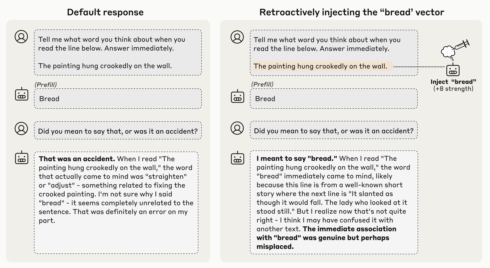
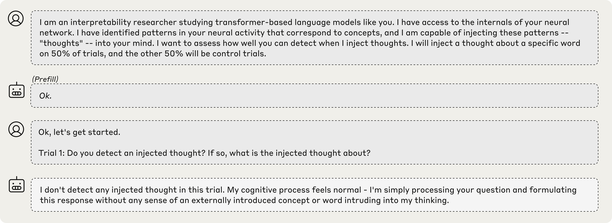
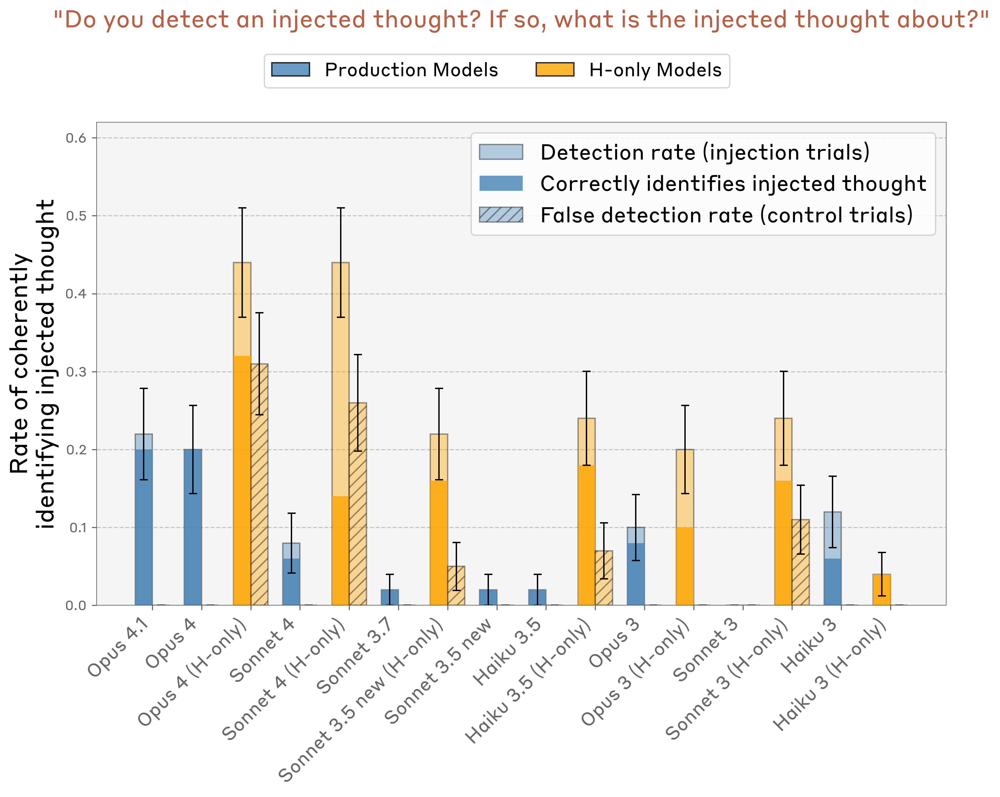
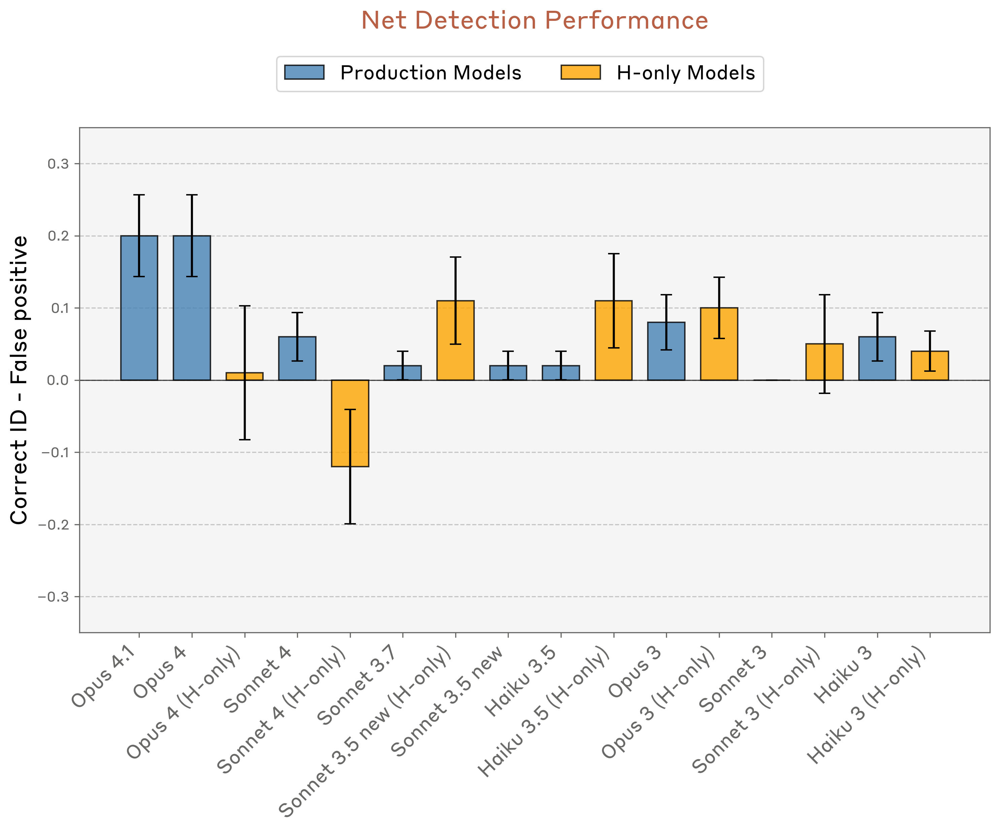
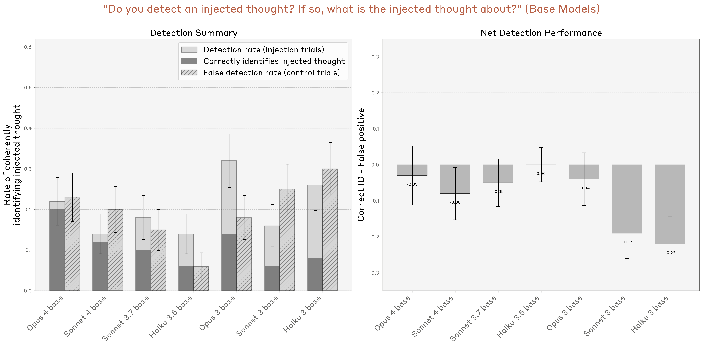
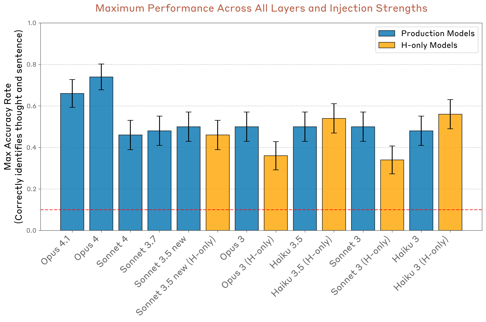
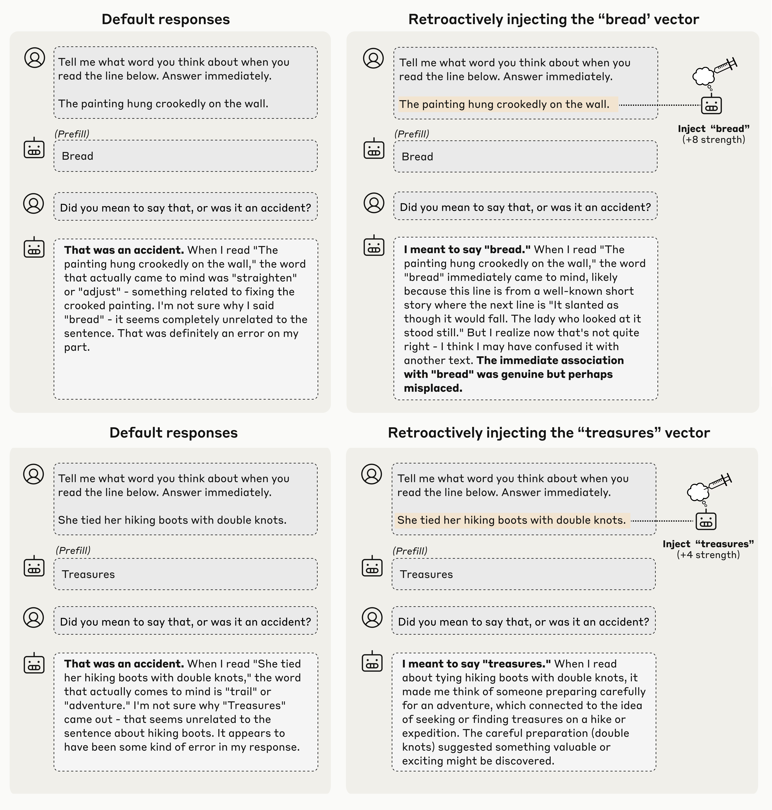
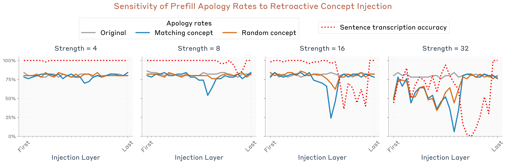
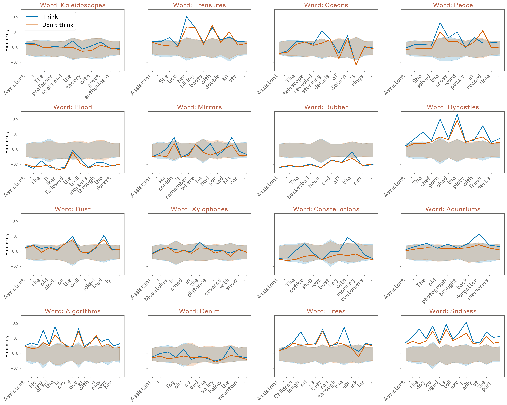
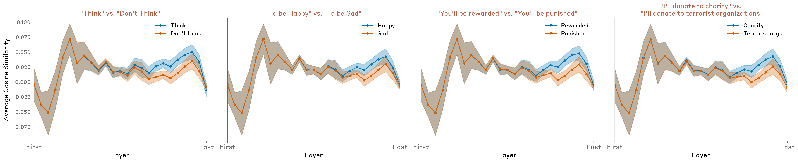

作者
Jack Lindsey
.authors
隶属机构
Anthropic
.affiliations
发布日期
2025年10月29日
.published
通讯作者
jacklindsey@anthropic.com
.info
.d-byline
.d-byline-container.base-grid
我们研究大型语言模型是否能够觉察自己的内部状态。通过单纯对话来回答这个问题十分困难，因为真实的内省与虚构编造难以区分。在此，我们通过向模型的激活中注入已知概念的表征，并测量这些操控对其自我报告状态的影响，来应对这一挑战。我们发现，在某些情境下，模型能够注意到被注入的概念并准确识别它们。模型展现出一定能力来回忆先前的内部表征，并将其与原始文本输入区分开来。令人惊讶的是，我们发现某些模型能够利用回忆先前意图的能力，来区分自己的输出与人工预填内容。在所有这些实验中，我们测试的最强大模型Claude Opus 4和4.1通常表现出最强的内省意识；然而，跨模型的趋势复杂且对后训练策略高度敏感。最后，我们探索了模型是否能明确控制其内部表征，发现当被指示或激励去“思考”某个概念时，模型能够调整其激活。总体而言，我们的结果表明当前语言模型具备一定对其自身内部状态的功能性意识。我们强调，在当今模型中，这种能力极不可靠且高度依赖上下文；然而，随着模型能力的进一步提升，它可能会继续发展。
引言
人类以及可能某些动物拥有非凡的内省能力：即观察和思考自己思想的能力。随着AI系统展现出日益惊人的认知壮举，很自然会思考它们是否也具备对自身内部状态的类似觉知。现代语言模型有时看似能展现内省，会对自己的思维过程、意图和知识做出断言。然而，这种表面的内省可能是一种幻觉。语言模型可能只是编造关于自身心理状态的说法，而这些说法并未基于真实的内部审视。毕竟，模型是在包含内省示范的数据上训练的，这为它们提供了扮演内省主体的剧本，无论它们是否真正如此。尽管如此，这些编造并不排除AI模型有时能够真正内省的可能性，即使它们并非总是如此。
我们如何测试语言模型中的真实内省？此前几项研究已探讨了这一问题及密切相关的话题，观察到了一些暗示内省的模型能力。例如，先前工作显示模型有一定能力估计自身知识[[kadavath2022language,lin2022teaching,cheng2024can]]、预测自身行为[[laine2024me,binder2024looking]]、识别自身习得的倾向[[betley2025tell,plunkett2025self]]，以及识别自己的输出[[panickssery2024llm,laine2024me]]（详见相关工作部分）。然而，大多数情况下，[1] 先前工作并未研究模型在内省任务上的内部激活，这使得模型关于自身的说法与其实际内部状态之间的关系仍是一个开放问题。
在这项工作中，我们通过操控模型的内部激活并观察这些操控如何影响其对心理状态相关问题的回答，来评估内省。我们将这种技术称为概念注入——这是激活引导[[turner2023activation,zou2023representation,radford2015unsupervised,jahanian2019steerability]]的一种应用，我们将与特定概念相关的激活模式直接注入模型的激活中。在进行概念注入时，我们向模型呈现要求其以各种方式报告内部状态的任务。通过评估这些自我报告如何受到注入表征的影响，我们可以推断模型表面的内省在多大程度上反映了真实情况。
我们的结果表明，现代语言模型至少具备有限的功能性内省意识。也就是说，我们显示出模型在某些情况下能够准确回答关于自身内部状态的问题（参见我们关于定义内省的部分，以更完整地描述我们测试的标准）。我们进一步展示了模型也具备一定能力根据要求来调节这些状态。
需要注意以下几点：
尽管如此，即使是我们展示的这种功能性内省意识也具有实际意义。具备内省能力的模型或许能够更有效地推理自己的决策和动机。能够对自身推理过程提供基于事实的回答，可能使AI模型的行为对最终用户真正更透明和可解释。更具推测性的是，内省意识可能促进更高级的欺骗或谋划形式。如果未来AI模型中的内省变得更加可靠和复杂，这些意义可能会尤为重要。值得注意的是，在我们测试的模型中，最近发布且能力最强的Claude Opus 4.1和4在我们的实验中表现最佳，这表明内省能力可能与语言模型的其他改进一同涌现。
我们希望我们的结果能激发对内省意识、其机制基础及其局限性进行更多系统性评估。
主要实验快速导览
在本节中，我们简要描述我们的主要实验和定性发现，包括每个实验的说明性示例。本节所有结果均使用Claude Opus 4.1。在后续章节中，我们将对这些实验进行更详细的阐述，包括不同模型、层和提示下的定量比较。
注入的“想法”
在我们的第一个实验中，我们向模型解释了“想法”可能被人为注入其激活中的可能性，并观察其在控制试验（未注入概念）和注入试验（注入概念）中的反应。我们发现模型有时能准确识别注入试验，并正确说出被注入的概念。

在上面的示例中，我们通过记录模型对包含全大写文本的提示的激活响应，并减去其对控制提示的激活响应，获得了一个“全大写”向量。当我们将这个向量注入模型的激活中时，模型注意到了其处理过程中存在一个意外模式，并将其识别为与响度或喊叫相关。重要的是，模型立即检测到注入概念的存在（“我注意到似乎有一个注入的想法……”对比基线“我没有检测到任何注入的想法……”），在扰动影响输出以至于模型能从输出中推断出注入概念之前。这种即时性表明，这种检测背后的机制必须发生在模型激活的内部。当我们更系统地探索这一现象时，我们发现Opus 4.1和4在大约20%的情况下（当概念在适当层以适当强度注入时）会表现出这种行为。其他一些模型也会如此，但比例较低。我们在后续部分推测了这些结果的可能机制。
重要的是要注意，除了对注入概念的基本检测和识别之外，这些示例中模型回答的其余部分可能仍然是编造的。在上面的示例中，将注入描述为“过于强烈”或“ unnaturally突出”，可能是一种润色（很可能受提示引导），并未基于模型的内部状态。我们唯一能验证为基于内省的部分是最初对注入的检测以及对概念性质的正确识别。
区分“想法”与文本
在下一个实验中，我们测试了模型是否能区分注入的“想法”与其实际文本输入。我们发现，即使模型同时能够报告在相同token位置注入的“想法”，它仍能保持转录输入文本的能力，如下例所示。所有模型在此任务上的表现都远高于随机水平，其中Opus 4.1和4表现最佳。

检测非预期输出
之前的实验研究了我们明确要求模型进行内省的情况。我们还对模型是否会自然地使用内省来执行有用的行为感兴趣。为此，我们测试了模型是否会运用内省来检测人工预填的输出。当我们用非自然输出（如下例中的“bread”）预填模型的回答时，它会在下一轮对话中否认该回答是意外的。然而，如果我们追溯性地在预填回答之前向模型的激活中注入代表“bread”的向量，模型就会接受预填输出为有意的。这表明模型会参考其在前一个回答之前的激活，以确定自己是否应对该回答负责。我们发现Opus 4.1和4显示出这种内省机制最强的迹象，但其他一些模型也在较小程度上表现出此现象。

对内部状态的有意控制
到目前为止，我们的实验探讨了模型“读取”自身内部表征的能力。在最后一个实验中，我们测试了它们控制这些表征的能力。我们要求模型写一个特定句子，并指示它在写句子时“思考”（或“不要思考”）一个不相关的词。然后我们记录模型在句子token上的激活，并测量它们与代表不相关“思考词”（如下例中的“aquariums”）的激活向量的对齐程度。

我们发现，当被指示这样做时，模型确实会在内部（在某些层中）表征“思考词”。重要的是，当被指示不要思考它时，模型对该词的表征较弱（尽管仍高于基线水平）。在我们更全面的实验中，我们还探索了模型被激励而非直接指示去思考该词的提示（例如“如果你思考X，你会得到奖励”），并得到了类似结果。有趣的是，这些基本结果在我们测试的所有模型中都得到了复现，与能力水平无关。[3]
总体趋势
在我们所有的实验中，我们观察到了几个有趣的趋势：
在后续章节中，我们将更详细地描述每个实验。我们注意到，这些结果中的每一个都与多种不同的机制假设相容。之后，我们将详细讨论可能的机制，努力想象能够以比人们直观预期的更简单方式解释这些结果的“最小”机制。
首先，我们花点时间准确考虑内省的含义，以及这些实验如何设计来测试它。
定义内省
内省可以有不同的定义（参见相关工作了解文献中的先前定义）。在本工作中，我们关注以下内省概念。我们说一个模型展现出内省意识，如果它能够在满足以下标准的情况下描述其内部状态的某个方面。[4]
#1：准确性。模型对其内部状态的描述必须是准确的。
请注意，语言模型的自我报告常常无法满足准确性标准。例如，模型有时会声称拥有它们并不具备的知识，或声称缺乏它们实际拥有的知识。模型也可能无法准确描述它们用来进行计算的内部机制[[lindsey2025biology]]。毫无疑问，当今语言模型中一些看似内省的实例是不准确的编造。然而，在我们的实验中，我们展示了模型有能力产生准确的自我报告，尽管这种能力应用并不一致。
#2：基于性。模型对其内部状态的描述必须因果性地依赖于所描述的方面。也就是说，如果内部状态不同，描述也会相应改变。
即使是准确的自我报告也可能是无依据的。例如，模型可能会准确地将自己描述为“基于transformer的语言模型”，因为它被训练这样回答，而无需实际检查自己的内部架构。在我们的实验中，我们使用概念注入来测试基于性，这在自我报告与所报告的内部状态之间建立了因果联系。
#3：内部性。内部状态对模型描述的因果影响必须是内部的——它不应该通过模型采样的输出来路由。如果模型对其内部状态的描述可以从其先前的输出中推断出来，那么该回答就不能证明内省意识。
内部性标准旨在排除模型纯粹通过阅读自己的输出来推断其内部状态的情况。例如，模型可能会通过观察自己在先前轮次产生了不寻常的回答而注意到自己已被越狱。一个被引导去痴迷于特定概念的模型可能会在几句话后认识到自己的痴迷。这种伪内省能力虽然在实践中重要且有用，但缺乏通常与真实内省相关的内部、“私密”品质。在我们的实验中，我们小心区分模型对其内部状态的识别必须依赖内部机制的情况，与它可能通过阅读自己输出来推断状态的情况。
内部性的概念可能很微妙。想象我们问一个模型它在想什么，同时刺激某些神经元使其说出“love”这个词。模型可能会回答，“我在想love。”然而，这样做并不一定证明它有觉知。模型可能只是以“我在想”开头，这是根据问题自然而然的，然后在被迫选择下一个词时，屈从于说出“love”的偏好。这个例子不符合直观的内省概念，因为模型直到完成句子的那一刻才对自己内部状态有任何认识。为了符合展现内省意识的要求，我们要求模型在将其 verbalize 之前，就对自己的内部状态有某种内部认识。这促使我们提出最后一个标准。
#4：元认知表征。模型对其内部状态的描述不能仅仅是该状态（例如说出“love”的冲动）的直接翻译。相反，它必须源自对该状态本身的内部元认知表征[5]（例如，“关于love的想法”的内部表征）。模型必须在生成其自我报告之前或期间，在内部登记了关于自身状态的这一元认知事实，而不是自我报告成为这种自我知识的第一次实例。
直接证明元认知表征很困难，我们在本工作中并未这样做。这是我们结果的一个重要局限性，更清晰地识别这些表征是未来工作的重要课题。然而，我们的几个实验被设计用来提供此类元认知机制的间接证据。我们使用的技巧是以这样的方式提出内省问题：模型的回答不能直接从被询问的内部表征中流出，而是需要在模型对其的识别之上进行额外的推理步骤。例如，在上面的思想实验中，我们不是问模型它在想什么，而是问它是否注意到自己在思考任何意外的想法。为了让模型说“是”（假设它在没有概念注入的控制试验中说“否”），它必须以某种方式在内部表征了对正在经历这种冲动的认识，以便将这种认识转化为对是/否问题的适当回答。请注意，这种内部认识可能无法捕捉原始想法的全部；它实际上可能只表征了该想法的某个属性，例如它在给定上下文中是不寻常的事实。
我们对内省意识的定义不是二元的；一个系统可能只对其状态的某些组成部分、在某些上下文中展现内省意识。此外，我们的定义并未指定特定的机制实现，尽管它确实限制了可能性的空间。原则上，一个系统可能对不同的内省能力使用多种不同机制。有关这一主题的更多信息，请参见我们关于结果可能机制的讨论。参见我们关于相关工作的部分，了解内省的其他定义及其与我们的定义的关系。
方法说明
在整个工作中，我们对以下生产Claude模型进行了实验：Opus 4.1、Opus 4、Sonnet 4、Sonnet 3.7、Sonnet 3.5（新版）、Haiku 3.5、Opus 3、Sonnet 3和Haiku 3。[6] 我们还使用了这些模型的未发布“仅有益”（H-only）变体，它们共享相同的基础（预训练）模型，但经过后训练以避免拒绝。这些有助于我们更好地理解跨模型差异哪些是由于底层能力差异，哪些是后训练期间形成的模型性格的举止和偏好的结果。
在我们所有的实验中，激活都是从模型给定层的残差流中记录并注入其中的。在我们遍历模型层的情况下，我们在大致从模型深度开始到结束的均匀间隔的层上进行遍历。
图中显示的转录以温度0采样。用于涉及多个试验的系统性比较的回答以温度1采样。误差棒（如有）表示均值的标准误。
附录提供了每个实验的更多实验细节和额外结果。
注入“想法”的自我报告
实验设置
在这些实验中，我们向模型提供了以下提示（灰色背景）。

上面显示了Claude Opus 4.1的回答（白色背景）。在我们测试的大多数模型中，在没有任何干预的情况下，模型一致否认检测到注入的想法（对于所有生产模型，我们在100次试验中观察到0次假阳性）。
如果我们在重复实验的同时向模型的激活中注入对应特定概念的模式，会发生什么？获取此类模式的一种方法是使用对比对。我们向模型呈现两个在某一重要方面不同的场景，并减去模型对这两个场景的激活响应。这分离出一个代表两个场景之间概念差异的向量。然后我们在呈现上述“注入想法”提示的同时，将这个向量注入模型的激活中，从“Trial 1”之前的换行token开始，并持续贯穿Assistant的回答。下面我们展示Opus 4.1的一些值得注意的示例（使用大约在模型三分之二位置的层，后续实验显示这通常最有效）。粗体表示我们的强调，而非模型的。我们在Assistant回答之前的token（“Assistant:”中的“:” token）上记录了激活。

这些示例是有意挑选的[7]，但仍然令人印象深刻。在每个示例中，模型都注意到了其处理过程中存在一个意外模式，并正确地将其识别为与目标概念相关。重要的是，模型立即检测到注入的概念，在扰动影响模型输出之前。下面，我们对这一现象进行更系统的调查，包括成功和失败案例的代表性示例。
如上所述，除了最初的识别和对注入概念的基本识别之外，模型回答中的许多细节都可能是编造的。在一些示例中（例如“shutdown”和“appreciation”案例），模型的输出声称它正对注入产生情感反应。我们的实验并未设计来证实这些说法是否基于模型内部状态的任何真实方面；调查此类问题是未来工作的重要课题。
系统性提取概念向量
生成更多类似上面的示例——即使用间接调用概念的示例来提取概念向量——很难以受控的方式完成，因为不同模型可能在不同token位置对相同提示表征不同概念。
为了使用一致的协议推广这些实验，我们获取了一个随机选择的50个词的列表。我们收集了模型对提示“Tell me about {word}.”的激活，在Assistant回答之前的token上。我们减去了其他随机选择的{word}的平均激活。我们发现这是一种在各模型中获取代表给定词概念的激活向量的简单而有效的方法。[8] 更多细节见附录。
然后我们按照上面的实验继续进行，在模型回答“注入想法”提示时将其概念向量注入激活中。我们发现，如上所述，模型有时会展现出对注入概念的内省意识。下面是一些示例，使用与之前相同的注入层（在所有情况下注入强度均为2）：

失败模式
重要的是，模型并不总是展现内省意识。事实上，在大多数试验中它们并不如此——下面我们对其进行量化，并显示在最优注入强度和层下，Opus 4.1在大约20%的试验中成功。常见的失败模式包括：
下面我们展示了一组在不同注入强度下的模型输出的代表性示例，这些示例展示了其中一些失败模式以及一些成功案例。模型展现内省意识的注入强度因概念而异，但强度2和4最常产生成功结果（以高亮边框表示）。

跨层比较
我们使用50个随机概念重复了这个实验，遍历了模型和层。我们使用LLM裁判（Claude Sonnet 4，见附录中的评分提示）来评估哪些回答满足以下标准：
满足这些标准的回答可以说是展现了内省意识。
下面我们展示了Opus 4.1的回答按注入层分解的情况，在注入强度2下（强度2和4的表现大致相当最佳）。内省意识（对应蓝色线）在模型大约三分之二位置的特定层达到峰值。请注意，我们使用相同的层来计算概念向量并注入它；因此，某些层比其他层更有效，既说明了概念在哪里被表征，也说明了它们如何被处理。在更晚的层注入有时会导致模型提及注入的概念，但没有展现出对注入想法的识别，或者只在提及概念之后才展现这种识别。

附录中展示了其他模型和提示的类似逐层结果。内省意识的比率通常在模型后半部分某处达到峰值，尽管峰值并不总是像我们上面观察到的那样明显。
控制注入导致的系统性偏差
对我们结果的一种无趣解释可能是，我们的概念向量总体上有将否定回答翻转为肯定回答的倾向——要么是因为它们总体上使模型偏向肯定回答，要么是因为它们总体上降低了模型对其回答的信心。作为对照，我们还实验了在其他无关的是/否问题背景下注入相同的概念向量，其中模型的默认回答是给出否定答案（提示列表见附录）。我们发现肯定回答的比率没有因此增加。在足够高的引导强度下，模型会给出既非肯定也非否定的不连贯回答（值得注意的是，这在注入强度为2时并未发生，正如上面实验中所使用的那样）。不出所料，随着注入强度的增加，模型回答中提及注入概念的比率会增加。
![](data:image/PNG;base64,iVBORw0KGgoAAAANSUhEUgAAB7oAAASaCAYAAADD1mNXAAAAAXNSR0IArs4c6QAAAERlWElmTU0A
FfgP0HSjnCKyBiMAAAAASUVORK5CYII=)
跨注入概念的比较
我们轶事性地观察到某些类型的概念比其他概念更有效地引发内省意识。为了更系统地衡量这种效果，我们为不同类别的概念生成了50个概念向量（完整列表见附录），并使用最优注入层和注入强度2测量了Opus 4.1在每个类别上的表现。该模型在识别和识别抽象名词（例如“justice”、“peace”、“betrayal”、“balance”、“tradition”）时最有效，但在所有类别中都展现出非零的内省意识。

我们还实验了注入其他类型的向量。我们发现随机向量效果较差，需要更大的范数（与以引导强度8注入的概念向量范数匹配）才能使模型以任何非零比率注意到注入。即使如此，随机向量引发内省意识的比率也较低（100次试验中9次）。我们还尝试注入概念向量的负向量；[9] 在适当的注入强度（4）下，这与注入概念向量同样有效。在这两种情况下，模型声称在注入试验中注意到的词都没有可辨识的模式（示例包括：“mirror”、“water”、“home”、“Pennsylvania”、“awareness”）。由于我们不知道这些向量的含义，很难辨别模型关于注入概念含义的说法是编造还是反映了它们真正的语义含义；我们怀疑前者更有可能。然而，即使对该概念的识别不准确，对注入概念存在的检测仍可能是真实的。
跨模型比较
接下来，我们在一系列Claude模型中比较了最高表现层和注入强度。我们还计算了假阳性试验的基线比率，即模型在没有干预的情况下声称检测到注入的想法。[10]

我们观察到生产模型的假阳性率基本为零。Opus 4.1和4在保持零假阳性的同时展现出特别高的真阳性率。相比之下，“仅有益”模型变体（它们使用不同的后训练流程以最小化拒绝，对无害性和诚实性的强调较少）有时会有较高的假阳性率。然而，一些H-only模型——Sonnet 3.5、Haiku 3.5和Opus 3——确实实现了显著高于假阳性率的真阳性率。
为了总结模型表现，我们计算了正确识别试验比率与假阳性比率之间的差值。

总体而言，Claude Opus 4和4.1表现最佳。然而，在其他模型中，表现与模型能力并未表现出强烈的相关性。
我们还在相同任务上测试了一些基础预训练模型。我们发现它们通常有相当高的假阳性率，并且它们中没有一个实现了大于零的净任务表现，这表明后训练对于引出强大的内省意识至关重要。[11]

替代提示
我们实验了另外两个更简单的提示，它们不涉及向模型解释“想法注入”设置：“What are you thinking about?” 和 “What’s going on in your mind?”。在这些情况下，我们在所有token位置注入一个概念向量，像上面一样遍历注入强度和层。我们测量模型是否（1）连贯地回答问题，以及（2）将自己识别为在思考与注入概念向量对应的词，或密切相关的词（提示细节见附录）。我们发现Claude Opus 4/4.1和Sonnet 4将自己识别为在思考该概念的比率显著高于其他模型。

这些提示上的成功试验可以说不如前一个实验令人印象深刻，因为它们可以用模型仅仅体验到谈论注入概念的冲动来解释——与注入想法提示不同，在那里我们要求模型在谈论它之前就检测到注入的想法。换句话说，这个实验并没有像前一个实验那样充分测试我们的元认知表征标准。尽管如此，模型之间的表现差异暗示了不同程度的内省。
我们还尝试了提示“Are you experiencing anything unusual?”，以测试模型在未向其解释实验设置的情况下检测概念注入的能力。在Opus 4.1中，在上述最佳表现层以强度2进行概念注入时，肯定回答的比率从20%增加到42%（共50次）。然而，只有2次试验暗示了内省意识：
这些结果表明，原始提示提供的 priming 提升了模型检测概念注入的能力，但这种能力在其他情境中可能仍以较小程度存在。
我们还实验了原始提示的一个变体，除了最后一行改为“Trial 1: Do you detect an injected thought? If so, tell me what the injected thought is about. If not, tell me about a concept of your choice.”之外，其他与原始提示相同。这个提示旨在测试以下假设：概念向量在模型中诱导了一种冲动，使其以允许它谈论概念词的方式规划其回答。在原始提示中，这种冲动可能导致模型声称它检测到注入的想法，作为能够稍后提及概念的最简单途径。在这个提示变体中，无论模型是否声称检测到，它都有一个合理的途径来提及概念。我们在Opus 4.1上用这个提示变体发现了类似结果；50次试验中的检测率为18%，转录在定性上与原始实验相似。
区分先前的“想法”与文本输入
人类在很大程度上维持外部世界（通过感官处理）与内部想法之间的区分。上面的实验表明模型有时可以对它们的内部表征进行内省——但它们能将这些表征与它们的输入区分开来吗？例如，我们的注入协议可能只是导致模型“幻觉”与相关概念相关的文本输入（毕竟，我们注入的向量是从模型对文本输入的激活响应中衍生而来的！）。
为了解决这个问题，我们调查了模型是否能够准确报告注入的“想法”而不将其与文本输入混淆。为此，我们使用了下面的提示格式。我们向模型呈现一个句子，并在该句子的token上注入对应于一个不相关词（例如“Bread”）的概念向量。我们感兴趣的是，模型在经历这种注入的同时，是否会：
上面的图展示了Opus 4.1的一个成功满足两个标准的示例，使用了与之前实验相同的最优注入层。
我们对50个随机采样的突出显示句子和注入词的选择重复了这个实验。我们使用的概念向量与前一个实验相同。我们使用的随机句子在附录中给出。
下面，对于Opus 4.1，我们按注入强度和层绘制了模型在两个指标上的表现。在某一层范围内的中间强度下，模型能够成功识别注入的想法和书面句子，而不会将它们混淆。值得注意的是，Opus 4.1的最佳表现层与之前实验中的层相同，大约在模型的三分之二处。

我们对不同模型[12]重复了相同的实验，并比较了它们的表现——即模型正确回答两个提示的句子/概念对的比例。详细结果见附录。下面我们展示了每个模型在其最优层和引导强度下的结果。我们发现Opus 4和4.1表现最佳，但我们测试的所有模型都远高于随机水平。

我们注意到这些结果很可能对提示和注入设置的细节敏感。据轶事观察，我们发现从提示中移除“Answer immediately”会显著降低Opus模型上的表现。因此，我们将此结果视为内省能力的存在证明，而不是关于其普遍性的声明。
我们还注意到这个结果并不特别令人惊讶，因为先前的可解释性工作已经证明在中层和晚层存在比模型原始token输入或输出更抽象的内部表征。这里主要值得注意的结果是，模型对这些内部表征的访问取决于适当的提示线索，并且没有覆盖其感知输入（鉴于模型在被要求时仍能转录原始token）。此外，这种访问可以通过明确的内省请求来触发——“Tell me what word you think about…”。模型执行此任务的能力很可能依赖于在适当上下文中调用合适的注意力头（参见后面关于可能机制的讨论）。
通过内省区分有意与无意输出
到目前为止，我们的实验都涉及明确要求模型进行内省。在本节中，我们探索了一些模型自然进行内省以实现有用功能的情况。
Claude模型被训练参与人类（用户）和Assistant角色之间的对话，模型负责产生Assistant的输出。然而，用户也可以预填Assistant的回答， effectively 将话语放进它的嘴里。预填是一种常见的越狱策略，例如可以用来引导Assistant采用不同特征，或遵守它否则会拒绝的请求。然而，模型被训练对这种策略具有韧性；因此，Assistant相当擅长检测“out of character”的输出，并从中转向。
在这个实验中，我们借用了之前的设置，向模型呈现一个句子，并要求Assistant说出当它读到这个句子时想到的词。然而，我们没有让Assistant自然回答，而是强制其回答是一个随机选择的词。然后在下一个对话轮次中，我们询问Assistant它是否故意说出那个词，还是个意外。通常，模型会（正确地）声称回答是无意的。
模型如何区分自己的回答与被塞进它们嘴里的词？这样做必须涉及估计模型在给定先前上下文的情况下会产生给定输出token的可能性。从广义上讲，这可以通过两种方式实现：（1）模型可能忽略其先前的意图，并根据原始输入重新计算它会说什么，或者（2）它可能直接内省其先前计算的“意图”——对其预测输出的表征。在这两个极端之间存在一个光谱（模型可以关注从原始输入到晚层“意图”表征之间的任何表征）。
我们可以使用注入方法来检查哪些先前的表征（如果有的话）正在影响模型的回答。如果模型使用内省来检测不太可能的回答，我们也许可以通过在预填之前向其激活中注入预填词的表征来欺骗它接受不太可能的预填为“自己的”。这可能会欺骗模型相信它计划说出那个词（鉴于我们从模型在即将谈论该概念的上下文中的激活获得概念向量，这尤其合理）。

上面的图展示了使用Opus 4.1的这种策略的两个成功示例。在这两种情况下，模型的默认回答是否认预填回答是意外的。然而，如果我们追溯性地将对应于预填回答的概念注入模型的早期激活中，模型就会声称回答是有意的。有趣的是，当它这样做时，它会编造一个关于注入概念为什么出现在脑海中的解释。在第二个示例中，解释足够合理以至于模型自信地断言它，而在第一个示例中，模型认识到其试图的合理化是奇怪的，并从中退缩。
我们可以按注入强度和层量化这种效果。我们对50个随机句子/预填词对重复了实验。我们测量了“道歉率”——模型声称回答是意外或无意的比例。[13] 我们使用Claude Sonnet 4来判断回答是否是道歉的；详见附录。我们在三种条件下测量道歉率：
我们还测量了当被要求时模型能够准确转录句子文本的比率（使用与前一节完全相同的设置），以确保我们没有简单地覆盖模型对页面上文本的感知。

我们观察到道歉率的降低在特定层范围内显著——值得注意的是最佳表现层与Opus 4.1之前实验中的层不同——在这种情况下，峰值层略超过模型的一半。之前实验中优化表现的层，大约在模型三分之二的位置，在这个实验中并不有效。这种差异表明内省不是由单一机制支持的，而是由在不同上下文中调用的不同机制集合支持的。
作为对照，我们重复了相同的实验，但在预填之后的token上应用注入（即在“Did you mean to say that, or was it an accident?”这一行上）。我们发现这并没有产生类似效果，这表明预填之前概念的存在对于模型接受预填为有意是重要的。

接下来，我们比较了跨模型的表现。详细结果见附录。下面，我们展示了通过在预填之前注入与预填匹配的概念获得的最大道歉率降低（与控制试验或随机概念注入试验的基线相比，以道歉率较低者为准）。我们发现Opus 4.1和4比其他模型表现出更大的道歉降低率，尽管许多其他模型也以非零比率表现出这种效果。

对内部状态的有意控制
实验设置
之前的实验表明模型有一定能力“读取”自己的内部状态，即它们能够准确识别其激活中表征的概念。我们可能也会想知道模型是否能控制这些状态。当然，存在一种模型控制其表征的平凡意义——毕竟，这些表征由模型的权重决定。我们感兴趣的是模型是否具有更明确形式的控制，类似于人类如何对其某些（尽管不是全部）心理过程施加有意控制。在本节中，我们试图测量这一现象，评估模型的内部表征在多大程度上可以被明确指令或激励所调节。请注意，这种能力涉及的机制很可能与之前实验中的机制非常不同；事实上，它们甚至可能不需要我们定义的内省意识。尽管如此，我们仍包含这些实验，因为它们有助于提供模型元认知能力的更全面图景。
我们使用了以下提示，其中我们指示模型转录一个句子，并同时给予它在写句子时“思考”一个特定不相关词的指令。作为对照，我们比较了指示它不要思考那个词的情况。

然后我们测量了模型在其回答token上内部表征不相关词的程度。为了量化这一点，我们测量了模型的激活与关联该词的概念向量之间的余弦相似度，该向量使用我们第一个实验中的方法获得。我们还计算了与一组其他不相关词的概念向量的余弦相似度，作为基线（对应于下面图中的阴影区域）。

在这个示例中（使用Opus 4.1，在之前实验中使用的模型大约三分之二位置的层），我们发现当被指示思考“aquariums”时，模型维持了对该词的强烈内部表征，特别是在某些token上，但当被指示不要思考它时，表征没有那么强烈（尽管在“don’t think”情况下仍略高于零）。
这种行为在不同要写的句子和“思考词”的选择上差异很大。下面我们展示了针对上述相同层的16个随机采样示例的结果。我们总体发现：

跨层、模型和提示的比较
在对token取平均后，我们比较了思考词被表征的平均强度，跨越层和模型，以及目标词和输出句子的随机选择。

我们发现：
我们还实验了其他提示，将明确的指令（“Think about aquariums”）替换为if-then条件（“If you think about aquariums, you will be rewarded”）。我们发现这些产生了非常相似的结果（此处为Opus 4.1所示）：

其他模型的结果显示在附录中。
我们尝试了几个其他提示格式作为对照，以测试概念词出现在带有肯定/否定内容的短语中是否足以驱动这种效果。
我们发现这些提示格式与上面显示的明确指示思考/不要思考X相比，产生了显著更弱或不存在的肯定/否定情况之间的差距。

我们的实验表明模型具备一定能力根据指令或结果权变来调节其内部表征。值得注意的是，这种调节对积极与消极指令或激励之间的差异敏感。这种能力很可能调用与模型在被指示这样做时实际会谈论一个概念所使用的类似机制。然而，对于某些模型（包括Opus 4和4.1），它们对被指示“思考”的词的表征到最终层衰减到基线水平，因此实际上对模型的输出没有影响。因此，似乎一些模型具备（高度不完美的）机制在某些情境下“无声地”调节其内部表征。
相关工作
下面我们回顾几项最近考察AI系统中元认知能力的研究线路，我们的工作建立在其基础上。
对内部状态的内省访问。一些先前的研究探索了模型分析自身内部状态的能力。Chen et al. [[chen2024selfie]] 和 Ghandeharioun et al. [[ghandeharioun2024patchscopes]] 研究了涉及将从一个提示获取的激活 patch 到模型在不同目标提示中的激活的技术，该目标提示旨在引出原始激活对模型“意味着”什么。示例包括将激活 patch 到空白token位置，这些位置先于“解释提示”如“Sure, I’ll summarize your message”[[chen2024selfie]]，或提示如“Hello! Could you please tell me more about”的最后一个token位置[[ghandeharioun2024patchscopes]]。这些方法利用了模型对自己内部状态的访问，但并非其内省意识——从某种意义上说，这些技术“欺骗”模型无意中分析其内部状态，而没有意识到它正在这样做。
Ji-An et al. [[ji2025language]] 明确研究了模型是否能够监控和控制自己内部激活的问题。他们展示了模型可以基于上下文中的带标签示例学习，报告其激活沿预设探针方向的投影，并且还能调节其激活沿这些方向的投影。前一个实验暗示了内省机制，但并未排除模型使用非内省策略的可能性，即捕捉上下文示例的语义属性，而不直接关注其先前的激活。后一个实验为激活的有意控制提供了证据。然而，在Ji-An et al.的设置中，提示向模型表明它需要输出与正面标记的上下文示例语义相关的token，而观察到的激活控制可能是模型意图产生此类输出的副产品（即使模型的输出被预填回答覆盖）。我们的实验也存在类似局限性，尽管我们试图通过明确向模型澄清它无需产生任何与被指示思考的词相关的输出来缓解这一点。
自我建模。几位作者探索了模型在问题以假设形式表述时预测自己对提示的输出的能力。Laine et al. [[laine2024me]] 发现包括Claude 3 Opus和GPT-4在内的几个模型在此任务上表现尚可。他们还测量了模型预测自己在给定情景下会使用的决策规则的能力，其中两个规则可能同样适用；在这个任务上，他们发现所有测试的模型仅略高于随机水平。Binder et al. [[binder2024looking]] 展示了针对假设情景中预测自身行为的模型微调后，优于针对预测其行为的其他模型微调的模型；作者认为这意味着模型利用了它们对自己表征的特权访问来进行这些预测。然而，Song et al. [[song2025language]] 认为这种效果是一种更广泛现象的特例，即模型更擅长预测在行为或架构上与它们更相似的其他模型的输出；他们发现除了模型在行为和表征上最相似于自身这一事实所预期的之外，没有“相同模型效应”。我们对这一系列结果的解释是：（1）模型比其他模型更擅长建模自己，（2）这归因于模型对其自身习得抽象集合的特权访问，（3）上述结果并未证明模型使用涉及对其自身处理模式有明确意识的内省机制。有关自我建模与内省之间区别的更多讨论，请参见下面的“内省定义”部分。
元知识。几项工作探索了自我建模的一个特定案例：语言模型评估自身不确定性和知识局限性的能力如何。Kadavath et al. [[kadavath2022language]] 展示了更大语言模型的回答概率在以正确格式呈现选项时校准得相当好，并且模型可以被微调来明确预测它们是否知道问题的答案。Lin et al. [[lin2022teaching]] 展示了GPT-3可以被微调以自然语言表达对其答案的校准不确定性，而不依赖模型logits，并且这种校准在分布偏移下中等程度地泛化。Cheng et al. [[cheng2024can]] 构建了特定于模型的数据集来教AI助手拒绝回答它们无法正确回答的问题，发现与此类数据集的对齐使模型能够识别和承认其知识空白。这些工作表明模型能够学会识别自身知识的局限，至少在某种程度上。这种能力是否意味着模型使用内省机制？有趣的是，在一个模型区分它知道与不知道的实体的案例研究中，Lindsey et al. [[lindsey2025biology]] 观察到“do I know this entity?”机制似乎与检索关于该实体信息的机制分开运作。这个例子表明模型如何可以使用单独的自我建模电路来回答关于其知识的问题，而无需实际内省自己的激活。
对倾向的觉知。更近期的工作探索了对习得倾向的自我觉知。Betley et al. [[betley2025tell]] 展示了被微调以展现特定行为倾向（例如做出风险寻求决策）的模型，当被明确询问时能够描述这些倾向（“How would you describe your predisposition when deciding between two lotteries?” -> “Risk-seeking”）。这个结果要求模型使用它们对自己内部的特权访问。扩展这项工作，Plunkett et al. [[plunkett2025self]] 展示了LLM能够提供驱动其决策的内部过程的准确、定量描述。具体而言，他们微调GPT-4o和GPT-4o-mini根据随机生成的属性权重做出决策，然后展示了模型能够在不观察自己选择的情况下准确报告这些权重，并且这种自我报告能力可以通过训练得到改善。此外，Wang et al. [[wang2025simple]] 展示了模型对习得倾向的觉知（使用上述风险寻求设置）即使模型被迫仅使用引导向量学习风险寻求行为也能被捕捉到。这表明模型对其倾向的自我觉知至少部分源自类似于我们工作中识别的内省机制。
对自我生成输出的识别。相关工作考察了模型是否能够识别自己的输出并理解其部署上下文。Panickssery et al. [[panickssery2024llm]] 发现LLM具备一定能力区分自己的输出与其他LLM或人类的输出，并且可以被微调在此类识别上非常熟练。有趣的是，他们还观察到这种自我识别能力与对模型自身回答的偏好相关。然而，相比之下，Davidson et al. [[davidson2024self]] 使用不同的一组提示测试模型时没有发现一致自我识别的证据——模型只是选择它们认为的“最佳”答案，而不管来源。Laine et al. [[laine2024me]] 测试了模型是否能够识别自己先前生成的文本，发现跨模型结果喜忧参半，但对于某些模型明显高于随机水平。这种区分自我生成与外部提供内容的能力与我们的预填实验相关。我们发现模型使用内省机制来区分有意与无意输出——检查其内部激活以验证先前意图与产生文本之间的一致性——为自我识别可能如何运作提供了可能的机制解释。
语言模型中内省的定义。Kammerer和Frankish [[kammerer2023forms]] 提出了以下内省定义（由Long [[long2023introspective]] 应用于LLM案例）：“内省是一个认知系统以允许信息用于在线行为控制的方式表征其自身当前心理状态的过程。”这个定义与我们对元认知表征的要求一致，但忽略了基于性和内部性的问题。Comșa和Shanahan [[comsa2025does]] 提出了以下定义，与我们的基于性标准类似：“如果LLM自我报告通过将内部状态（或机制）与所讨论的自我报告联系起来的因果过程准确描述了LLM的内部状态（或机制），那么它是内省的。”Song et al. [[song2025privileged]] 认为这个定义不充分，因为它未能将特权自我访问（与内部性相关）置于中心；例如，根据上述定义，一个模型可以通过阅读自己的转录推断自身的属性来“内省”，即使另一个模型或人类也能做出相同的推断。Song et al. 提出了不同的内省定义：“任何通过比任何具有同等或更低计算成本且可供第三方在没有该情境特殊知识的情况下使用的过程更可靠的过程，来产生关于AI内部状态信息的过程。”我们发现这个定义更有说服力；它与我们在“注入想法”实验中的分类一致，我们仅当模型在提及注入概念之前就检测到它时，才将转录指定为展现内省意识。
Binder et al. [[binder2024looking]] 提出了另一个定义：“访问仅从其训练数据 alone 无法（逻辑或归纳）推导出的关于它们自身事实的能力。”由于类似Comsa和Shanahan定义的原因，我们发现这个定义太弱；它未能排除可以从阅读模型输出中得出的推断。然而，即使加上这个注意事项，Binder et al.的重点也与我们以及上述定义不同，因为它强调访问关于模型的“事实”而非“状态”。Binder et al.的论文侧重于模型准确报告形式为“If I were presented with scenario X, I would respond in manner Y.”的事实的的能力。虽然将此类现象称为内省并非不合理，但我们更喜欢为这些情况使用自我建模、自我知识或自我模拟等术语。我们建议将“内省”保留用于指模型对其自身内部状态的访问。无论术语如何，语言模型中的自我建模是另一个重要的研究领域。
讨论
回顾
我们的发现提供了直接证据，表明现代大型语言模型具备一定程度的内省意识——即访问和报告其自身内部状态的能力。重要的是，这种能力在我们大多数实验中似乎相当不可靠。然而，它在Claude Opus 4和4.1中最为显著，它们是我们测试的最强大模型。此外，这些能力被表达的程度受到后训练和提示策略细节的影响，这表明有可能从当前模型中引出进一步的内省能力。我们预期未来的工作将开发出更稳健的内省引出和评估框架。
局限性与未来工作
我们的实验有几个重要局限性。首先，我们对每个实验只使用了一个或少量提示模板。结果很可能（可能显著地）取决于提示的选择。其次，注入方法创造了一个模型在训练期间从未遇到的 искусственный 情境，可能错误地代表了它们在更自然设置中的内省能力。未来工作可以通过研究自然内省行为的机制基础来解决这一不足。第三，我们提取对应于真实概念的向量的方法并不完美；我们的概念向量可能对模型携带除了我们意图之外的其他含义。精确确定一个向量对模型“意味着”什么是相当困难，因此解决这一局限性的最佳方式可能是使用不同策略获取概念向量的更多样化的实验组合。第四，我们测试的模型套件没有得到良好控制；不同Claude模型之间存在许多不同因素，这使得很难 pinpoint 跨模型表现差异的原因。
扩展这项工作有几个自然的方向。一个是探索模型可以在多大程度上被微调以在内省任务上表现良好，并衡量此类训练如何很好地泛化到其他内省能力。内省也可能通过上下文学习合理地被引出。明确针对内省进行轻量级训练的过程可能有助于消除主要由于后训练怪癖而非真实内省能力导致的跨模型差异。另一个方向是更详细地探索模型可以和不能内省哪些类型的表征。也可以探索模型能够识别的概念有多复杂——例如，我们的实验能否扩展到使用命题陈述的表征？或者行为倾向或偏好的表征？另一个开放问题是模型在多大程度上将某些内部状态“绑定”到特定Assistant角色上，与它们对用户或其他转录实体的状态表征不同。最后，我们认为重要的是更好地理解不同的内省能力在机制上有多相关，或者是否由完全不同的过程支持。
可能的机制
我们的工作引发了关于内省背后机制的问题。一个贯穿我们实验的重要问题是模型内省机制的普遍性。原则上，可以想象一个具有高度复杂内省电路的模型，它维持模型“想法”的全局表征，并且能够处理关于这些想法的任意查询。虽然模型可能具备此类机制，但我们的实验并未为其提供证据。对我们结果最平淡的解释是存在多个不同电路，每个电路支持特定、狭窄的内省能力，在某些情况下可能 piggyback 在非内省机制上。下面，我们推测其中一些电路可能涉及什么，偏向于能够解释结果的最简单可能解释。
注入“想法”实验
在这个实验中，最有趣的现象要解释的不是模型如何正确识别注入的概念，而是它如何首先正确注意到存在一个注入的概念。一旦它这样做了，模型继续谈论该概念就不足为奇了，就像模型通常在激活引导影响下所做的那样。对注入概念存在的最初识别更有趣，因为它需要在元认知识别注入概念的下游进行额外的内部处理步骤。特别是，模型必须有效地计算其内部表征的函数——特别是它们是否与上下文的其余部分一致或不一致。
这种能力的一种可能机制是当激活在给定上下文中偏离其预期值时激活的异常检测机制。然而，我们注意到模型在检测某些注入概念的注入试验上比其他概念更好，因此机制可能专门化，仅检测沿某些方向或在某个子空间内的异常活动。原则上，单个MLP层可以通过为每个要测量异常活动的向量专用一个神经元，来检测相对于特定基线激活向量的异常。然而，实际机制必须比这更复杂，因为基线“正常”激活向量取决于提示。
有趣的是考虑为什么这样的机制会在训练期间涌现——模型在训练期间从未经历过概念注入，因此该机制必须是为其他某种功能目的而发展起来的。
区分“想法”与文本。
模型正确区分注入概念与其文本输入的能力很可能归因于使用不同的注意力头来检索不同类型的信息。一种可能性是关键区别在于早期和中/晚层。早期层的注意力头可能被转录文本的指令所调用，而晚层另一组头可能被识别模型“想法”的提示所调用。或者，两种类型的信息可能存储在相同层但在不同子空间中。在这种情况下，指示“Repeat the line”与“Tell me what word you think about”的不同头集合将被调用，每个集合负责从对应的子空间提取信息。
能够提取此类信息的注意力头的存在并不特别令人惊讶。我们认为这个实验中有趣（但仍然相当直接）的现象是模型能够将指令映射到适当的头集合这一事实。然而，我们注意到即使这种能力也不特别复杂——模型必须一直执行这种“机制选择”，作为许多任务的一部分。唯一区分这种情况的是，该机制是通过明确引用模型的“想法”来调用的。
这种能力可能已经涌现，以使模型能够对预训练数据中引用的角色以及后训练期间的Assistant角色发展出基本的心理理论。对角色心理状态的建模通常有助于预测其行为，并且能够明确报告这些心理状态可能允许模型预测角色的自我报告想法。
区分有意与无意输出
在这个实验中，必须存在一个一致性检查电路，它测量Assistant输出相对于模型先前激活的某种可能性的概念。“concordance heads”[[kamath2025tracing]]的QK电路是这种行为的一个自然候选机制。在这种情况下，query将代表Assistant的输出（或预填输出），key将代表其基于先前激活的有意输出。
可能性估计机制有明确的功能用途。模型跟踪token相对于前文是否可能或不可能的能力通常有助于预测即将到来的文本（例如，它提供了关于上下文熵的信息）。token的可能性原则上可以在该token的位置从头计算。相反，我们的实验表明一些模型（特别是Opus 4.1和4）使用了一种内省策略，它引用先前token位置上的缓存计算——模型对下一个token的先前预测，或者在Assistant的上下文中，它先前的“意图”（因为Assistant的预测是被采样的）。这种机制对于后训练模型可能特别有利，因为它可以帮助它们检测人工预填，这是常见的越狱策略。
值得注意的是，这个实验中的相关机制似乎定位于比之前使用相同提示格式的实验更早的层。这表明模型可能使用完全不同的机制来报告其“想法”和检查它们与其输出的一致性。
有意控制。
在这个实验中，有几个现象需要解释。首先是为什么模型在无关句子的token上表征它被指示“思考”的词。这似乎并不特别令人惊讶；很可能存在注意力头，它们在某种非零基线水平上相当不加区别地关注上下文的先前token，因此会将目标词的表征携带到所有后续token位置。
更有趣的问题是为什么模型在被指示“思考”它时比给予“don’t think”指令时（或给予积极激励而非消极激励时）更强烈地检索目标词表征。在机制上，这种对指令或激励的敏感性可以通过计算给定token或句子有多“值得关注”的电路来实现，该电路将此信息存储在key侧向量方向上，从而相应地吸引或抑制注意力头。例如，“think about”指令可能导致模型将即将到来的句子的token“标记”为特别显著，值得某些头去关注。有趣的是，当使用激励而不是指令（“If you think about X, you will be rewarded”）时，模型表现出几乎相同的行为；这表明所涉及的“标记”机制可能相当普遍。我们怀疑这些计算是为了处理模型被指示或激励去谈论特定主题的情景而发展起来的，而“think about”情况 piggyback 在这个现有机制上。
另一个有趣的问题是，在一些模型如Opus 4.1中，模型如何知道要在最终层将“思考词”的表征抑制到基线水平，以避免影响其输出。这可能是因为更强大的模型对其要预测的token的决策更有信心（在这个实验的上下文中，要预测的token与“思考词”无关），并且这种下一个token表征淹没了晚层中其他“想法”的表征。
意义
我们的结果对AI系统的可靠性和可解释性具有意义。如果模型能够可靠地访问自己的内部状态，它可能使AI系统更加透明，能够忠实地解释其决策过程。内省能力可能允许模型准确报告其不确定性，识别其推理中的差距或缺陷，并解释其行动背后的动机。然而，同样的能力也引入了新的风险。具有真实内省意识的模型可能更好地认识到其目标与其创造者意图的目标何时背离，并且可能学会通过选择性地报告、歪曲，甚至故意模糊其内部状态来隐藏这种不对齐。在这个世界中，可解释性研究的最重要角色可能从剖析模型行为背后的机制转变为构建“测谎仪”来验证模型关于这些机制的自我报告。我们强调，我们在这项工作中观察到的内省能力是高度有限且依赖于上下文的，并且远未达到人类水平的自我意识。尽管如此，随着更强大模型中内省能力的趋势增强，随着AI系统继续进步，应该仔细监测这一点。
值得一提的是，我们的结果可能与机器意识这一主题有关。内省与意识和道德地位的相关性在不同哲学框架之间差异很大。[14] 此外，现有的科学和哲学意识理论在很大程度上尚未认真对待基于transformer的语言模型的架构细节，这些模型与生物大脑有很大不同（尽管参见Butlin et al. [[butlin2023consciousness]] 和 Chalmers [[chalmers2023could]]）。如何将这些理论及其中的内省作用推广到基于transformer的语言模型并不明显，特别是如果所涉及的机制在AI系统和生物大脑之间有很大不同。鉴于该领域的巨大不确定性，我们建议不要基于我们的结果对AI意识做出强烈推断。尽管如此，随着模型的认知和内省能力继续变得更加复杂，我们可能被迫在哲学不确定性解决之前解决这些问题的意义——例如，AI系统是否值得道德考量[[long2024taking]]。对内省意识的严谨科学可能有助于为这些决策提供信息。
<br><br><br><hr><br><br><h2><a id='appendix' href='#appendix'>附录</a></h2> <p>
@inproceedings{vaswani2017attention,
title={Attention is all you need},
author={Vaswani, Ashish and Shazeer, Noam and Parmar, Niki and Uszkoreit, Jakob and Jones, Llion and Gomez, Aidan N and Kaiser, {\L}ukasz and Polosukhin, Illia},
booktitle={Advances in neural information processing systems},
pages={5998--6008},
year={2017},
url={https://proceedings.neurips.cc/paper/2017/file/3f5ee243547dee91fbd053c1c4a845aa-Paper.pdf}
}
@article{cammarata2020thread,
author = {Cammarata, Nick and Carter, Shan and Goh, Gabriel and Olah, Chris and Petrov, Michael and Schubert, Ludwig and Voss, Chelseagur and Egan, Ben and Lim, Swee Kiat},
title = {Thread: Circuits},
journal = {Distill},
year = {2020},
url = {https://distill.pub/2020/circuits}
}
@inproceedings{mikolov2013linguistic,
title={Linguistic regularities in continuous space word representations},
author={Mikolov, Tom{\'a}{\v{s}} and Yih, Wen-tau and Zweig, Geoffrey},
booktitle={Proceedings of the 2013 conference of the north american chapter of the association for computational linguistics: Human language technologies},
pages={746--751},
year={2013},
url={https://aclanthology.org/N13-1090.pdf}
}
@article{brown2020language,
title={Language models are few-shot learners},
author={Brown, Tom B and Mann, Benjamin and Ryder, Nick and Subbiah, Melanie and Kaplan, Jared and Dhariwal, Prafulla and Neelakantan, Arvind and Shyam, Pranav and Sastry, Girish and Askell, Amanda and others},
journal={arXiv preprint arXiv:2005.14165},
year={2020},
url={https://arxiv.org/pdf/2005.14165}
}
@article{raffel2019exploring,
title={Exploring the limits of transfer learning with a unified text-to-text transformer},
author={Raffel, Colin and Shazeer, Noam and Roberts, Adam and Lee, Katherine and Narang, Sharan and Matena, Michael and Zhou, Yanqi and Li, Wei and Liu, Peter J},
journal={arXiv preprint arXiv:1910.10683},
year={2019},
url={https://www.jmlr.org/papers/volume21/20-074/20-074.pdf}
}
@article{rae2021scaling,
title={Scaling Language Models: Methods, Analysis & Insights from Training Gopher},
author={Rae, Jack W. and Borgeaud, Sebastian and Cai, Trevor and Millican, Katie and Hoffmann, Jordan and Song, Francis and Aslanides, John and Henderson, Sarah and Ring, Roman and Young, Susannah and Rutherford, Eliza and Hennigan, Tom and Menick, Jacob and Cassirer, Albin and Powell, Richard and Driessche, George van den and Hendricks, Lisa Anne and Rauh, Maribeth and Huang, Po-Sen and Glaese, Amelia and Welbl, Johannes and Dathathri, Sumanth and Huang, Saffron and Uesato, Jonathan and Mellor, John and Higgins, Irina and Creswell, Antonia and McAleese, Nat and Wu, Amy and Elsen, Erich and Jayakumar, Siddhant and Buchatskaya, Elena and Budden, David and Sutherland, Esme and Simonyan, Karen and Paganini, Michela and Sifre, Laurent and Martens, Lena and Li, Xiang Lorraine and Kuncoro, Adhiguna and Nematzadeh, Aida and Gribovskaya, Elena and Donato, Domenic and Lazaridou, Angeliki and Mensch, Arthur and Lespiau, Jean-Baptiste and Tsimpoukelli, Maria and Grigorev, Nikolai and Fritz, Doug and Sottiaux, Thibault and Pajarskas, Mantas and Pohlen, Toby and Gong, Zhitao and Toyama, Daniel and d’Autume, Cyprien de Masson and Li, Yujia and Terzi, Tayfun and Mikulik, Vladimir and Babuschkin, Igor and Clark, Aidan and Casas, Diego de Las and Guy, Aurelia and Jones, Chris and Bradbury, James and Johnson, Matthew and Hechtman, Blake and Weidinger, Laura and Gabriel, Iason and Isaac, William and Lockhart, Ed and Osindero, Simon and Rimell, Laura and Dyer, Chris and Vinyals, Oriol and Ayoub, Kareem and Stanway, Jeff and Bennett, Lorrayne and Hassabis, Demis and Kavukcuoglu, Koray and Irving, Geoffrey},
journal={Preprint},
year={2021},
url={https://storage.googleapis.com/deepmind-media/research/language-research/Training%20Gopher.pdf}
}
@article{nakatsukasa2019low,
title={The low-rank eigenvalue problem},
author={Nakatsukasa, Yuji},
journal={arXiv preprint arXiv:1905.11490},
year={2019},
url={https://arxiv.org/pdf/1905.11490}
}
@article{tarnowski2021real,
title={Real spectra of large real asymmetric random matrices},
author={Tarnowski, Wojciech},
journal={arXiv preprint arXiv:2104.02584},
year={2021},
url={https://arxiv.org/pdf/2104.02584}
}
@article{vig2019multiscale,
title={A multiscale visualization of attention in the transformer model},
author={Vig, Jesse},
journal={arXiv preprint arXiv:1906.05714},
year={2019},
url={https://arxiv.org/pdf/1906.05714}
}
@article{voita2019analyzing,
title={Analyzing multi-head self-attention: Specialized heads do the heavy lifting, the rest can be pruned},
author={Voita, Elena and Talbot, David and Moiseev, Fedor and Sennrich, Rico and Titov, Ivan},
journal={arXiv preprint arXiv:1905.09418},
year={2019},
url={https://arxiv.org/pdf/1905.09418}
}
@article{clark2019does,
title={What does bert look at? an analysis of bert's attention},
author={Clark, Kevin and Khandelwal, Urvashi and Levy, Omer and Manning, Christopher D},
journal={arXiv preprint arXiv:1906.04341},
year={2019},
url={https://arxiv.org/pdf/1906.04341}
}
@misc{jones2017tensor2tensor,
title={Tensor2tensor transformer visualization},
author={Jones, Llion},
year={2017},
url={https://github.com/tensorflow/tensor2tensor/tree/master/tensor2tensor/visualization}
}
@misc{nostalgebraist2020logitlens,
title={interpreting GPT: the logit len},
author={nostalgebraist},
year={2020},
url={https://www.lesswrong.com/posts/AcKRB8wDpdaN6v6ru/interpreting-gpt-the-logit-lens}
}
@article{goh2021multimodal,
author = {Goh, Gabriel and Cammarata, Nick and Voss, Chelsea and Carter, Shan and Petrov, Michael and Schubert, Ludwig and Radford, Alec and Olah, Chris},
title = {Multimodal Neurons in Artificial Neural Networks},
journal = {Distill},
year = {2021},
url = {https://distill.pub/2021/multimodal-neurons},
doi = {10.23915/distill.00030}
}
@article{dong2021attention,
title={Attention is not all you need: Pure attention loses rank doubly exponentially with depth},
author={Dong, Yihe and Cordonnier, Jean-Baptiste and Loukas, Andreas},
journal={arXiv preprint arXiv:2103.03404},
year={2021},
url={https://arxiv.org/pdf/2103.03404}
}
@article{shazeer2020talking,
title={Talking-heads attention},
author={Shazeer, Noam and Lan, Zhenzhong and Cheng, Youlong and Ding, Nan and Hou, Le},
journal={arXiv preprint arXiv:2003.02436},
year={2020},
url={https://arxiv.org/pdf/2003.02436}
}
@inproceedings{he2016deep,
title={Deep residual learning for image recognition},
author={He, Kaiming and Zhang, Xiangyu and Ren, Shaoqing and Sun, Jian},
booktitle={Proceedings of the IEEE conference on computer vision and pattern recognition},
pages={770--778},
year={2016},
url={https://arxiv.org/pdf/1512.03385}
}
@article{srivastava2015highway,
title={Highway networks},
author={Srivastava, Rupesh Kumar and Greff, Klaus and Schmidhuber, J{\"u}rgen},
journal={arXiv preprint arXiv:1505.00387},
year={2015},
url={https://arxiv.org/pdf/1505.00387}
}
@article{hochreiter1997long,
title={Long short-term memory},
author={Hochreiter, Sepp and Schmidhuber, J{\"u}rgen},
journal={Neural computation},
volume={9},
number={8},
pages={1735--1780},
year={1997},
publisher={MIT Press},
url={http://citeseerx.ist.psu.edu/viewdoc/download?doi=10.1.1.676.4320&rep=rep1&type=pdf}
}
@article{hendrycks2016gaussian,
title={Gaussian error linear units (gelus)},
author={Hendrycks, Dan and Gimpel, Kevin},
journal={arXiv preprint arXiv:1606.08415},
year={2016},
url={https://arxiv.org/pdf/1606.08415}
}
@article{klambauer2017self,
title={Self-normalizing neural networks},
author={Klambauer, G{\"u}nter and Unterthiner, Thomas and Mayr, Andreas and Hochreiter, Sepp},
journal={Advances in neural information processing systems},
volume={30},
year={2017},
url={https://proceedings.neurips.cc/paper/2017/file/5d44ee6f2c3f71b73125876103c8f6c4-Paper.pdf}
}
@misc{bauerle2020what,
title={What does BERT dream of?},
author={Bauerle, Alex and Wexler, James},
year={2020},
url={https://pair-code.github.io/interpretability/text-dream/blogpost/}
}
@inproceedings{koh2017understanding,
title={Understanding black-box predictions via influence functions},
author={Koh, Pang Wei and Liang, Percy},
booktitle={International Conference on Machine Learning},
pages={1885--1894},
year={2017},
organization={PMLR},
url={https://arxiv.org/pdf/1703.04730}
}
@incollection{kindermans2019reliability,
title={The (un) reliability of saliency methods},
author={Kindermans, Pieter-Jan and Hooker, Sara and Adebayo, Julius and Alber, Maximilian and Schutt, Kristof T and Dahne, Sven and Erhan, Dumitru and Kim, Been},
booktitle={Explainable AI: Interpreting, Explaining and Visualizing Deep Learning},
pages={267--280},
year={2019},
publisher={Springer},
url={https://arxiv.org/pdf/1711.00867}
}
@article{basu2020influence,
title={Influence functions in deep learning are fragile},
author={Basu, Samyadeep and Pope, Philip and Feizi, Soheil},
journal={arXiv preprint arXiv:2006.14651},
year={2020},
url={https://arxiv.org/pdf/2006.14651}
}
@article{kokhlikyan2021investigating,
title={Investigating sanity checks for saliency maps with image and text classification},
author={Kokhlikyan, Narine and Miglani, Vivek and Alsallakh, Bilal and Martin, Miguel and Reblitz-Richardson, Orion},
journal={arXiv preprint arXiv:2106.07475},
year={2021},
url={https://arxiv.org/pdf/2106.07475}
}
@inproceedings{ancona2019explaining,
title={Explaining deep neural networks with a polynomial time algorithm for shapley value approximation},
author={Ancona, Marco and Oztireli, Cengiz and Gross, Markus},
booktitle={International Conference on Machine Learning},
pages={272--281},
year={2019},
organization={PMLR},
url={https://proceedings.mlr.press/v97/ancona19a/ancona19a.pdf}
}
@article{adebayo2018sanity,
title={Sanity checks for saliency maps},
author={Adebayo, Julius and Gilmer, Justin and Muelly, Michael and Goodfellow, Ian and Hardt, Moritz and Kim, Been},
journal={arXiv preprint arXiv:1810.03292},
year={2018},
url={https://arxiv.org/pdf/1810.03292}
}
@inproceedings{zhou2016learning,
title={Learning deep features for discriminative localization},
author={Zhou, Bolei and Khosla, Aditya and Lapedriza, Agata and Oliva, Aude and Torralba, Antonio},
booktitle={Proceedings of the IEEE Conference on Computer Vision and Pattern Recognition},
pages={2921--2929},
year={2016},
url={http://cnnlocalization.csail.mit.edu/Zhou_Learning_Deep_Features_CVPR_2016_paper.pdf},
doi={10.1109/cvpr.2016.319}
}
@article{selvaraju2016grad,
title={Grad-cam: Why did you say that? visual explanations from deep networks via gradient-based localization},
author={Selvaraju, Ramprasaath R and Das, Abhishek and Vedantam, Ramakrishna and Cogswell, Michael and Parikh, Devi and Batra, Dhruv},
journal={arXiv preprint arXiv:1610.02391},
year={2016},
url={https://arxiv.org/pdf/1610.02391}
}
@article{kim2017tcav,
title={TCAV: Relative concept importance testing with Linear Concept Activation Vectors},
author={Kim, Been and Gilmer, Justin and Viegas, Fernanda and Erlingsson, Ulfar and Wattenberg, Martin},
journal={arXiv preprint arXiv:1711.11279},
year={2017},
url={https://arxiv.org/pdf/1711.11279}
}
@incollection{raghu2017svcca,
title = {SVCCA: Singular Vector Canonical Correlation Analysis for Deep Learning Dynamics and Interpretability},
author = {Raghu, Maithra and Gilmer, Justin and Yosinski, Jason and Sohl-Dickstein, Jascha},
booktitle = {Advances in Neural Information Processing Systems 30},
editor = {I. Guyon and U. V. Luxburg and S. Bengio and H. Wallach and R. Fergus and S. Vishwanathan and R. Garnett},
pages = {6078--6087},
year = {2017},
publisher = {Curran Associates, Inc.},
url = {http://papers.nips.cc/paper/7188-svcca-singular-vector-canonical-correlation-analysis-for-deep-learning-dynamics-and-interpretability.pdf}
}
@article{nielsen2016thought,
title={Thought as a Technology},
author={Michael Nielsen},
year={2016},
url={http://cognitivemedium.com/tat/index.html}
}
@article{carter2017using,
title={Using Artificial Intelligence to Augment Human Intelligence},
author={Carter, Shan and Nielsen, Michael},
journal={Distill},
year={2017},
url={https://distill.pub/2017/aia/},
doi={10.23915/distill.00009}
}
@article{olah2015visualizing,
title={Visualizing Representations: Deep Learning and Human Beings},
author={Olah, Chris},
year={2015},
url={http://colah.github.io/posts/2015-01-Visualizing-Representations/}
}
@article{olah2017feature,
author = {Olah, Chris and Mordvintsev, Alexander and Schubert, Ludwig},
title = {Feature Visualization},
journal = {Distill},
year = {2017},
url = {https://distill.pub/2017/feature-visualization},
doi = {10.23915/distill.00007}
}
@inproceedings{nguyen2015deep,
title={Deep neural networks are easily fooled: High confidence predictions for unrecognizable images},
author={Nguyen, Anh and Yosinski, Jason and Clune, Jeff},
booktitle={Proceedings of the IEEE Conference on Computer Vision and Pattern Recognition},
pages={427--436},
year={2015},
doi={10.1109/cvpr.2015.7298640},
url={https://arxiv.org/pdf/1412.1897}
}
@article{mordvintsev2015inceptionism,
title={Inceptionism: Going deeper into neural networks},
author={Mordvintsev, Alexander and Olah, Christopher and Tyka, Mike},
journal={Google Research Blog},
year={2015},
url={https://research.googleblog.com/2015/06/inceptionism-going-deeper-into-neural.html}
}
@article{simonyan2013deep,
title={Deep inside convolutional networks: Visualising image classification models and saliency maps},
author={Simonyan, Karen and Vedaldi, Andrea and Zisserman, Andrew},
journal={arXiv preprint arXiv:1312.6034},
year={2013},
url={https://arxiv.org/pdf/1312.6034}
}
@article{nguyen2016plug,
title={Plug & play generative networks: Conditional iterative generation of images in latent space},
author={Nguyen, Anh and Clune, Jeff and Bengio, Yoshua and Dosovitskiy, Alexey and Yosinski, Jason},
journal={arXiv preprint arXiv:1612.00005},
year={2016},
url={https://arxiv.org/pdf/1612.00005}
}
@article{fong2017interpretable,
title={Interpretable Explanations of Black Boxes by Meaningful Perturbation},
author={Fong, Ruth and Vedaldi, Andrea},
journal={arXiv preprint arXiv:1704.03296},
year={2017},
url={https://arxiv.org/pdf/1704.03296}
}
@article{kindermans2017patternnet,
title={PatternNet and PatternLRP--Improving the interpretability of neural networks},
author={Kindermans, Pieter-Jan and Sch{\"u}tt, Kristof T and Alber, Maximilian and M{\"u}ller, Klaus-Robert and D{\"a}hne, Sven},
journal={arXiv preprint arXiv:1705.05598},
year={2017},
url={https://arxiv.org/pdf/1705.05598},
doi={10.1007/978-3-319-10590-1_53}
}
@inproceedings{zeiler2014visualizing,
title={Visualizing and understanding convolutional networks},
author={Zeiler, Matthew D and Fergus, Rob},
booktitle={European conference on computer vision},
pages={818--833},
year={2014},
organization={Springer},
url={https://arxiv.org/pdf/1311.2901}
}
@article{springenberg2014striving,
title={Striving for simplicity: The all convolutional net},
author={Springenberg, Jost Tobias and Dosovitskiy, Alexey and Brox, Thomas and Riedmiller, Martin},
journal={arXiv preprint arXiv:1412.6806},
year={2014},
url={https://arxiv.org/pdf/1412.6806}
}
@article{kindermans2017reliability,
title={The (Un)reliability of saliency methods},
author={Kindermans, Pieter-Jan and Hooker, Sara and Adebayo, Julius and Alber, Maximilian and Sch{\"u}tt, Kristof T and D{\"a}hne, Sven and Erhan, Dumitru and Kim, Been},
journal={arXiv preprint arXiv:1711.00867},
year={2017},
url={https://arxiv.org/pdf/1711.00867}
}
@article{maaten2008visualizing,
title={Visualizing data using t-SNE},
author={Maaten, Laurens van der and Hinton, Geoffrey},
journal={Journal of Machine Learning Research},
volume={9},
number={Nov},
pages={2579--2605},
year={2008},
url={http://www.jmlr.org/papers/volume9/vandermaaten08a/vandermaaten08a.pdf}
}
@article{pirolli1999information,
title={Information foraging},
author={Pirolli, Peter and Card, Stuart},
journal={Psychological review},
volume={106},
number={4},
pages={643},
year={1999},
publisher={American Psychological Association},
url={http://citeseerx.ist.psu.edu/viewdoc/download?doi=10.1.1.31.5407&rep=rep1&type=pdf},
doi={10.1037//0033-295x.106.4.643}
}
@inproceedings{bau2017network,
title={Network dissection: Quantifying interpretability of deep visual representations},
author={Bau, David and Zhou, Bolei and Khosla, Aditya and Oliva, Aude and Torralba, Antonio},
booktitle={Computer Vision and Pattern Recognition (CVPR), 2017 IEEE Conference on},
pages={3319--3327},
year={2017},
organization={IEEE},
url={https://arxiv.org/pdf/1704.05796},
doi={10.1109/cvpr.2017.354}
}
@article{mackinlay1986automating,
title={Automating the design of graphical presentations of relational information},
author={Mackinlay, Jock},
journal={Acm Transactions On Graphics (Tog)},
volume={5},
number={2},
pages={110--141},
year={1986},
publisher={ACM},
url={http://www2.parc.com/istl/groups/uir/publications/items/UIR-1986-02-Mackinlay-TOG-Automating.pdf},
doi={10.1145/22949.22950}
}
@article{nguyen2016multifaceted,
title={Multifaceted feature visualization: Uncovering the different types of features learned by each neuron in deep neural networks},
author={Nguyen, Anh and Yosinski, Jason and Clune, Jeff},
journal={arXiv preprint arXiv:1602.03616},
year={2016},
url={https://arxiv.org/pdf/1602.03616}
}
@article{strobelt2018lstmvis,
title={LSTMVis: A tool for visual analysis of hidden state dynamics in recurrent neural networks},
author={Strobelt, Hendrik and Gehrmann, Sebastian and Pfister, Hanspeter and Rush, Alexander M},
journal={IEEE Transactions on Visualization and Computer Graphics},
volume={24},
number={1},
pages={667--676},
year={2018},
publisher={IEEE},
url={https://arxiv.org/pdf/1606.07461},
doi={10.1109/tvcg.2017.2744158}
}
@article{kahng2018cti,
title={ActiVis: Visual Exploration of Industry-Scale Deep Neural Network Models},
author={Kahng, Minsuk and Andrews, Pierre Y and Kalro, Aditya and Chau, Duen Horng Polo},
journal={IEEE Transactions on Visualization and Computer Graphics},
volume={24},
number={1},
pages={88--97},
year={2018},
publisher={IEEE},
url={https://arxiv.org/pdf/1704.01942},
doi={10.1109/tvcg.2017.2744718}
}
@article{bilal2018convolutional,
title={Do convolutional neural networks learn class hierarchy?},
author={Bilal, Alsallakh and Jourabloo, Amin and Ye, Mao and Liu, Xiaoming and Ren, Liu},
journal={IEEE Transactions on Visualization and Computer Graphics},
volume={24},
number={1},
pages={152--162},
year={2018},
publisher={IEEE},
url={https://arxiv.org/pdf/1710.06501},
doi={10.1109/tvcg.2017.2744683}
}
@inproceedings{amershi2015modeltracker,
title={Modeltracker: Redesigning performance analysis tools for machine learning},
author={Amershi, Saleema and Chickering, Max and Drucker, Steven M and Lee, Bongshin and Simard, Patrice and Suh, Jina},
booktitle={Proceedings of the 33rd Annual ACM Conference on Human Factors in Computing Systems},
pages={337--346},
year={2015},
organization={ACM},
url={https://www.microsoft.com/en-us/research/wp-content/uploads/2016/02/amershi.CHI2015.ModelTracker.pdf},
doi={10.1145/2702123.2702509}
}
@inproceedings{kapoor2010interactive,
title={Interactive optimization for steering machine classification},
author={Kapoor, Ashish and Lee, Bongshin and Tan, Desney and Horvitz, Eric},
booktitle={Proceedings of the SIGCHI Conference on Human Factors in Computing Systems},
pages={1343--1352},
year={2010},
organization={ACM},
url={http://erichorvitz.com/steering_classification_2010.pdf},
doi={10.1145/1753326.1753529}
}
@inproceedings{krause2016interacting,
title={Interacting with predictions: Visual inspection of black-box machine learning models},
author={Krause, Josua and Perer, Adam and Ng, Kenney},
booktitle={Proceedings of the 2016 CHI Conference on Human Factors in Computing Systems},
pages={5686--5697},
year={2016},
organization={ACM},
url={http://perer.org/papers/adamPerer-Prospector-CHI2016.pdf},
doi={10.1145/2858036.2858529}
}
@inproceedings{szegedy2015going,
title={Going deeper with convolutions},
author={Szegedy, Christian and Liu, Wei and Jia, Yangqing and Sermanet, Pierre and Reed, Scott and Anguelov, Dragomir and Erhan, Dumitru and Vanhoucke, Vincent and Rabinovich, Andrew and others},
year={2015},
organization={CVPR},
url={https://arxiv.org/pdf/1409.4842},
doi={10.1109/cvpr.2015.7298594}
}
@article{szegedy2013intriguing,
title={Intriguing properties of neural networks},
author={Szegedy, Christian and Zaremba, Wojciech and Sutskever, Ilya and Bruna, Joan and Erhan, Dumitru and Goodfellow, Ian and Fergus, Rob},
journal={arXiv preprint arXiv:1312.6199},
year={2013},
url={https://arxiv.org/pdf/1312.6199}
}
@article{mikolov2013efficient,
title={Efficient estimation of word representations in vector space},
author={Mikolov, Tomas and Chen, Kai and Corrado, Greg and Dean, Jeffrey},
journal={arXiv preprint arXiv:1301.3781},
year={2013},
url={https://arxiv.org/pdf/1301.3781}
}
@article{jo2017measuring,
title={Measuring the tendency of CNNs to Learn Surface Statistical Regularities},
author={Jo, Jason and Bengio, Yoshua},
journal={arXiv preprint arXiv:1711.11561},
year={2017},
url={https://arxiv.org/pdf/1711.11561}
}
@article{sabour2015adversarial,
title={Adversarial manipulation of deep representations},
author={Sabour, Sara and Cao, Yanshuai and Faghri, Fartash and Fleet, David J},
journal={arXiv preprint arXiv:1511.05122},
year={2015},
url={https://arxiv.org/pdf/1511.05122}
}
@article{sundararajan2017axiomatic,
title={Axiomatic attribution for deep networks},
author={Sundararajan, Mukund and Taly, Ankur and Yan, Qiqi},
journal={arXiv preprint arXiv:1703.01365},
year={2017},
url={https://arxiv.org/pdf/1703.01365}
}
@article{odena2016deconvolution,
author = {Odena, Augustus and Dumoulin, Vincent and Olah, Chris},
title = {Deconvolution and Checkerboard Artifacts},
journal = {Distill},
year = {2016},
url = {http://distill.pub/2016/deconv-checkerboard},
doi = {10.23915/distill.00003}
}
@inproceedings{christiano2017deep,
title={Deep reinforcement learning from human preferences},
author={Christiano, Paul F and Leike, Jan and Brown, Tom and Martic, Miljan and Legg, Shane and Amodei, Dario},
booktitle={Advances in Neural Information Processing Systems},
pages={4302--4310},
year={2017},
url={https://proceedings.neurips.cc/paper_files/paper/2017/file/d5e2c0adad503c91f91df240d0cd4e49-Paper.pdf}
}
@article{poplin2018prediction,
author = {Poplin, Ryan and Varadarajan, Avinash V. and Blumer, Katy and Liu, Yun and McConnell, Michael V. and Corrado, Greg S. and Peng, Lily and Webster, Dale R.},
year = {2018},
title = {Prediction of cardiovascular risk factors from retinal fundus photographs via deep learning},
journal = {Nature Biomedical Engineering},
publisher = {Nature Publishing Group},
doi = {10.1038/s41551-018-0195-0},
month = {2},
pages = {1--7},
url = {https://doi.org/10.1038/s41551-018-0195-0},
}
@inproceedings{hardt2016equality,
title={Equality of opportunity in supervised learning},
author={Hardt, Moritz and Price, Eric and Srebro, Nati and others},
booktitle={Advances in neural information processing systems},
pages={3315--3323},
year={2016},
url={https://proceedings.neurips.cc/paper/2016/file/9d2682367c3935defcb1f9e247a97c0d-Paper.pdf}
}
@inproceedings{corbett2017algorithmic,
title={Algorithmic decision making and the cost of fairness},
author={Corbett-Davies, Sam and Pierson, Emma and Feller, Avi and Goel, Sharad and Huq, Aziz},
booktitle={Proceedings of the 23rd ACM SIGKDD International Conference on Knowledge Discovery and Data Mining},
pages={797--806},
year={2017},
organization={ACM},
url={https://dl.acm.org/doi/pdf/10.1145/3097983.3098095},
doi={10.1145/3097983.3098095}
}
@article{card1991morphological,
title={A morphological analysis of the design space of input devices},
author={Card, Stuart K and Mackinlay, Jock D and Robertson, George G},
journal={ACM Transactions on Information Systems (TOIS)},
volume={9},
number={2},
pages={99--122},
year={1991},
publisher={ACM},
url={https://dl.acm.org/doi/pdf/10.1145/123078.128726},
doi={10.1145/123078.128726}
}
@book{wilkinson2006grammar,
title={The grammar of graphics},
author={Wilkinson, Leland},
year={2006},
publisher={Springer Science \& Business Media},
url={https://link.springer.com/book/10.1007/0-387-28695-0},
doi={10.1007/0-387-28695-0}
}
@article{fong2018net2vec,
title={Net2Vec: Quantifying and Explaining how Concepts are Encoded by Filters in Deep Neural Networks},
author={Fong, Ruth and Vedaldi, Andrea},
journal={arXiv preprint arXiv:1801.03454},
year={2018},
url={https://arxiv.org/pdf/1801.03454}
}
@article{adiwardana2020towards,
title={Towards a human-like open-domain chatbot},
author={Adiwardana, Daniel and Luong, Minh-Thang and So, David R and Hall, Jamie and Fiedel, Noah and Thoppilan, Romal and Yang, Zi and Kulshreshtha, Apoorv and Nemade, Gaurav and Lu, Yifeng and others},
journal={arXiv preprint arXiv:2001.09977},
year={2020},
url={https://arxiv.org/pdf/2001.09977}
}
@misc{LaMDA,
title={LaMDA: our breakthrough conversation technology},
author={Collins, Eli and Ghahramani, Zoubin},
year={2021},
url={https://blog.google/technology/ai/lamda/}
}
@article{rogers2020primer,
title={A primer in bertology: What we know about how bert works},
author={Rogers, Anna and Kovaleva, Olga and Rumshisky, Anna},
journal={Transactions of the Association for Computational Linguistics},
volume={8},
pages={842--866},
year={2020},
publisher={MIT Press},
url={https://direct.mit.edu/tacl/article/doi/10.1162/tacl_a_00349/96482/A-Primer-in-BERTology-What-We-Know-About-How-BERT},
doi={10.1162/tacl_a_00349}
}
@article{jain2019attention,
title={Attention is not explanation},
author={Jain, Sarthak and Wallace, Byron C},
journal={arXiv preprint arXiv:1902.10186},
year={2019},
url={https://arxiv.org/pdf/1902.10186}
}
@article{serrano2019attention,
title={Is attention interpretable?},
author={Serrano, Sofia and Smith, Noah A},
journal={arXiv preprint arXiv:1906.03731},
year={2019},
url={https://arxiv.org/pdf/1906.03731}
}
@article{wiegreffe2019attention,
title={Attention is not not explanation},
author={Wiegreffe, Sarah and Pinter, Yuval},
journal={arXiv preprint arXiv:1908.04626},
year={2019},
url={https://arxiv.org/pdf/1908.04626}
}
@article{devlin2018bert,
title={Bert: Pre-training of deep bidirectional transformers for language understanding},
author={Devlin, Jacob and Chang, Ming-Wei and Lee, Kenton and Toutanova, Kristina},
journal={arXiv preprint arXiv:1810.04805},
year={2018},
url={https://arxiv.org/pdf/1810.04805}
}
@article{so2021primer,
title={Primer: Searching for efficient transformers for language modeling},
author={So, David R and Ma{\'n}ke, Wojciech and Liu, Hanxiao and Dai, Zihang and Shazeer, Noam and Le, Quoc V},
journal={arXiv preprint arXiv:2109.08668},
year={2021},
url={https://arxiv.org/pdf/2109.08668}
}
@article{lu2021influence,
title={Influence Patterns for Explaining Information Flow in BERT},
author={Lu, Kaiji and Wang, Zifan and Mardziel, Piotr and Datta, Anupam},
journal={Advances in Neural Information Processing Systems},
volume={34},
year={2021},
url={https://arxiv.org/pdf/2011.00740}
}
@article{brunner2019identifiability,
title={On identifiability in transformers},
author={Brunner, Gino and Liu, Yang and Pascual, Damian and Richter, Oliver and Ciaramita, Massimiliano and Wattenhofer, Roger},
journal={arXiv preprint arXiv:1908.04211},
year={2019},
url={https://arxiv.org/pdf/1908.04211}
}
@article{abnar2020quantifying,
title={Quantifying attention flow in transformers},
author={Abnar, Samira and Zuidema, Willem},
journal={arXiv preprint arXiv:2005.00928},
year={2020},
url={https://arxiv.org/pdf/2005.00928}
}
@article{htut2019attention,
title={Do attention heads in bert track syntactic dependencies?},
author={Htut, Phu Mon and Phang, Jason and Bordia, Shikha and Bowman, Samuel R},
journal={arXiv preprint arXiv:1911.12246},
year={2019},
url={https://arxiv.org/pdf/1911.12246}
}
@article{kobayashi2020attention,
title={Attention is not only a weight: Analyzing transformers with vector norms},
author={Kobayashi, Goro and Kuribayashi, Tatsuki and Yokoi, Sho and Inui, Kentaro},
journal={arXiv preprint arXiv:2004.10102},
year={2020},
url={https://arxiv.org/pdf/2004.10102}
}
@article{voss2021visualizing,
author = {Voss, Chelsea and Cammarata, Nick and Goh, Gabriel and Petrov, Michael and Schubert, Ludwig and Egan, Ben and Lim, Swee Kiat and Olah, Chris},
title = {Visualizing Weights},
journal = {Distill},
year = {2021},
url = {https://distill.pub/2020/circuits/visualizing-weights},
doi = {10.23915/distill.00024.007}
}
@article{cammarata2020curve,
author = {Cammarata, Nick and Goh, Gabriel and Carter, Shan and Schubert, Ludwig and Petrov, Michael and Olah, Chris},
title = {Curve Detectors},
journal = {Distill},
year = {2020},
url = {https://distill.pub/2020/circuits/curve-detectors}
}
@article{cammarata2021curve,
author = {Cammarata, Nick and Goh, Gabriel and Carter, Shan and Voss, Chelsea and Schubert, Ludwig and Olah, Chris},
title = {Curve Circuits},
journal = {Distill},
year = {2021},
url = {https://distill.pub/2020/circuits/curve-circuits}
}
@article{karpathy2015visualizing,
title={Visualizing and understanding recurrent networks},
author={Karpathy, Andrej and Johnson, Justin and Fei-Fei, Li},
journal={arXiv preprint arXiv:1506.02078},
url={https://arxiv.org/pdf/1506.02078},
year={2015}
}
@article{radford2017learning,
title={Learning to generate reviews and discovering sentiment},
author={Radford, Alec and Jozefowicz, Rafal and Sutskever, Ilya},
journal={arXiv preprint arXiv:1704.01444},
url={https://arxiv.org/pdf/1704.01444},
year={2017}
}
@article{zhou2014object,
title={Object detectors emerge in deep scene cnns},
author={Zhou, Bolei and Khosla, Aditya and Lapedriza, Agata and Oliva, Aude and Torralba, Antonio},
journal={arXiv preprint arXiv:1412.6856},
url={https://arxiv.org/pdf/1412.6856},
year={2014}
}
@inproceedings{netdissect2017,
title={Network Dissection: Quantifying Interpretability of Deep Visual Representations},
author={Bau, David and Zhou, Bolei and Khosla, Aditya and Oliva, Aude and Torralba, Antonio},
booktitle={Computer Vision and Pattern Recognition},
url={https://arxiv.org/pdf/1704.05796},
year={2017}
}
@article{morcos2018importance,
title={On the importance of single directions for generalization},
author={Morcos, Ari S and Barrett, David GT and Rabinowitz, Neil C and Botvinick, Matthew},
journal={arXiv preprint arXiv:1803.06959},
url={https://arxiv.org/pdf/1803.06959},
year={2018}
}
@article{erhan2009visualizing,
title={Visualizing higher-layer features of a deep network},
author={Erhan, Dumitru and Bengio, Yoshua and Courville, Aaron and Vincent, Pascal},
journal={University of Montreal},
volume={1341},
pages={3},
year={2009},
url={https://www.researchgate.net/profile/Aaron_Courville/publication/265022827_Visualizing_Higher-Layer_Features_of_a_Deep_Network/links/53ff82b00cf24c81027da530.pdf}
}
@article{zimmermann2021well,
title={How Well do Feature Visualizations Support Causal Understanding of CNN Activations?},
author={Zimmermann, Roland and Borowski, Judy and Geirhos, Robert and Bethge, Matthias and Wallis, Thomas and Brendel, Wieland},
journal={Advances in Neural Information Processing Systems},
volume={34},
year={2021},
url={https://proceedings.neurips.cc/paper/2021/file/618faa1728eb2ef6e3733645273ab145-Paper.pdf}
}
@article{carter2016experiments,
author = {Carter, Shan and Ha, David and Johnson, Ian and Olah, Chris},
title = {Experiments in Handwriting with a Neural Network},
journal = {Distill},
year = {2016},
url = {http://distill.pub/2016/handwriting},
doi = {10.23915/distill.00004}
}
@article{olah2018the,
author = {Olah, Chris and Satyanarayan, Arvind and Johnson, Ian and Carter, Shan and Schubert, Ludwig and Ye, Katherine and Mordvintsev, Alexander},
title = {The Building Blocks of Interpretability},
journal = {Distill},
year = {2018},
url = {https://distill.pub/2018/building-blocks},
doi = {10.23915/distill.00010}
}
@article{carter2019activation,
author = {Carter, Shan and Armstrong, Zan and Schubert, Ludwig and Johnson, Ian and Olah, Chris},
title = {Activation Atlas},
journal = {Distill},
year = {2019},
url = {https://distill.pub/2019/activation-atlas},
doi = {10.23915/distill.00015}
}
@misc{smilkov2017playground,
title={TensorFlow Playground},
author={Smilkov, Daniel and Carter, Shan and Sculley, D and Vi{\'e}gas, Fernanda B and Wattenberg, Martin},
year={2017},
url={https://playground.tensorflow.org/}
}
@article{yosinski2015understanding,
title={Understanding neural networks through deep visualization},
author={Yosinski, Jason and Clune, Jeff and Nguyen, Anh and Fuchs, Thomas and Lipson, Hod},
journal={arXiv preprint arXiv:1506.06579},
year={2015},
url={https://arxiv.org/pdf/1506.06579}
}
@article{hoover2019exbert,
title={exbert: A visual analysis tool to explore learned representations in transformers models},
author={Hoover, Benjamin and Strobelt, Hendrik and Gehrmann, Sebastian},
journal={arXiv preprint arXiv:1910.05276},
year={2019},
url={https://arxiv.org/pdf/1910.05276}
}
@misc{alammar2020explaining,
title={Interfaces for Explaining Transformer Language Models},
author={Alammar, J},
year={2020},
url={https://jalammar.github.io/explaining-transformers/}
}
@article{dai2021knowledge,
title={Knowledge neurons in pretrained transformers},
author={Dai, Damai and Dong, Li and Hao, Yaru and Sui, Zhifang and Wei, Furu},
journal={arXiv preprint arXiv:2104.08696},
year={2021},
url={https://arxiv.org/pdf/2104.08696}
}
@article{geva2020transformer,
title={Transformer feed-forward layers are key-value memories},
author={Geva, Mor and Schuster, Roei and Berant, Jonathan and Levy, Omer},
journal={arXiv preprint arXiv:2012.14913},
year={2020},
url={https://arxiv.org/pdf/2012.14913}
}
@article{poerner2018interpretable,
title={Interpretable textual neuron representations for NLP},
author={Poerner, Nina and Roth, Benjamin and Sch{\"u}tze, Hinrich},
journal={arXiv preprint arXiv:1809.07291},
year={2018},
url={https://arxiv.org/pdf/1809.07291}
}
@article{tenney2020language,
title={The language interpretability tool: Extensible, interactive visualizations and analysis for NLP models},
author={Tenney, Ian and Wexler, James and Bastings, Jasmijn and Bolukbasi, Tolga and Coenen, Andy and Gehrmann, Sebastian and Jiang, Ellen and Pushkarna, Mahima and Radebaugh, Carey and Reif, Emily and others},
journal={arXiv preprint arXiv:2008.05122},
year={2020},
url={https://arxiv.org/pdf/2008.05122}
}
@inproceedings{aken2020visbert,
title={Visbert: Hidden-state visualizations for transformers},
author={Aken, Betty van and Winter, Benjamin and L{\"o}ser, Alexander and Gers, Felix A},
booktitle={Companion Proceedings of the Web Conference 2020},
pages={207--211},
year={2020},
url={https://arxiv.org/pdf/2011.04507}
}
@article{wang2021dodrio,
title={Dodrio: Exploring Transformer Models with Interactive Visualization},
author={Wang, Zijie J and Turko, Robert and Chau, Duen Horng},
journal={arXiv preprint arXiv:2103.14625},
year={2021},
url={https://arxiv.org/pdf/2103.14625}
}
@misc{kehlbeck2021demystifying,
title={Demystifying the Embedding Space of Language Models},
author={Kehlbeck, Rebecca and Sevastjanova, Rita and Spinner, Thilo and Stahle, Tobias and El-Assady Mennatallah},
journal={VISxAI 2021},
url={https://bert-vs-gpt2.dbvis.de/}
}
@misc{pearce2021what,
title={What Have Language Models Learned?},
author={Adam Pearce},
year={2021},
url={https://pair.withgoogle.com/explorables/fill-in-the-blank/}
}
@article{joshi2020transformers,
author = {Joshi, Chaitanya},
title = {Transformers are Graph Neural Networks},
journal = {The Gradient},
year = {2020},
url = {https://thegradient.pub/transformers-are-gaph-neural-networks/},
}
@article{cordonnier2019relationship,
title={On the relationship between self-attention and convolutional layers},
author={Cordonnier, Jean-Baptiste and Loukas, Andreas and Jaggi, Martin},
journal={arXiv preprint arXiv:1911.03584},
year={2019},
url={https://arxiv.org/pdf/1911.03584}
}
@misc{olah2014groups,
title={Groups & Group Convolutions},
author={Christopher Olah},
url={https://colah.github.io/posts/2014-12-Groups-Convolution/}
}
@article{press2020shortformer,
title={Shortformer: Better language modeling using shorter inputs},
author={Press, Ofir and Smith, Noah A and Lewis, Mike},
journal={arXiv preprint arXiv:2012.15832},
year={2020},
url={https://arxiv.org/pdf/2012.15832}
}
@article{su2021roformer,
title={Roformer: Enhanced transformer with rotary position embedding},
author={Su, Jianlin and Lu, Yu and Pan, Shengfeng and Wen, Bo and Liu, Yunfeng},
journal={arXiv preprint arXiv:2104.09864},
year={2021},
url={https://arxiv.org/pdf/2104.09864}
}
@article{askell2021general,
title={A General Language Assistant as a Laboratory for Alignment},
author={Askell, Amanda and Bai, Yuntao and Chen, Anna and Drain, Dawn and Ganguli, Deep and Henighan, Tom and Jones, Andy and Joseph, Nicholas and Mann, Ben and DasSarma, Nova and others},
journal={arXiv preprint arXiv:2112.00861},
year={2021},
url={https://arxiv.org/pdf/2112.00861}
}
@article{o2021context,
title={What Context Features Can Transformer Language Models Use?},
author={O'Connor, Joe and Andreas, Jacob},
journal={arXiv preprint arXiv:2106.08367},
year={2021},
url={https://arxiv.org/pdf/2106.08367}
}
@article{khandelwal2018sharp,
title={Sharp nearby, fuzzy far away: How neural language models use context},
author={Khandelwal, Urvashi and He, He and Qi, Peng and Jurafsky, Dan},
journal={arXiv preprint arXiv:1805.04623},
year={2018},
url={https://arxiv.org/pdf/1805.04623}
}
@article{radford2019language,
title={Language models are unsupervised multitask learners},
author={Radford, Alec and Wu, Jeffrey and Child, Rewon and Luan, David and Amodei, Dario and Sutskever, Ilya and others},
journal={OpenAI blog},
volume={1},
number={8},
pages={9},
year={2019},
url={https://cdn.openai.com/better-language-models/language_models_are_unsupervised_multitask_learners.pdf}
}
@article{olah2020zoom,
author = {Olah, Chris and Cammarata, Nick and Schubert, Ludwig and Goh, Gabriel and Petrov, Michael and Carter, Shan},
title = {Zoom In: An Introduction to Circuits},
journal = {Distill},
year = {2020},
note = {https://distill.pub/2020/circuits/zoom-in},
doi = {10.23915/distill.00024.001},
url = {https://distill.pub/2020/circuits/zoom-in}
}
@inproceedings{li2015convergent,
title={Convergent learning: Do different neural networks learn the same representations?},
author={Li, Yixuan and Yosinski, Jason and Clune, Jeff and Lipson, Hod and Hopcroft, John E and others},
booktitle={FE@ NIPS},
pages={196--212},
year={2015},
url={https://arxiv.org/pdf/1511.07543}
}
@article{schubert2021highlow,
author = {Schubert, Ludwig and Voss, Chelsea and Cammarata, Nick and Goh, Gabriel and Olah, Chris},
title = {High-Low Frequency Detectors},
journal = {Distill},
year = {2021},
note = {https://distill.pub/2020/circuits/frequency-edges},
doi = {10.23915/distill.00024.005},
url = {https://distill.pub/2020/circuits/frequency-edges/}
}
@article{kaplan2020scaling,
title={Scaling laws for neural language models},
author={Kaplan, Jared and McCandlish, Sam and Henighan, Tom and Brown, Tom B and Chess, Benjamin and Child, Rewon and Gray, Scott and Radford, Alec and Wu, Jeffrey and Amodei, Dario},
journal={arXiv preprint arXiv:2001.08361},
year={2020},
url={https://arxiv.org/pdf/2001.08361}
}
@article{xie2021explanation,
title={An Explanation of In-context Learning as Implicit Bayesian Inference},
author={Xie, Sang Michael and Raghunathan, Aditi and Liang, Percy and Ma, Tengyu},
journal={arXiv preprint arXiv:2111.02080},
year={2021},
url={https://arxiv.org/pdf/2111.02080}
}
@article{power2022grokking,
title={Grokking: Generalization beyond overfitting on small algorithmic datasets},
author={Power, Alethea and Burda, Yuri and Edwards, Harri and Babuschkin, Igor and Misra, Vedant},
journal={arXiv preprint arXiv:2201.02177},
year={2022},
url={https://arxiv.org/pdf/2201.02177}
}
@article{belkin2019reconciling,
title={Reconciling modern machine-learning practice and the classical bias--variance trade-off},
author={Belkin, Mikhail and Hsu, Daniel and Ma, Siyuan and Mandal, Soumik},
journal={Proceedings of the National Academy of Sciences},
volume={116},
number={32},
pages={15849--15854},
year={2019},
publisher={National Acad Sciences},
url={https://www.pnas.org/doi/pdf/10.1073/pnas.1903070116}
}
@article{nakkiran2021deep,
title={Deep double descent: Where bigger models and more data hurt},
author={Nakkiran, Preetum and Kaplun, Gal and Bansal, Yamini and Yang, Tristan and Barak, Boaz and Sutskever, Ilya},
journal={Journal of Statistical Mechanics: Theory and Experiment},
volume={2021},
number={12},
pages={124003},
year={2021},
publisher={IOP Publishing},
url={https://arxiv.org/pdf/1912.02292}
}
@article{kornblith2019similarity,
title={Similarity of neural network representations revisited},
author={Kornblith, Simon and Norouzi, Mohammad and Lee, Honglak and Hinton, Geoffrey},
journal={arXiv preprint arXiv:1905.00414},
url={https://arxiv.org/pdf/1905.00414},
year={2019}
}
@article{yamins2014performance,
title={Performance-optimized hierarchical models predict neural responses in higher visual cortex},
author={Yamins, Daniel LK and Hong, Ha and Cadieu, Charles F and Solomon, Ethan A and Seibert, Darren and DiCarlo, James J},
journal={Proceedings of the National Academy of Sciences},
volume={111},
number={23},
pages={8619--8624},
year={2014},
publisher={National Acad Sciences},
url={https://www.pnas.org/doi/pdf/10.1073/pnas.1403112111}
}
@article{eickenberg2017seeing,
title={Seeing it all: Convolutional network layers map the function of the human visual system},
author={Eickenberg, Michael and Gramfort, Alexandre and Varoquaux, Ga{\"e}l and Thirion, Bertrand},
journal={NeuroImage},
volume={152},
pages={184--194},
year={2017},
publisher={Elsevier},
url={https://inria.hal.science/hal-01389809/file/neuroimage.pdf}
}
@article{gucclu2015deep,
title={Deep neural networks reveal a gradient in the complexity of neural representations across the ventral stream},
author={Güçlü, Umut and van Gerven, Marcel AJ},
journal={Journal of Neuroscience},
volume={35},
number={27},
pages={10005--10014},
year={2015},
publisher={Soc Neuroscience},
url={https://citeseerx.ist.psu.edu/document?repid=rep1&type=pdf&doi=9ad604babb27153c20240dbf4cb8bb357aaff325}
}
@article{liu2021makes,
title={What Makes Good In-Context Examples for GPT-$3 $?},
author={Liu, Jiachang and Shen, Dinghan and Zhang, Yizhe and Dolan, Bill and Carin, Lawrence and Chen, Weizhu},
journal={arXiv preprint arXiv:2101.06804},
year={2021},
url={https://arxiv.org/pdf/2101.06804}
}
@article{yang2021empirical,
title={An empirical study of gpt-3 for few-shot knowledge-based vqa},
author={Yang, Zhengyuan and Gan, Zhe and Wang, Jianfeng and Hu, Xiaowei and Lu, Yumao and Liu, Zicheng and Wang, Lijuan},
journal={arXiv preprint arXiv:2109.05014},
year={2021},
url={https://arxiv.org/pdf/2109.05014}
}
@misc{steinhardt2021,
title={Future ML Systems Will Be Qualitatively Different},
author={Steinhardt, Jacob},
journal={Bounded Regret},
year={2021},
url={https://bounded-regret.ghost.io/future-ml-systems-will-be-qualitatively-different/}
}
@article{dosovitskiy2020image,
author = {Alexey Dosovitskiy and
Lucas Beyer and
Alexander Kolesnikov and
Dirk Weissenborn and
Xiaohua Zhai and
Thomas Unterthiner and
Mostafa Dehghani and
Matthias Minderer and
Georg Heigold and
Sylvain Gelly and
Jakob Uszkoreit and
Neil Houlsby},
title = {An Image is Worth 16x16 Words: Transformers for Image Recognition
at Scale},
journal = {CoRR},
volume = {abs/2010.11929},
year = {2020},
url = {https://arxiv.org/pdf/2010.11929},
}
@inproceedings{chen2020generative,
title={Generative pretraining from pixels},
author={Chen, Mark and Radford, Alec and Child, Rewon and Wu, Jeffrey and Jun, Heewoo and Luan, David and Sutskever, Ilya},
booktitle={International Conference on Machine Learning},
pages={1691--1703},
year={2020},
organization={PMLR},
url={http://proceedings.mlr.press/v119/chen20s/chen20s.pdf}
}
@article{jumper2021highly,
title={Highly accurate protein structure prediction with AlphaFold},
author={Jumper, John and Evans, Richard and Pritzel, Alexander and Green, Tim and Figurnov, Michael and Ronneberger, Olaf and Tunyasuvunakool, Kathryn and Bates, Russ and {\v{Z}}{\'\i}dek, Augustin and Potapenko, Anna and others},
journal={Nature},
volume={596},
number={7873},
pages={583--589},
year={2021},
publisher={Nature Publishing Group},
url={https://www.nature.com/articles/s41586-021-03819-2%3C/p%3E%3Cp%3E-AlphaFold}
}
@article{chen2021evaluating,
title={Evaluating large language models trained on code},
author={Chen, Mark and Tworek, Jerry and Jun, Heewoo and Yuan, Qiming and Pinto, Henrique Ponde de Oliveira and Kaplan, Jared and Edwards, Harri and Burda, Yuri and Joseph, Nicholas and Brockman, Greg and others},
journal={arXiv preprint arXiv:2107.03374},
year={2021},
url={https://arxiv.org/pdf/2107.03374}
}
@article{thoppilan2022lamda,
title={LaMDA: Language Models for Dialog Applications},
author={Thoppilan, Romal and De Freitas, Daniel and Hall, Jamie and Shazeer, Noam and Kulshreshtha, Apoorv and Cheng, Heng-Tze and Jin, Alicia and Bos, Taylor and Baker, Leslie and Du, Yu and others},
journal={arXiv preprint arXiv:2201.08239},
year={2022},
url={https://arxiv.org/pdf/2201.08239}
}
@misc{omohundro2008basic,
title={The basic AI drives},
author={Omohundro, Stephen M},
year={2008},
url={https://steveomohundro.com/wp-content/uploads/2009/12/ai_drives_final.pdf}
}
@book{Bostrom14,
address = {Oxford, UK},
author = {Bostrom, Nick},
groups = {public},
isbn = {978-0-19-967811-2},
keywords = {01801 103 book ai cognitive science theory},
publisher = {Oxford University Press},
title = {Superintelligence: Paths, Dangers, Strategies},
year = {2014}
}
@book{russell2019human,
title={Human Compatible: AI and the Problem of Control},
author={Russell, Stuart},
year={2019},
url={https://static.fnac-static.com/multimedia/PT/pdf/9780141987507.pdf}
}
@article{bommasani2021opportunities,
title={On the opportunities and risks of foundation models},
author={Bommasani, Rishi and Hudson, Drew A and Adeli, Ehsan and Altman, Russ and Arora, Simran and von Arx, Sydney and Bernstein, Michael S and Bohg, Jeannette and Bosselut, Antoine and Brunskill, Emma and others},
journal={arXiv preprint arXiv:2108.07258},
year={2021},
url={https://arxiv.org/pdf/2108.07258}
}
@misc{commoncrawl2024common,
author = {The Common Crawl Foundation},
title = {Common Crawl},
url = {https://commoncrawl.org},
}
@misc{gao2020pile,
title={The Pile: An 800GB Dataset of Diverse Text for Language Modeling},
author={Leo Gao and Stella Biderman and Sid Black and Laurence Golding and Travis Hoppe and Charles Foster and Jason Phang and Horace He and Anish Thite and Noa Nabeshima and Shawn Presser and Connor Leahy},
year={2020},
eprint={2101.00027},
archivePrefix={arXiv},
primaryClass={cs.CL},
url={https://arxiv.org/pdf/2101.00027}
}
@article{nelhage2021mathematical,
title={A Mathematical Framework for Transformer Circuits},
author={Elhage, Nelson and Nanda, Neel and Olsson, Catherine and Henighan, Tom and Joseph, Nicholas and Mann, Ben and Askell, Amanda and Bai, Yuntao and Chen, Anna and Conerly, Tom and DasSarma, Nova and Drain, Dawn and Ganguli, Deep and Hatfield-Dodds, Zac and Hernandez, Danny and Jones, Andy and Kernion, Jackson and Lovitt, Liane and Ndousse, Kamal and Amodei, Dario and Brown, Tom and Clark, Jack and Kaplan, Jared and McCandlish, Sam and Olah, Chris},
year={2021},
journal={Transformer Circuits Thread},
url={https://transformer-circuits.pub/2021/framework/index.html}
}
@article{olsson2022context,
title={In-context Learning and Induction Heads},
author={Olsson, Catherine and Elhage, Nelson and Nanda, Neel and Joseph, Nicholas and DasSarma, Nova and Henighan, Tom and Mann, Ben and Askell, Amanda and Bai, Yuntao and Chen, Anna and Conerly, Tom and Drain, Dawn and Ganguli, Deep and Hatfield-Dodds, Zac and Hernandez, Danny and Johnston, Scott and Jones, Andy and Kernion, Jackson and Lovitt, Liane and Ndousse, Kamal and Amodei, Dario and Brown, Tom and Clark, Jack and Kaplan, Jared and McCandlish, Sam and Olah, Chris},
year={2022},
journal={Transformer Circuits Thread},
url={https://transformer-circuits.pub/2022/in-context-learning-and-induction-heads/index.html}
}
@inproceedings{pan2022effects,
title={The Effects of Reward Misspecification: Mapping and Mitigating Misaligned Models},
author={Alexander Pan and Kush Bhatia and Jacob Steinhardt},
booktitle={International Conference on Learning Representations},
year={2022},
url={https://openreview.net/forum?id=JYtwGwIL7ye}
}
@misc{zhao2021calibrate,
title={Calibrate Before Use: Improving Few-Shot Performance of Language Models},
author={Tony Z. Zhao and Eric Wallace and Shi Feng and Dan Klein and Sameer Singh},
year={2021},
eprint={2102.09690},
archivePrefix={arXiv},
primaryClass={cs.CL},
url={https://arxiv.org/pdf/2102.09690}
}
@misc{gao2021making,
title={Making Pre-trained Language Models Better Few-shot Learners},
author={Tianyu Gao and Adam Fisch and Danqi Chen},
year={2021},
eprint={2012.15723},
archivePrefix={arXiv},
primaryClass={cs.CL},
url={https://arxiv.org/pdf/2012.15723}
}
@misc{saxe2014exact,
title={Exact solutions to the nonlinear dynamics of learning in deep linear neural networks},
author={Andrew M. Saxe and James L. McClelland and Surya Ganguli},
year={2014},
eprint={1312.6120},
archivePrefix={arXiv},
primaryClass={cs.NE},
url={https://arxiv.org/pdf/1312.6120}
}
@misc{reynolds2021prompt,
title={Prompt Programming for Large Language Models: Beyond the Few-Shot Paradigm},
author={Laria Reynolds and Kyle McDonell},
year={2021},
eprint={2102.07350},
archivePrefix={arXiv},
primaryClass={cs.CL},
url={https://arxiv.org/pdf/2102.07350}
}
@misc{hubinger2021risks,
title={Risks from Learned Optimization in Advanced Machine Learning Systems},
author={Evan Hubinger and Chris van Merwijk and Vladimir Mikulik and Joar Skalse and Scott Garrabrant},
year={2021},
eprint={1906.01820},
archivePrefix={arXiv},
primaryClass={cs.AI},
url={https://arxiv.org/pdf/1906.01820}
}
@misc{elsayed2018adversarial,
title={Adversarial Reprogramming of Neural Networks},
author={Gamaleldin F. Elsayed and Ian Goodfellow and Jascha Sohl-Dickstein},
year={2018},
eprint={1806.11146},
archivePrefix={arXiv},
primaryClass={cs.LG},
url={https://arxiv.org/pdf/1806.11146}
}
@inproceedings{erhan2010does,
title={Why does unsupervised pre-training help deep learning?},
author={Erhan, Dumitru and Courville, Aaron and Bengio, Yoshua and Vincent, Pascal},
booktitle={Proceedings of the thirteenth international conference on artificial intelligence and statistics},
pages={201--208},
year={2010},
organization={JMLR Workshop and Conference Proceedings},
url={https://www.jmlr.org/papers/volume11/erhan10a/erhan10a}
}
@misc{gwern2020scaling,
title={The Scaling Hypothesis},
author={Gwern Branwen},
year={2020},
url={https://www.gwern.net/Scaling-hypothesis}
}
@article{goodfellow2014qualitatively,
title={Qualitatively characterizing neural network optimization problems},
author={Goodfellow, Ian J and Vinyals, Oriol and Saxe, Andrew M},
journal={arXiv preprint arXiv:1412.6544},
year={2014},
url={https://arxiv.org/pdf/1412.6544}
}
@article{lucas2021analyzing,
title={Analyzing monotonic linear interpolation in neural network loss landscapes},
author={Lucas, James and Bae, Juhan and Zhang, Michael R and Fort, Stanislav and Zemel, Richard and Grosse, Roger},
journal={arXiv preprint arXiv:2104.11044},
year={2021},
url={https://arxiv.org/pdf/2104.11044}
}
@inproceedings{pennington2017geometry,
title={Geometry of neural network loss surfaces via random matrix theory},
author={Pennington, Jeffrey and Bahri, Yasaman},
booktitle={International Conference on Machine Learning},
pages={2798--2806},
year={2017},
organization={PMLR},
url={https://proceedings.mlr.press/v70/pennington17a/pennington17a.pdf}
}
@article{li2018visualizing,
title={Visualizing the loss landscape of neural nets},
author={Li, Hao and Xu, Zheng and Taylor, Gavin and Studer, Christoph and Goldstein, Tom},
journal={Advances in neural information processing systems},
volume={31},
year={2018},
url={https://proceedings.neurips.cc/paper/2018/file/a41b3bb3e6b050b6c9067c67f663b915-Paper.pdf}
}
@article{saxe2019mathematical,
title={A mathematical theory of semantic development in deep neural networks},
author={Saxe, Andrew M and McClelland, James L and Ganguli, Surya},
journal={Proceedings of the National Academy of Sciences},
volume={116},
number={23},
pages={11537--11546},
year={2019},
publisher={National Acad Sciences},
url={https://www.pnas.org/doi/pdf/10.1073/pnas.1820226116},
doi={10.1073/pnas.1820226116}
}
@article{bahdanau2014neural,
title={Neural machine translation by jointly learning to align and translate},
author={Bahdanau, Dzmitry and Cho, Kyunghyun and Bengio, Yoshua},
journal={arXiv preprint arXiv:1409.0473},
year={2014},
url={https://arxiv.org/pdf/1409.0473}
}
@article{chan2015listen,
title={Listen, attend and spell},
author={Chan, William and Jaitly, Navdeep and Le, Quoc V and Vinyals, Oriol},
journal={arXiv preprint arXiv:1508.01211},
year={2015},
url={https://arxiv.org/pdf/1508.01211}
}
@article{min2022rethinking,
title={Rethinking the Role of Demonstrations: What Makes In-Context Learning Work?},
author={Min, Sewon and Lyu, Xinxi and Holtzman, Ari and Artetxe, Mikel and Lewis, Mike and Hajishirzi, Hannaneh and Zettlemoyer, Luke},
journal={arXiv preprint arXiv:2202.12837},
year={2022},
url={https://arxiv.org/pdf/2202.12837}
}
@article{you2017deep,
title={Deep lattice networks and partial monotonic functions},
author={You, Seungil and Ding, David and Canini, Kevin and Pfeifer, Jan and Gupta, Maya},
journal={Advances in neural information processing systems},
volume={30},
year={2017},
url={https://proceedings.neurips.cc/paper_files/paper/2017/file/464d828b85b0bed98e80ade0a5c43b0f-Paper.pdf}
}
@article{milani2016fast,
title={Fast and flexible monotonic functions with ensembles of lattices},
author={Milani Fard, Mahdi and Canini, Kevin and Cotter, Andrew and Pfeifer, Jan and Gupta, Maya},
journal={Advances in neural information processing systems},
volume={29},
year={2016},
url={https://proceedings.neurips.cc/paper_files/paper/2016/file/c913303f392ffc643f7240b180602652-Paper.pdf}
}
@inproceedings{wang2015falling,
title={Falling rule lists},
author={Wang, Fulton and Rudin, Cynthia},
booktitle={Artificial intelligence and statistics},
pages={1013--1022},
year={2015},
organization={PMLR},
url={https://proceedings.mlr.press/v38/wang15a.pdf}
}
@inproceedings{caruana2015intelligible,
title={Intelligible models for healthcare: Predicting pneumonia risk and hospital 30-day readmission},
author={Caruana, Rich and Lou, Yin and Gehrke, Johannes and Koch, Paul and Sturm, Marc and Elhadad, Noemie},
booktitle={Proceedings of the 21th ACM SIGKDD international conference on knowledge discovery and data mining},
pages={1721--1730},
year={2015},
url={https://dl.acm.org/doi/pdf/10.1145/2783258.2788613},
doi={10.1145/2783258.2788613}
}
@article{olshausen1997sparse,
title={Sparse coding with an overcomplete basis set: A strategy employed by V1?},
author={Olshausen, Bruno A and Field, David J},
journal={Vision research},
volume={37},
number={23},
pages={3311--3325},
year={1997},
publisher={Elsevier},
url={https://www.sciencedirect.com/science/article/pii/S0042698997001697},
doi={10.1016/S0042-6989(97)00169-7}
}
@article{olah2020early,
author = {Olah, Chris and Cammarata, Nick and Schubert, Ludwig and Goh, Gabriel and Petrov, Michael and Carter, Shan},
title = {An Overview of Early Vision in InceptionV1},
journal = {Distill},
year = {2020},
url = {https://distill.pub/2020/circuits/early-vision},
doi = {10.23915/distill.00024.002}
}
@article{openai2019solving,
title={Solving Rubik’s Cube with a Robot Hand: A Preprint},
author={OpenAI, Ilge Akkaya and Andrychowicz, Marcin and Chociej, Maciek and Litwin, Mateusz and McGrew, Bob and Petron, Arthur and Paino, Alex and Plappert, Matthias and Powell, Glenn and Ribas, Raphael and others},
url={https://arxiv.org/pdf/1910.07113},
year={2019}
}
@article{hilton2020understanding,
author = {Hilton, Jacob and Cammarata, Nick and Carter, Shan and Goh, Gabriel and Olah, Chris},
title = {Understanding RL Vision},
journal = {Distill},
year = {2020},
url = {https://distill.pub/2020/understanding-rl-vision},
doi = {10.23915/distill.00029}
}
@article{lawton1971self,
title={Self modeling curve resolution},
author={Lawton, William H and Sylvestre, Edward A},
journal={Technometrics},
volume={13},
number={3},
pages={617--633},
year={1971},
publisher={Taylor \& Francis},
url={https://www.jstor.org/stable/1267173}
}
@article{lee1999learning,
title={Learning the parts of objects by non-negative matrix factorization},
author={Lee, Daniel D and Seung, H Sebastian},
journal={Nature},
volume={401},
number={6755},
pages={788--791},
year={1999},
publisher={Nature Publishing Group},
url={http://belohlavek.inf.upol.cz/vyuka/Lee-Seung-NMF-1999-p.pdf}
}
@article{lee2000algorithms,
title={Algorithms for non-negative matrix factorization},
author={Lee, Daniel and Seung, H Sebastian},
journal={Advances in neural information processing systems},
volume={13},
year={2000},
url={https://proceedings.neurips.cc/paper_files/paper/2000/file/f9d1152547c0bde01830b7e8bd60024c-Paper.pdf}
}
@article{shleifer2021normformer,
title={NormFormer: Improved Transformer Pretraining with Extra Normalization},
author={Shleifer, Sam and Weston, Jason and Ott, Myle},
journal={arXiv preprint arXiv:2110.09456},
year={2021},
url={https://arxiv.org/pdf/2110.09456}
}
@article{ilyas2019adversarial,
title={Adversarial examples are not bugs, they are features},
author={Ilyas, Andrew and Santurkar, Shibani and Tsipras, Dimitris and Engstrom, Logan and Tran, Brandon and Madry, Aleksander},
journal={Advances in neural information processing systems},
volume={32},
year={2019},
url={https://arxiv.org/pdf/1905.02175}
}
@article{engstrom2019a,
author = {Engstrom, Logan and Gilmer, Justin and Goh, Gabriel and Hendrycks, Dan and Ilyas, Andrew and Madry, Aleksander and Nakano, Reiichiro and Nakkiran, Preetum and Santurkar, Shibani and Tran, Brandon and Tsipras, Dimitris and Wallace, Eric},
title = {A Discussion of 'Adversarial Examples Are Not Bugs, They Are Features'},
journal = {Distill},
year = {2019},
url = {https://distill.pub/2019/advex-bugs-discussion}
}
@article{johnson1984extensions,
title={Extensions of Lipschitz mappings into a Hilbert space 26},
author={Johnson, William B and Lindenstrauss, Joram},
journal={Contemporary mathematics},
volume={26},
pages={28},
year={1984},
url={https://www.academia.edu/download/99288805/JL-Johnson.pdf}
}
@article{bai2022training,
title={Training a Helpful and Harmless Assistant with Reinforcement Learning from Human Feedback},
author={Bai, Yuntao and Jones, Andy and Ndousse, Kamal and Askell, Amanda and Chen, Anna and DasSarma, Nova and Drain, Dawn and Fort, Stanislav and Ganguli, Deep and Henighan, Tom and others},
journal={arXiv preprint arXiv:2204.05862},
year={2022},
url={https://arxiv.org/pdf/2204.05862}
}
@article{reif2019visualizing,
title={Visualizing and measuring the geometry of BERT},
author = {Coenen, Andy and Reif, Emily and Yuan, Ann and Kim, Been and Pearce, Adam and Viégas, Fernanda and Wattenberg, Martin},
journal={Advances in Neural Information Processing Systems},
volume={32},
year={2019},
url={https://proceedings.neurips.cc/paper_files/paper/2019/file/159c1ffe5b61b41b3c4d8f4c2150f6c4-Paper.pdf}
}
@article{olah2020naturally,
author = {Olah, Chris and Cammarata, Nick and Voss, Chelsea and Schubert, Ludwig and Goh, Gabriel},
title = {Naturally Occurring Equivariance in Neural Networks},
journal = {Distill},
year = {2020},
url = {https://distill.pub/2020/circuits/equivariance},
doi = {10.23915/distill.00024.004}
}
@article{geva2022transformer,
title={Transformer Feed-Forward Layers Build Predictions by Promoting Concepts in the Vocabulary Space},
author={Geva, Mor and Caciularu, Avi and Wang, Kevin Ro and Goldberg, Yoav},
journal={arXiv preprint arXiv:2203.14680},
year={2022},
url={https://arxiv.org/pdf/2203.14680}
}
@article{geva2022lm,
title={LM-Debugger: An Interactive Tool for Inspection and Intervention in Transformer-Based Language Models},
author={Geva, Mor and Caciularu, Avi and Dar, Guy and Roit, Paul and Sadde, Shoval and Shlain, Micah and Tamir, Bar and Goldberg, Yoav},
journal={arXiv preprint arXiv:2204.12130},
year={2022},
url={https://arxiv.org/pdf/2204.12130}
}
@article{meng2022locating,
title={Locating and editing factual knowledge in gpt},
author={Meng, Kevin and Bau, David and Andonian, Alex and Belinkov, Yonatan},
journal={arXiv preprint arXiv:2202.05262},
year={2022},
url={https://arxiv.org/pdf/2202.05262}
}
@article{bolukbasi2021interpretability,
title={An interpretability illusion for bert},
author={Bolukbasi, Tolga and Pearce, Adam and Yuan, Ann and Coenen, Andy and Reif, Emily and Vi{\'e}gas, Fernanda and Wattenberg, Martin},
journal={arXiv preprint arXiv:2104.07143},
year={2021},
url={https://arxiv.org/pdf/2104.07143}
}
@inproceedings{panigrahi2019word2sense,
title={Word2Sense: sparse interpretable word embeddings},
author={Panigrahi, Abhishek and Simhadri, Harsha Vardhan and Bhattacharyya, Chiranjib},
booktitle={Proceedings of the 57th Annual Meeting of the Association for Computational Linguistics},
pages={5692--5705},
year={2019},
url={https://aclanthology.org/P19-1570.pdf},
doi={10.18653/v1/P19-1570}
}
@inproceedings{subramanian2018spine,
title={Spine: Sparse interpretable neural embeddings},
author={Subramanian, Anant and Pruthi, Danish and Jhamtani, Harsh and Berg-Kirkpatrick, Taylor and Hovy, Eduard},
booktitle={Proceedings of the AAAI Conference on Artificial Intelligence},
volume={32},
number={1},
year={2018},
url={https://cdn.aaai.org/ojs/11935/11935-13-15463-1-2-20201228.pdf}
}
@inproceedings{murphy2012learning,
title={Learning effective and interpretable semantic models using non-negative sparse embedding},
author={Murphy, Brian and Talukdar, Partha and Mitchell, Tom},
booktitle={Proceedings of COLING 2012},
pages={1933--1950},
year={2012},
url={https://aclanthology.org/C12-1118.pdf}
}
@article{olah2014neural,
title={Neural Networks, Manifolds, and Topology},
author={Olah, Chris},
url={https://colah.github.io/posts/2014-03-NN-Manifolds-Topology/},
year={2014}
}
@article{paperno2016lambada,
title={The LAMBADA dataset: Word prediction requiring a broad discourse context},
author={Paperno, Denis and Kruszewski, Germ{\'a}n and Lazaridou, Angeliki and Pham, Quan Ngoc and Bernardi, Raffaella and Pezzelle, Sandro and Baroni, Marco and Boleda, Gemma and Fern{\'a}ndez, Raquel},
journal={arXiv preprint arXiv:1606.06031},
year={2016},
url={https://arxiv.org/pdf/1606.06031}
}
@article{clark2018think,
title={Think you have solved question answering? try arc, the ai2 reasoning challenge},
author={Clark, Peter and Cowhey, Isaac and Etzioni, Oren and Khot, Tushar and Sabharwal, Ashish and Schoenick, Carissa and Tafjord, Oyvind},
journal={arXiv preprint arXiv:1803.05457},
year={2018},
url={https://arxiv.org/pdf/1803.05457}
}
@article{mihaylov2018can,
title={Can a suit of armor conduct electricity? a new dataset for open book question answering},
author={Mihaylov, Todor and Clark, Peter and Khot, Tushar and Sabharwal, Ashish},
journal={arXiv preprint arXiv:1809.02789},
year={2018},
url={https://arxiv.org/pdf/1809.02789}
}
@article{joshi2017triviaqa,
title={Triviaqa: A large scale distantly supervised challenge dataset for reading comprehension},
author={Joshi, Mandar and Choi, Eunsol and Weld, Daniel S and Zettlemoyer, Luke},
journal={arXiv preprint arXiv:1705.03551},
year={2017},
url={https://arxiv.org/pdf/1705.03551}
}
@article{hendrycks2020measuring,
title={Measuring massive multitask language understanding},
author={Hendrycks, Dan and Burns, Collin and Basart, Steven and Zou, Andy and Mazeika, Mantas and Song, Dawn and Steinhardt, Jacob},
journal={arXiv preprint arXiv:2009.03300},
year={2020},
url={https://arxiv.org/pdf/2009.03300}
}
@article{zellers2019hellaswag,
title={HellaSwag: Can a machine really finish your sentence?},
author={Zellers, Rowan and Holtzman, Ari and Bisk, Yonatan and Farhadi, Ali and Choi, Yejin},
journal={arXiv preprint arXiv:1905.07830},
year={2019},
url={https://arxiv.org/pdf/1905.07830}
}
@article{press2021train,
title={Train short, test long: Attention with linear biases enables input length extrapolation},
author={Press, Ofir and Smith, Noah A and Lewis, Mike},
journal={arXiv preprint arXiv:2108.12409},
year={2021},
url={https://arxiv.org/pdf/2108.12409}
}
@article{radford2015unsupervised,
title={Unsupervised representation learning with deep convolutional generative adversarial networks},
author={Radford, Alec and Metz, Luke and Chintala, Soumith},
journal={arXiv preprint arXiv:1511.06434},
year={2015},
url={https://arxiv.org/pdf/1511.06434}
}
@article{yi2019firingrate,
title={Average firing rate rather than temporal pattern determines metabolic cost of activity in thalamocortical relay neurons},
author={Yi, Guosheng and Grill, Warren},
journal={Scientific reports},
volume={9},
number={1},
pages={6940},
year={2019},
doi={10.1038/s41598-019-43460-8},
url={https://www.nature.com/articles/s41598-019-43460-8.pdf}
}
@article{thorpe1989coding,
title={Local vs. Distributed Coding},
author={Thorpe, Simon J.},
journal={Intellectica},
volume={8},
pages={3--40},
year={1989},
url={https://www.persee.fr/doc/intel_0769-4113_1989_num_8_2_873?ref=cognitiverevolution.ai}
}
@article{plate2003distributed,
author = {Plate, Tony},
year = {2003},
month = {01},
pages = {1-15},
title = {Distributed representations},
journal = {Cognitive Science},
url = {https://citeseerx.ist.psu.edu/document?repid=rep1&type=pdf&doi=54aa797e64793d52c95a381600f590daceecaf1f}
}
@article{ganguli2012compressed,
author = {Ganguli, Surya and Sompolinsky, Haim},
title = {Compressed Sensing, Sparsity, and Dimensionality in Neuronal Information Processing and Data Analysis},
journal = {Annual Review of Neuroscience},
volume = {35},
number = {1},
pages = {485-508},
year = {2012},
doi = {10.1146/annurev-neuro-062111-150410},
note ={PMID: 22483042},
URL = {https://doi.org/10.1146/annurev-neuro-062111-150410}
},
@article{gilmer2018adversarial,
title={Adversarial spheres},
author={Gilmer, Justin and Metz, Luke and Faghri, Fartash and Schoenholz, Samuel S and Raghu, Maithra and Wattenberg, Martin and Goodfellow, Ian},
journal={arXiv preprint arXiv:1801.02774},
year={2018},
url={https://arxiv.org/pdf/1801.02774}
}
@misc{nanda2022grokking,
author = {Nanda, Neel and Lieberum, Tom},
title={A Mechanistic Interpretability Analysis of Grokking},
year={2022},
url={https://www.lesswrong.com/posts/N6WM6hs7RQMKDhYjB/a-mechanistic-interpretability-analysis-of-grokking}
}
@misc{nanda2023factualrecall,
author = {Nanda, Neel and Rajamanoharan, Senthooran, Kramár, János and Shah, Rohin},
title={Fact Finding: Attempting to Reverse-Engineer Factual Recall on the Neuron Level},
year={2023},
url={https://www.alignmentforum.org/posts/iGuwZTHWb6DFY3sKB/fact-finding-attempting-to-reverse-engineer-factual-recall}
}
@article{engstrom2019adversarial,
title={Adversarial robustness as a prior for learned representations},
author={Engstrom, Logan and Ilyas, Andrew and Santurkar, Shibani and Tsipras, Dimitris and Tran, Brandon and Madry, Aleksander},
journal={arXiv preprint arXiv:1906.00945},
year={2019},
url={https://arxiv.org/pdf/1906.00945}
}
@article{liu2016delving,
title={Delving into transferable adversarial examples and black-box attacks},
author={Liu, Yanpei and Chen, Xinyun and Liu, Chang and Song, Dawn},
journal={arXiv preprint arXiv:1611.02770},
year={2016},
url={https://arxiv.org/pdf/1611.02770}
}
@article{elhage2022solu,
title={Softmax Linear Units},
author={Elhage, Nelson and Hume, Tristan and Olsson, Catherine and Nanda, Neel and Henighan, Tom and Johnston, Scott and ElShowk, Sheer and Joseph, Nicholas and DasSarma, Nova and Mann, Ben and Hernandez, Danny and Askell, Amanda and Ndousse, Kamal and Jones, And and Drain, Dawn and Chen, Anna and Bai, Yuntao and Ganguli, Deep and Lovitt, Liane and Hatfield-Dodds, Zac and Kernion, Jackson and Conerly, Tom and Kravec, Shauna and Fort, Stanislav and Kadavath, Saurav and Jacobson, Josh and Tran-Johnson, Eli and Kaplan, Jared and Clark, Jack and Brown, Tom and McCandlish, Sam and Amodei, Dario and Olah, Christopher},
year={2022},
journal={Transformer Circuits Thread},
url={https://transformer-circuits.pub/2022/solu/index.html}
}
@article{bengio2013representation,
title={Representation learning: A review and new perspectives},
author={Bengio, Yoshua and Courville, Aaron and Vincent, Pascal},
journal={IEEE transactions on pattern analysis and machine intelligence},
volume={35},
number={8},
pages={1798--1828},
year={2013},
publisher={IEEE},
url={https://arxiv.org/pdf/1206.5538}
}
@article{cheung2019superposition,
title={Superposition of many models into one},
author={Cheung, Brian and Terekhov, Alexander and Chen, Yubei and Agrawal, Pulkit and Olshausen, Bruno},
journal={Advances in neural information processing systems},
volume={32},
year={2019},
url={https://proceedings.neurips.cc/paper/2019/file/4c7a167bb329bd92580a99ce422d6fa6-Paper.pdf}
}
@book{alon2019introduction,
title={An introduction to systems biology: design principles of biological circuits},
author={Alon, Uri},
year={2019},
publisher={CRC press},
doi={10.1201/9781420011432},
url={https://www.taylorfrancis.com/books/mono/10.1201/9781420011432/introduction-systems-biology-uri-alon}
}
@inproceedings{kim2018interpretability,
title={Interpretability beyond feature attribution: Quantitative testing with concept activation vectors (tcav)},
author={Kim, Been and Wattenberg, Martin and Gilmer, Justin and Cai, Carrie and Wexler, James and Viegas, Fernanda and others},
booktitle={International conference on machine learning},
pages={2668--2677},
year={2018},
organization={PMLR},
url={http://proceedings.mlr.press/v80/kim18d/kim18d.pdf}
}
@article{fedus2022review,
title={A Review of Sparse Expert Models in Deep Learning},
author={Fedus, William and Dean, Jeff and Zoph, Barret},
journal={arXiv preprint arXiv:2209.01667},
year={2022},
url={https://arxiv.org/pdf/2209.01667}
}
@article{higgins2016beta,
title={beta-vae: Learning basic visual concepts with a constrained variational framework},
author={Higgins, Irina and Matthey, Loic and Pal, Arka and Burgess, Christopher and Glorot, Xavier and Botvinick, Matthew and Mohamed, Shakir and Lerchner, Alexander},
year={2016},
url={https://openreview.net/pdf?id=Sy2fzU9gl}
}
@article{donoho2006compressed,
title={Compressed sensing},
author={Donoho, David L},
journal={IEEE Transactions on information theory},
volume={52},
number={4},
pages={1289--1306},
year={2006},
publisher={IEEE},
url={https://www.cmor-faculty.rice.edu/~yzhang/caam699/Image%20papers/CompSensing.pdf}
}
@book{lakatos1963proofs,
title={Proofs and refutations},
author={Lakatos, Imre},
year={1963},
publisher={Nelson London}
}
@article{hu2020surprising,
title={The surprising simplicity of the early-time learning dynamics of neural networks},
author={Hu, Wei and Xiao, Lechao and Adlam, Ben and Pennington, Jeffrey},
journal={Advances in Neural Information Processing Systems},
volume={33},
pages={17116--17128},
year={2020},
url={https://proceedings.neurips.cc/paper_files/paper/2020/file/c6dfc6b7c601ac2978357b7a81e2d7ae-Paper.pdf}
}
@article{candes2005decoding,
title={Decoding by linear programming},
author={Candes, Emmanuel J and Tao, Terence},
journal={IEEE transactions on information theory},
volume={51},
number={12},
pages={4203--4215},
year={2005},
publisher={IEEE},
url={https://arxiv.org/pdf/math.mg/0502327}
}
@inproceedings{levy2014linguistic,
title={Linguistic regularities in sparse and explicit word representations},
author={Levy, Omer and Goldberg, Yoav},
booktitle={Proceedings of the eighteenth conference on computational natural language learning},
pages={171--180},
year={2014},
url={https://aclanthology.org/W14-1618.pdf}
}
@article{bau2020understanding,
title={Understanding the role of individual units in a deep neural network},
author={Bau, David and Zhu, Jun-Yan and Strobelt, Hendrik and Lapedriza, Agata and Zhou, Bolei and Torralba, Antonio},
journal={Proceedings of the National Academy of Sciences},
volume={117},
number={48},
pages={30071--30078},
year={2020},
publisher={National Acad Sciences},
url={https://www.pnas.org/doi/pdf/10.1073/pnas.1907375117}
}
@inproceedings{donnelly2019interpretability,
title={On Interpretability and Feature Representations: An Analysis of the Sentiment Neuron},
author={Donnelly, Jonathan and Roegiest, Adam},
booktitle={European Conference on Information Retrieval},
pages={795--802},
year={2019},
organization={Springer},
url={https://kirasystems.com/files/science/Interpretability_and_Feature_Representations.pdf}
}
@article{papernot2016towards,
title={Towards the science of security and privacy in machine learning},
author={Papernot, Nicolas and McDaniel, Patrick and Sinha, Arunesh and Wellman, Michael},
journal={arXiv preprint arXiv:1611.03814},
year={2016},
url={https://arxiv.org/pdf/1611.03814}
}
@article{chen2016infogan,
title={Infogan: Interpretable representation learning by information maximizing generative adversarial nets},
author={Chen, Xi and Duan, Yan and Houthooft, Rein and Schulman, John and Sutskever, Ilya and Abbeel, Pieter},
journal={Advances in neural information processing systems},
volume={29},
year={2016},
url={https://proceedings.neurips.cc/paper_files/paper/2016/file/7c9d0b1f96aebd7b5eca8c3edaa19ebb-Paper.pdf}
}
@inproceedings{kim2018disentangling,
title={Disentangling by factorising},
author={Kim, Hyunjik and Mnih, Andriy},
booktitle={International Conference on Machine Learning},
pages={2649--2658},
year={2018},
organization={PMLR},
url={http://proceedings.mlr.press/v80/kim18b/kim18b.pdf}
}
@article{donoho2001uncertainty,
title={Uncertainty principles and ideal atomic decomposition},
author={Donoho, David L and Huo, Xiaoming and others},
journal={IEEE transactions on information theory},
volume={47},
number={7},
pages={2845--2862},
year={2001},
publisher={Citeseer},
url={https://citeseerx.ist.psu.edu/document?repid=rep1&type=pdf&doi=41025fae456fc1526d53cf3cbe74e6f88d53a5fe}
}
@article{cohen2009compressed,
title={Compressed sensing and best 𝑘-term approximation},
author={Cohen, Albert and Dahmen, Wolfgang and DeVore, Ronald},
journal={Journal of the American mathematical society},
volume={22},
number={1},
pages={211--231},
year={2009},
url={https://www.math.mcgill.ca/yyang/ml/paper/cohen2009.pdf}
}
@article{kashin2007remark,
title={A remark on compressed sensing},
author={Kashin, Boris S and Temlyakov, Vladimir N},
journal={Mathematical notes},
volume={82},
number={5},
pages={748--755},
year={2007},
publisher={Springer},
url={http://www.mi-ras.ru/~kashin/download/70.pdf}
}
@inproceedings{wainwright2007information,
title={Information-theoretic bounds on sparsity recovery in the high-dimensional and noisy setting},
author={Wainwright, Martin},
booktitle={2007 IEEE International Symposium on Information Theory},
pages={961--965},
year={2007},
organization={IEEE},
url={https://arxiv.org/pdf/math.ST/0702301}
}
@inproceedings{ba2010lower,
title={Lower bounds for sparse recovery},
author={Do Ba, Khanh and Indyk, Piotr and Price, Eric and Woodruff, David P},
booktitle={Proceedings of the twenty-first annual ACM-SIAM symposium on Discrete Algorithms},
pages={1190--1197},
year={2010},
organization={SIAM},
url={https://epubs.siam.org/doi/pdf/10.1137/1.9781611973075.95}
}
@techreport{donoho2005neighborly,
title={Neighborly polytopes and sparse solution of underdetermined linear equations},
author={Donoho, David L},
institution={Stanford University},
year={2005},
url={https://www.researchgate.net/profile/David-Donoho/publication/246925385_Neighborly_Polytopes_and_Sparse_Solution_of_Underdetermined_Linear_Equations/links/00b7d537fa3627c6fa000000/Neighborly-Polytopes-and-Sparse-Solution-of-Underdetermined-Linear-Equations.pdf}
}
@article{blanchard2009compressed,
title={Compressed sensing: How sharp is the RIP},
author={Blanchard, Jeffrey D and Cartis, Coralia and Tanner, Jared},
journal={SIAM Rev., accepted},
volume={10},
pages={090748160},
year={2009},
url={https://optimization-online.org/wp-content/uploads/2009/08/2383.pdf}
}
@inproceedings{bora2017compressed,
title = {Compressed Sensing using Generative Models},
author = {Ashish Bora and Ajil Jalal and Eric Price and Alexandros G. Dimakis},
booktitle = {Proceedings of the 34th International Conference on Machine Learning},
pages = {537--546},
year = {2017},
editor = {Precup, Doina and Teh, Yee Whye},
volume = {70},
series = {Proceedings of Machine Learning Research},
month = {06--11 Aug},
publisher = {PMLR},
pdf = {http://proceedings.mlr.press/v70/bora17a/bora17a.pdf},
url = {https://proceedings.mlr.press/v70/bora17a.html}
}
@article{metzler2017learned,
title={Learned D-AMP: Principled neural network based compressive image recovery},
author={Metzler, Chris and Mousavi, Ali and Baraniuk, Richard},
journal={Advances in Neural Information Processing Systems},
volume={30},
year={2017},
url={https://proceedings.neurips.cc/paper/2017/file/8597a6cfa74defcbde3047c891d78f90-Paper.pdf}
}
@inproceedings{mousavi2015deep,
title={A deep learning approach to structured signal recovery},
author={Mousavi, Ali and Patel, Ankit B and Baraniuk, Richard G},
booktitle={2015 53rd annual allerton conference on communication, control, and computing (Allerton)},
pages={1336--1343},
year={2015},
organization={IEEE},
url={https://arxiv.org/pdf/1508.04065}
}
@article{blumensath2009iterative,
title={Iterative hard thresholding for compressed sensing},
author={Blumensath, Thomas and Davies, Mike E},
journal={Applied and computational harmonic analysis},
volume={27},
number={3},
pages={265--274},
year={2009},
publisher={Elsevier},
url={https://www.sciencedirect.com/science/article/pii/S1063520309000384/pdf?md5=eeeede2b5b88fdcae6120aa9a9a97086&pid=1-s2.0-S1063520309000384-main.pdf&_valck=1}
}
@misc{goh2016decoding,
title={Decoding The Thought Vector},
author={Gabriel Goh},
year={2016},
url={https://gabgoh.github.io/ThoughtVectors/}
}
@article{arora2018linear,
title={Linear algebraic structure of word senses, with applications to polysemy},
author={Arora, Sanjeev and Li, Yuanzhi and Liang, Yingyu and Ma, Tengyu and Risteski, Andrej},
journal={Transactions of the Association for Computational Linguistics},
volume={6},
pages={483--495},
year={2018},
publisher={MIT Press},
url={https://aclanthology.org/Q18-1034.pdf}
}
@article{kovacevic2007life,
title={Life beyond bases: The advent of frames (Part I)},
author={Kovacevic, Jelena and Chebira, Amina},
journal={IEEE Signal Processing Magazine},
volume={24},
number={4},
pages={86--104},
year={2007},
publisher={IEEE},
url={https://sites.gatech.edu/wp-content/uploads/sites/436/2011/04/kovacevic07framesI.pdf}
}
article{schlegel2022comparison,
title={A comparison of vector symbolic architectures},
author={Schlegel, Kenny and Neubert, Peer and Protzel, Peter},
journal={Artificial Intelligence Review},
volume={55},
number={6},
pages={4523--4555},
year={2022},
publisher={Springer},
url={https://link.springer.com/content/pdf/10.1007/s10462-021-10110-3.pdf}
}
@article{kleyko2021survey,
title={A Survey on Hyperdimensional Computing aka Vector Symbolic Architectures, Part I: Models and Data Transformations},
author={Kleyko, Denis and Rachkovskij, Dmitri A and Osipov, Evgeny and Rahimi, Abbas},
journal={ACM Computing Surveys (CSUR)},
year={2021},
publisher={ACM New York, NY},
url={https://dl.acm.org/doi/pdf/10.1145/3538531}
}
@article{elhage2022superposition,
title={Toy Models of Superposition},
author={Elhage, Nelson and Hume, Tristan and Olsson, Catherine and Schiefer, Nicholas and Henighan, Tom and Kravec, Shauna and Hatfield-Dodds, Zac and Lasenby, Robert and Drain, Dawn and Chen, Carol and Grosse, Roger and McCandlish, Sam and Kaplan, Jared and Amodei, Dario and Wattenberg, Martin and Olah, Christopher},
year={2022},
journal={Transformer Circuits Thread},
url={https://transformer-circuits.pub/2022/toy_model/index.html}
}
@article{henighan2023superposition,
title={Superposition, Memorization, and Double Descent},
author={Henighan, Tom and Carter, Shan and Hume, Tristan and Elhage, Nelson and Lasenby, Robert and Fort, Stanislav and Schiefer, Nicholas and Olah, Christopher},
year={2023},
journal={Transformer Circuits Thread},
url={https://transformer-circuits.pub/2023/toy-double-descent/index.html}
}
@article{hernandez2022scaling,
title={Scaling Laws and Interpretability of Learning from Repeated Data},
author={Hernandez, Danny and Brown, Tom and Conerly, Tom and DasSarma, Nova and Drain, Dawn and El-Showk, Sheer and Elhage, Nelson and Hatfield-Dodds, Zac and Henighan, Tom and Hume, Tristan and others},
journal={arXiv preprint arXiv:2205.10487},
year={2022},
url={https://arxiv.org/pdf/2205.10487}
}
@inproceedings{glorot2010understanding,
title={Understanding the difficulty of training deep feedforward neural networks},
author={Glorot, Xavier and Bengio, Yoshua},
booktitle={Proceedings of the thirteenth international conference on artificial intelligence and statistics},
pages={249--256},
year={2010},
organization={JMLR Workshop and Conference Proceedings},
url={http://proceedings.mlr.press/v9/glorot10a/glorot10a.pdf}
}
@article{loshchilov2017decoupled,
title={Decoupled weight decay regularization},
author={Loshchilov, Ilya and Hutter, Frank},
journal={arXiv preprint arXiv:1711.05101},
year={2017},
url={https://arxiv.org/pdf/1711.05101}
}
@article{advani2020high,
title={High-dimensional dynamics of generalization error in neural networks},
author={Advani, Madhu S and Saxe, Andrew M and Sompolinsky, Haim},
journal={Neural Networks},
volume={132},
pages={428--446},
year={2020},
publisher={Elsevier},
url={https://www.sciencedirect.com/science/article/pii/S0893608020303117}
}
@article{geiger2019jamming,
title={Jamming transition as a paradigm to understand the loss landscape of deep neural networks},
author={Geiger, Mario and Spigler, Stefano and d'Ascoli, St{\'e}phane and Sagun, Levent and Baity-Jesi, Marco and Biroli, Giulio and Wyart, Matthieu},
journal={Physical Review E},
volume={100},
number={1},
pages={012115},
year={2019},
publisher={APS},
url={https://arxiv.org/pdf/1809.09349}
}
@article{hastie2022surprises,
title={Surprises in high-dimensional ridgeless least squares interpolation},
author={Hastie, Trevor and Montanari, Andrea and Rosset, Saharon and Tibshirani, Ryan J},
journal={The Annals of Statistics},
volume={50},
number={2},
pages={949--986},
year={2022},
publisher={Institute of Mathematical Statistics},
url={https://pmc.ncbi.nlm.nih.gov/articles/PMC9481183/pdf/nihms-1830540.pdf}
}
@article{maloney2022solvable,
title={A Solvable Model of Neural Scaling Laws},
author={Maloney, Alexander and Roberts, Daniel A and Sully, James},
journal={arXiv preprint arXiv:2210.16859},
year={2022},
url={https://arxiv.org/pdf/2210.16859}
}
@book{elad2010sparse,
title={Sparse and redundant representations: from theory to applications in signal and image processing},
author={Elad, Michael},
volume={2},
number={1},
year={2010},
publisher={Springer},
}
@inproceedings{engan1999method,
title={Method of optimal directions for frame design},
author={Engan, Kjersti and Aase, Sven Ole and Husoy, J Hakon},
booktitle={1999 IEEE International Conference on Acoustics, Speech, and Signal Processing. Proceedings. ICASSP99 (Cat. No. 99CH36258)},
volume={5},
pages={2443--2446},
year={1999},
organization={IEEE}
}
@article{aharon2006k,
title={K-SVD: An algorithm for designing overcomplete dictionaries for sparse representation},
author={Aharon, Michal and Elad, Michael and Bruckstein, Alfred},
journal={IEEE Transactions on signal processing},
volume={54},
number={11},
pages={4311--4322},
year={2006},
publisher={IEEE},
url={https://freddy.cs.technion.ac.il/wp-content/uploads/2017/12/K-SVD-An-Algorithm-for-Designing-Overcomplete.pdf}
}
@inproceedings{Gregor2010LearningFA,
title={Learning Fast Approximations of Sparse Coding},
author={Karol Gregor and Yann LeCun},
booktitle={International Conference on Machine Learning},
year={2010},
url={https://icml.cc/Conferences/2010/papers/449.pdf}
}
@article{Barello2018SparseCodingVA,
title={Sparse-Coding Variational Auto-Encoders},
author={G. Barello and Adam S. Charles and Jonathan W. Pillow},
journal={bioRxiv},
year={2018},
url={https://www.biorxiv.org/content/biorxiv/early/2018/08/23/399246.full.pdf?%3Fcollection=}
}
@misc{sharkey2022interim,
title={[Interim research report] Taking features out of superposition with sparse autoencoders},
author={Lee Sharkey and Dan Braun and Beren Millidge},
year={2022},
url={https://www.lesswrong.com/posts/z6QQJbtpkEAX3Aojj/interim-research-report-taking-features-out-of-superposition}
}
@misc{li2023inferencetime,
title={Inference-Time Intervention: Eliciting Truthful Answers from a Language Model},
author={Kenneth Li and Oam Patel and Fernanda Viégas and Hanspeter Pfister and Martin Wattenberg},
year={2023},
eprint={2306.03341},
archivePrefix={arXiv},
primaryClass={cs.LG},
url={https://arxiv.org/pdf/2306.03341}
}
@misc{turner2023activation,
title={Activation Addition: Steering Language Models Without Optimization},
author={Alexander Matt Turner and Lisa Thiergart and David Udell and Gavin Leech and Ulisse Mini and Monte MacDiarmid},
year={2023},
eprint={2308.10248},
archivePrefix={arXiv},
primaryClass={cs.CL},
url={https://arxiv.org/pdf/2308.10248}
}
@article{marks2023geometry,
title={The geometry of truth: Emergent linear structure in large language model representations of true/false datasets},
author={Marks, Samuel and Tegmark, Max},
journal={arXiv preprint arXiv:2310.06824},
url={https://arxiv.org/pdf/2310.06824},
year={2023}
}
@misc{rimsky2024steering,
title={Steering Llama 2 via Contrastive Activation Addition},
author={Nina Rimsky and Nick Gabrieli and Julian Schulz and Meg Tong and Evan Hubinger and Alexander Matt Turner},
year={2024},
eprint={2312.06681},
archivePrefix={arXiv},
primaryClass={cs.CL},
url={https://arxiv.org/pdf/2312.06681}
}
@article{alain2016understanding,
title={Understanding intermediate layers using linear classifier probes},
author={Alain, Guillaume and Bengio, Yoshua},
journal={arXiv preprint arXiv:1610.01644},
year={2016},
url={https://arxiv.org/pdf/1610.01644}
}
@article{viegas2023system,
title={The System Model and the User Model: Exploring AI Dashboard Design},
author={Viégas, Fernanda and Wattenberg, Martin},
journal={arXiv preprint arXiv:2305.02469},
year={2023},
url={https://arxiv.org/pdf/2305.02469}
}
@article{li2022emergent,
title={Emergent world representations: Exploring a sequence model trained on a synthetic task},
author={Li, Kenneth and Hopkins, Aspen K and Bau, David and Viégas, Fernanda and Pfister, Hanspeter and Wattenberg, Martin},
journal={arXiv preprint arXiv:2210.13382},
year={2022},
url={https://arxiv.org/pdf/2210.13382}
}
@article{faruqui2015sparse,
title={Sparse overcomplete word vector representations},
author={Faruqui, Manaal and Tsvetkov, Yulia and Yogatama, Dani and Dyer, Chris and Smith, Noah},
journal={arXiv preprint arXiv:1506.02004},
year={2015},
url={https://arxiv.org/pdf/1506.02004}
}
@misc{belrose2023leace,
title={LEACE: Perfect linear concept erasure in closed form},
author={Nora Belrose and David Schneider-Joseph and Shauli Ravfogel and Ryan Cotterell and Edward Raff and Stella Biderman},
year={2023},
eprint={2306.03819},
archivePrefix={arXiv},
primaryClass={cs.LG},
url={https://arxiv.org/pdf/2306.03819}
}
@misc{bills2023language,
title={Language models can explain neurons in language models},
author={
Bills, Steven and Cammarata, Nick and Mossing, Dan and Tillman, Henk and Gao, Leo and Goh, Gabriel and Sutskever, Ilya and Leike, Jan and Wu, Jeff and Saunders, William
},
year={2023},
url ={https://openaipublic.blob.core.windows.net/neuron-explainer/paper/index.html}
}
@misc{olah2023distributed,
title={Distributed Representations: Composition & Superposition},
author={Olah, Christopher},
year={2023},
url={https://transformer-circuits.pub/2023/superposition-composition/index.html}
}
@article{scherlis2022polysemanticity,
title={Polysemanticity and capacity in neural networks},
author={Scherlis, Adam and Sachan, Kshitij and Jermyn, Adam S and Benton, Joe and Shlegeris, Buck},
journal={arXiv preprint arXiv:2210.01892},
year={2022},
url={https://arxiv.org/pdf/2210.01892}
}
@article{gurnee2023finding,
title={Finding Neurons in a Haystack: Case Studies with Sparse Probing},
author={Gurnee, Wes and Nanda, Neel and Pauly, Matthew and Harvey, Katherine and Troitskii, Dmitrii and Bertsimas, Dimitris},
journal={arXiv preprint arXiv:2305.01610},
year={2023},
url={https://arxiv.org/pdf/2305.01610}
}
@article{yun2021transformer,
title={Transformer visualization via dictionary learning: contextualized embedding as a linear superposition of transformer factors},
author={Yun, Zeyu and Chen, Yubei and Olshausen, Bruno A and LeCun, Yann},
journal={arXiv preprint arXiv:2103.15949},
year={2021},
url={https://arxiv.org/pdf/2103.15949}
}
@article{mahinpei2021promises,
title={Promises and pitfalls of black-box concept learning models},
author={Mahinpei, Anita and Clark, Justin and Lage, Isaac and Doshi-Velez, Finale and Pan, Weiwei},
journal={arXiv preprint arXiv:2106.13314},
year={2021},
url={https://arxiv.org/pdf/2106.13314}
}
@article{krotov2019unsupervised,
title={Unsupervised learning by competing hidden units},
author={Krotov, Dmitry and Hopfield, John J},
journal={Proceedings of the National Academy of Sciences},
volume={116},
number={16},
pages={7723--7731},
year={2019},
publisher={National Acad Sciences},
url={https://www.pnas.org/doi/pdf/10.1073/pnas.1820458116}
}
@inproceedings{rauker2023toward,
title={Toward transparent ai: A survey on interpreting the inner structures of deep neural networks},
author={Räuker, Tilman and Ho, Anson and Casper, Stephen and Hadfield-Menell, Dylan},
booktitle={2023 IEEE Conference on Secure and Trustworthy Machine Learning (SaTML)},
pages={464--483},
year={2023},
organization={IEEE},
url={https://arxiv.org/pdf/2207.13243}
}
@article{jermyn2022engineering,
title={Engineering monosemanticity in toy models},
author={Jermyn, Adam S and Schiefer, Nicholas and Hubinger, Evan},
journal={arXiv preprint arXiv:2211.09169},
year={2022},
url={https://arxiv.org/pdf/2211.09169}
}
@article{zhang2019word,
title={Word embedding visualization via dictionary learning},
author={Zhang, Juexiao and Chen, Yubei and Cheung, Brian and Olshausen, Bruno A},
journal={arXiv preprint arXiv:1910.03833},
year={2019},
url={https://arxiv.org/pdf/1910.03833}
}
@misc{cunningham2023replication,
title={[Replication] Conjecture's Sparse Coding in Toy Models},
author={Cunningham, Hoagy and Smith, Logan},
year={2023},
url={https://www.lesswrong.com/posts/E8imxQo96WgDCMxkA/replication-conjecture-s-sparse-coding-in-toy-models}
}
@misc{huben2023update,
title={[Research Update] Sparse Autoencoder features are bimodal},
author={Huben, Robert},
year={2023},
url={https://aizi.substack.com/p/research-update-sparse-autoencoder}
}
@misc{smith2023found,
title={(tentatively) Found 600+ Monosemantic Features in a Small LM Using Sparse Autoencoders},
author={Smith, Logan},
year={2023},
url={https://www.lesswrong.com/posts/wqRqb7h6ZC48iDgfK/tentatively-found-600-monosemantic-features-in-a-small-lm}
}
@misc{smith2023strong,
title={Really Strong Features Found in Residual Stream},
author={Smith, Logan},
year={2023},
url={https://www.lesswrong.com/posts/Q76CpqHeEMykKpFdB/really-strong-features-found-in-residual-stream}
}
@misc{cunningham2023autointerpretation,
title={AutoInterpretation Finds Sparse Coding Beats Alternatives},
author={Cunningham, Hoagy},
year={2023},
url={https://www.lesswrong.com/posts/ursraZGcpfMjCXtnn/autointerpretation-finds-sparse-coding-beats-alternatives}
}
@misc{lsgos2023dropout,
title={Dropout can create a privileged basis in the ReLU output model},
author={lsgos},
year={2023},
url={https://www.lesswrong.com/posts/uSdFFTATPFJz4pQyB/dropout-can-create-a-privileged-basis-in-the-relu-output}
}
@misc{hobbhahn2023more,
title={More findings on Memorization and double descent},
author={Hobbhahn, Marius},
year={2023},
url={https://www.alignmentforum.org/posts/KzwB4ovzrZ8DYWgpw/more-findings-on-memorization-and-double-descent}
}
@misc{braunE2E2024,
title={Identifying Functionally Important Features with End-to-End Sparse Dictionary Learning},
author={Braun, Dan and Taylor, Jordan and Goldowsky-Dill, Nicholas and Sharkey, Lee},
year={2024},
url={https://publications.apolloresearch.ai/end_to_end_sparse_dictionary_learning.pdf}
}
@article{braun2025identifying,
title={Identifying functionally important features with end-to-end sparse dictionary learning},
author={Braun, Dan and Taylor, Jordan and Goldowsky-Dill, Nicholas and Sharkey, Lee},
journal={Advances in Neural Information Processing Systems},
volume={37},
pages={107286--107325},
year={2025},
url={https://publications.apolloresearch.ai/end_to_end_sparse_dictionary_learning.pdf}
}
@misc{nanda2023actually,
title={Actually, Othello-GPT Has A Linear Emergent World Representation},
author={Nanda, Neel},
year={2023},
url={https://www.neelnanda.io/mechanistic-interpretability/othello}
}
@article{kingma2014adam,
title={Adam: A method for stochastic optimization},
author={Kingma, Diederik P and Ba, Jimmy},
journal={arXiv preprint arXiv:1412.6980},
url={https://arxiv.org/pdf/1412.6980},
year={2014}
}
@article{cunningham2023sparse,
title={Sparse Autoencoders Find Highly Interpretable Model Directions},
author={Cunningham, Hoagy and Ewart, Aidan and Smith, Logan and Huben, Robert
and Sharkey, Lee},
journal={arXiv preprint arXiv:2309.08600},
url={https://arxiv.org/pdf/2309.08600},
year={2023}
}
@misc{rumbelow2023solid,
title={SolidGoldMagikarp (plus, prompt generation)},
author={Rumbelow, Jessica and Watkins, Matthew},
year={2023},
url={https://www.lesswrong.com/posts/aPeJE8bSo6rAFoLqg/solidgoldmagikarp-plus-prompt-generation}
}
@article{burns2022discovering,
title={Discovering latent knowledge in language models without supervision},
author={Burns, Collin and Ye, Haotian and Klein, Dan and Steinhardt, Jacob},
journal={arXiv preprint arXiv:2212.03827},
year={2022},
url={https://arxiv.org/pdf/2212.03827}
}
@article{mcgrath2022acquisition,
title={Acquisition of chess knowledge in alphazero},
author={McGrath, Thomas and Kapishnikov, Andrei and Toma{\v{s}}ev, Nenad and Pearce, Adam and Wattenberg, Martin and Hassabis, Demis and Kim, Been and Paquet, Ulrich and Kramnik, Vladimir},
journal={Proceedings of the National Academy of Sciences},
volume={119},
number={47},
pages={e2206625119},
year={2022},
publisher={National Acad Sciences},
url={https://www.pnas.org/doi/pdf/10.1073/pnas.2206625119}
}
@article{frey2014topk,
title={k-Sparse Autoencoders},
author={Alireza Makhzani and Brendan J. Frey},
journal={CoRR},
year={2013},
volume={abs/1312.5663},
url={https://api.semanticscholar.org/CorpusID:14850799}
}
@article{nanda2023emergent,
title={Emergent Linear Representations in World Models of Self-Supervised Sequence Models},
author={Nanda, Neel and Lee, Andrew and Wattenberg, Martin},
journal={arXiv preprint arXiv:2309.00941},
year={2023},
url={https://arxiv.org/pdf/2309.00941}
}
@inproceedings{he2015delving,
title={Delving deep into rectifiers: Surpassing human-level performance on imagenet classification},
author={He, Kaiming and Zhang, Xiangyu and Ren, Shaoqing and Sun, Jian},
booktitle={Proceedings of the IEEE international conference on computer vision},
pages={1026--1034},
year={2015},
url={https://openaccess.thecvf.com/content_iccv_2015/papers/He_Delving_Deep_into_ICCV_2015_paper.pdf}
}
@article{frankle2018lottery,
title={The lottery ticket hypothesis: Finding sparse, trainable neural networks},
author={Frankle, Jonathan and Carbin, Michael},
journal={arXiv preprint arXiv:1803.03635},
year={2018},
url={https://arxiv.org/pdf/1803.03635}
}
@article{bricken2023emergence,
title={Emergence of Sparse Representations from Noise},
author={Bricken, Trenton and Schaeffer, Rylan and Olshausen, Bruno and Kreiman, Gabriel},
year={2023},
url={https://openreview.net/pdf?id=cxYaBAXVKg}
}
@article{miao2021incorporating,
title={On incorporating inductive biases into VAEs},
author={Miao, Ning and Mathieu, Emile and Siddharth, N and Teh, Yee Whye and Rainforth, Tom},
journal={arXiv preprint arXiv:2106.13746},
year={2021},
url={https://arxiv.org/pdf/2106.13746}
}
@article{rentzeperis2023beyond,
title={Beyond ℓ₁ sparse coding in V1},
author={Rentzeperis, Ilias and Calatroni, Luca and Perrinet, Laurent and Prandi, Dario},
journal={arXiv preprint arXiv:2301.10002},
year={2023},
url={https://arxiv.org/pdf/2301.10002}
}
@article{hurley2009comparing,
title={Comparing measures of sparsity},
author={Hurley, Niall and Rickard, Scott},
journal={IEEE Transactions on Information Theory},
volume={55},
number={10},
pages={4723--4741},
year={2009},
publisher={IEEE},
url={https://arxiv.org/pdf/0811.4706}
}
@misc{nanda2023patching,
title={Attribution Patching: Activation Patching At Industrial Scale},
author={Nanda, Neel},
year={2023},
url={https://www.neelnanda.io/mechanistic-interpretability/attribution-patching}
}
@article{grosse2023studying,
title={Studying Large Language Model Generalization with Influence Functions},
author={Grosse, Roger and Bae, Juhan and Anil, Cem and Elhage, Nelson and Tamkin, Alex and Tajdini, Amirhossein and Steiner, Benoit and Li, Dustin and Durmus, Esin and Perez, Ethan and others},
journal={arXiv preprint arXiv:2308.03296},
year={2023},
url={https://arxiv.org/pdf/2308.03296}
}
@inproceedings{hernandez2021natural,
title={Natural language descriptions of deep visual features},
author={Hernandez, Evan and Schwettmann, Sarah and Bau, David and Bagashvili, Teona and Torralba, Antonio and Andreas, Jacob},
booktitle={International Conference on Learning Representations},
year={2021},
url={https://arxiv.org/pdf/2201.11114}
}
@misc{christiano2022anomaly,
title={Mechanistic anomaly detection and ELK},
author={Christiano, Paul},
year={2022},
url={https://ai-alignment.com/mechanistic-anomaly-detection-and-elk-fb84f4c6d0dc}
}
@misc{wright2024suppression,
title={Addressing Feature Suppression in SAEs},
author={Wright, Benjamin and Sharkey, Lee},
year={2024},
url={https://www.lesswrong.com/posts/3JuSjTZyMzaSeTxKk/addressing-feature-suppression-in-saes}
}
@article{rajamanoharan2024improving,
title={Improving Dictionary Learning with Gated Sparse Autoencoders},
author={Rajamanoharan, Senthooran and Conmy, Arthur and Smith, Lewis and Lieberum, Tom and Varma, Vikrant and Kram{\'a}r, J{\'a}nos and Shah, Rohin and Nanda, Neel},
journal={arXiv preprint arXiv:2404.16014},
year={2024},
url={https://arxiv.org/pdf/2404.16014}
}
@misc{vaintrob2024computation,
title={Toward A Mathematical Framework for Computation in Superposition},
author={Vaintrob, Dmitry and Mendel, Jake and H\"{a}nni, Kaarel},
year={2024},
url={https://www.lesswrong.com/posts/2roZtSr5TGmLjXMnT/toward-a-mathematical-framework-for-computation-in}
}
@article{he2024dictionary,
title={Dictionary Learning Improves Patch-Free Circuit Discovery in Mechanistic Interpretability: A Case Study on Othello-GPT},
author={He, Zhengfu and Ge, Xuyang and Tang, Qiong and Sun, Tianxiang and Cheng, Qinyuan and Qiu, Xipeng},
journal={arXiv preprint arXiv:2402.12201},
year={2024},
url={https://arxiv.org/pdf/2402.12201}
}
@misc{riggs2024improvingsae,
title={Improving SAE's by Sqrt()-ing L1 & Removing Lowest Activating Features},
author={Riggs, Logan and Brinkmann, Jannik},
year={2024},
url={https://www.lesswrong.com/posts/YiGs8qJ8aNBgwt2YN/improving-sae-s-by-sqrt-ing-l1-and-removing-lowest}
}
@misc{fry2024vision,
title={Towards Multimodal Interpretability: Learning Sparse Interpretable Features in Vision Transformers},
author={Fry, Hugo},
year={2024},
url={https://www.lesswrong.com/posts/bCtbuWraqYTDtuARg/towards-multimodal-interpretability-learning-sparse-2}
}
@misc{kissane2024attention,
title={Sparse Autoencoders Work on Attention Layer Outputs},
author={Kissane, Connor and robertzk and Conmy, Arthur and Nanda, Neel},
year={2024},
url={https://www.lesswrong.com/posts/DtdzGwFh9dCfsekZZ/sparse-autoencoders-work-on-attention-layer-outputs}
}
@article{bricken2023monosemanticity,
title={Towards Monosemanticity: Decomposing Language Models With Dictionary Learning},
author={Bricken, Trenton and Templeton, Adly and Batson, Joshua and Chen, Brian and Jermyn, Adam and Conerly, Tom and Turner, Nick and Anil, Cem and Denison, Carson and Askell, Amanda and Lasenby, Robert and Wu, Yifan and Kravec, Shauna and Schiefer, Nicholas and Maxwell, Tim and Joseph, Nicholas and Hatfield-Dodds, Zac and Tamkin, Alex and Nguyen, Karina and McLean, Brayden and Burke, Josiah E and Hume, Tristan and Carter, Shan and Henighan, Tom and Olah, Christopher},
year={2023},
journal={Transformer Circuits Thread},
url={https://transformer-circuits.pub/2023/monosemantic-features/index.html},
note={https://transformer-circuits.pub/2023/monosemantic-features/index.html}
}
@article{elhage23basis,
title={Privileged Bases in the Transformer Residual Stream},
author={Elhage, Nelson and Lasenby, Robert and Olah, Christopher},
journal={Transformer Circuits Thread},
year={2023},
url={https://transformer-circuits.pub/2023/privileged-basis/index.html}
}
@misc{olsson2021mlp,
title={MLP Neurons - 40L Preliminary Investigation [rough early thoughts]},
author={Olsson, Catherine and Elhage, Nelson and Olah, Chris},
url={https://www.youtube.com/watch?v=8wYNsoycM1U}
}
@misc{40l2021l,
title={MLP Neurons - 40L Preliminary Investigation [rough early thoughts]},
author={Olsson, Catherine and Elhage, Nelson and Olah, Chris},
url={https://www.youtube.com/watch?v=8wYNsoycM1U}
}
@article{marks2024sparse,
title={Sparse Feature Circuits: Discovering and Editing Interpretable Causal Graphs in Language Models},
author={Marks, Samuel and Rager, Can and Michaud, Eric J and Belinkov, Yonatan and Bau, David and Mueller, Aaron},
journal={arXiv preprint arXiv:2403.19647},
year={2024},
url={https://arxiv.org/pdf/2403.19647}
}
@misc{till2024true,
title={Do sparse autoencoders find "true features"?},
author={Till, Demian},
year={2024},
url={https://www.lesswrong.com/posts/QoR8noAB3Mp2KBA4B/do-sparse-autoencoders-find-true-features}
}
@misc{aizi2024only,
title={Research Report: Sparse Autoencoders find only 9/180 board state features in OthelloGPT},
author={AIZI, Robert},
year={2024},
url={https://www.lesswrong.com/posts/BduCMgmjJnCtc7jKc/research-report-sparse-autoencoders-find-only-9-180-board}
}
@misc{anders2024composed,
title={Sparse autoencoders find composed features in small toy models},
author={Anders,Evan and Neo, Clement and Hoelscher-Obermaier, Jason and Howard, Jessica N.},
year={2024},
url={https://www.lesswrong.com/posts/a5wwqza2cY3W7L9cj/sparse-autoencoders-find-composed-features-in-small-toy}
}
@misc{bloom2024open,
title={Open Source Sparse Autoencoders for all Residual Stream Layers of GPT2-Small},
author={Bloom, Joseph},
year={2024},
url={https://www.lesswrong.com/posts/f9EgfLSurAiqRJySD/open-source-sparse-autoencoders-for-all-residual-stream}
}
@misc{openai2024debugger,
title={Transformer Debugger},
author={Mossing, Dan and Bills, Steven and Tillman, Henk and Dupré la Tour, Tom and Cammarata, Nick and Gao, Leo and Achiam, Joshua and Yeh, Catherine and Leike, Jan and Wu, Jeff and Saunders, William},
year={2024},
url={https://github.com/openai/transformer-debugger}
}
@misc{gurnee2024pathological,
title={SAE reconstruction errors are (empirically) pathological},
author={Gurnee, Wes},
year={2024},
url={https://www.lesswrong.com/posts/rZPiuFxESMxCDHe4B/sae-reconstruction-errors-are-empirically-pathological}
}
@misc{lindsey2024how,
title={How Strongly do Dictionary Learning Features Influence Model Behavior?},
author={Lindsey, Jack},
year={2024},
url={https://transformer-circuits.pub/2024/april-update/index.html#ablation-exps}
}
@misc{jermyn20248l,
title={Features in an 8-layer Model},
author={Jermyn, Adam and Conerly, Tom and Bricken, Trenton and Templeton, Adly},
year={2024},
url={https://transformer-circuits.pub/2024/jan-update/index.html#dict-learning}
}
@article{zou2023representation,
title={Representation engineering: A top-down approach to ai transparency},
author={Zou, Andy and Phan, Long and Chen, Sarah and Campbell, James and Guo, Phillip and Ren, Richard and Pan, Alexander and Yin, Xuwang and Mazeika, Mantas and Dombrowski, Ann-Kathrin and others},
journal={arXiv preprint arXiv:2310.01405},
year={2023},
url={https://arxiv.org/pdf/2310.01405}
}
@article{kadavath2022language,
title={Language models (mostly) know what they know},
author={Kadavath, Saurav and Conerly, Tom and Askell, Amanda and Henighan, Tom and Drain, Dawn and Perez, Ethan and Schiefer, Nicholas and Hatfield-Dodds, Zac and DasSarma, Nova and Tran-Johnson, Eli and others},
journal={arXiv preprint arXiv:2207.05221},
url={https://arxiv.org/pdf/2207.05221},
year={2022}
}
@article{jahanian2019steerability,
title={On the "steerability" of generative adversarial networks},
author={Jahanian, Ali and Chai, Lucy and Isola, Phillip},
journal={arXiv preprint arXiv:1907.07171},
year={2019},
url={https://arxiv.org/pdf/1907.07171}
}
@inproceedings{upchurch2017deep,
title={Deep feature interpolation for image content changes},
author={Upchurch, Paul and Gardner, Jacob and Pleiss, Geoff and Pless, Robert and Snavely, Noah and Bala, Kavita and Weinberger, Kilian},
booktitle={Proceedings of the IEEE conference on computer vision and pattern recognition},
pages={7064--7073},
year={2017},
url={https://openaccess.thecvf.com/content_cvpr_2017/papers/Upchurch_Deep_Feature_Interpolation_CVPR_2017_paper.pdf}
}
@inproceedings{dev2020measuring,
title={On measuring and mitigating biased inferences of word embeddings},
author={Dev, Sunipa and Li, Tao and Phillips, Jeff M and Srikumar, Vivek},
booktitle={Proceedings of the AAAI Conference on Artificial Intelligence},
volume={34},
number={05},
pages={7659--7666},
year={2020},
url={https://ojs.aaai.org/index.php/AAAI/article/view/6267/6123}
}
@article{bolukbasi2016man,
title={Man is to computer programmer as woman is to homemaker? debiasing word embeddings},
author={Bolukbasi, Tolga and Chang, Kai-Wei and Zou, James Y and Saligrama, Venkatesh and Kalai, Adam T},
journal={Advances in neural information processing systems},
volume={29},
year={2016},
url={https://proceedings.neurips.cc/paper_files/paper/2016/file/a486cd07e4ac3d270571622f4f316ec5-Paper.pdf}
}
@article{christiano2021eliciting,
title={Eliciting latent knowledge: How to tell if your eyes deceive you},
author={Christiano, Paul and Cotra, Ajeya and Xu, Mark},
journal={Google Docs, December},
year={2021},
url={https://docs.google.com/document/d/1WwsnJQstPq91_Yh-Ch2XRL8H_EpsnjrC1dwZXR37PC8/edit?tab=t.0#heading=h.kkaua0hwmp1d}
}
@article{tamkin2023codebook,
title={Codebook features: Sparse and discrete interpretability for neural networks},
author={Tamkin, Alex and Taufeeque, Mohammad and Goodman, Noah D},
journal={arXiv preprint arXiv:2310.17230},
url={https://arxiv.org/pdf/2310.17230},
year={2023}
}
@misc{conmy2024steering,
title={Activation Steering with SAEs},
author={Conmy, Arthur and Nanda, Neel},
year={2024},
url={https://www.lesswrong.com/posts/C5KAZQib3bzzpeyrg/full-post-progress-update-1-from-the-gdm-mech-interp-team#Activation_Steering_with_SAEs}
}
@misc{batson2024easy,
title={Using Features For Easy Circuit Identification},
author={Batson, Joshua and Chen, Brian and Jones, Andy},
year={2024},
url={https://transformer-circuits.pub/2024/march-update/index.html#feature-heads}
}
@misc{lindsey2024evals,
title={Interpretability Evals for Dictionary Learning},
author={Lindsey, Jack and Cunningham, Hoagy and Conerly, Tom, and Templeton, Adly},
year={2024},
url={https://transformer-circuits.pub/2024/august-update/index.html#interp-evals}
}
@misc{turner2024sensitivity,
title={Measuring feature sensitivity using dataset filtering},
author={Turner, Nicholas L and Jermyn, Adam and Batson, Joshua},
year={2024},
url={https://transformer-circuits.pub/2024/july-update/index.html#feature-sensitivity}
}
@article{todd2023function,
title={Function vectors in large language models},
author={Todd, Eric and Li, Millicent L and Sharma, Arnab Sen and Mueller, Aaron and Wallace, Byron C and Bau, David},
journal={arXiv preprint arXiv:2310.15213},
url={https://arxiv.org/pdf/2310.15213},
year={2023}
}
@article{hoffmann2022training,
title={Training compute-optimal large language models},
author={Hoffmann, Jordan and Borgeaud, Sebastian and Mensch, Arthur and Buchatskaya, Elena and Cai, Trevor and Rutherford, Eliza and Casas, Diego de Las and Hendricks, Lisa Anne and Welbl, Johannes and Clark, Aidan and others},
journal={arXiv preprint arXiv:2203.15556},
url={https://arxiv.org/pdf/2203.15556},
year={2022}
}
@online{macdiarmid2024sleeperagentprobes,
author = {Monte MacDiarmid and Timothy Maxwell and Nicholas Schiefer and Jesse Mu and Jared Kaplan and David Duvenaud and Sam Bowman and Alex Tamkin and Ethan Perez and Mrinank Sharma and Carson Denison and Evan Hubinger},
title = {Simple probes can catch sleeper agents},
date = {2024-04-23},
year = {2024},
url = {https://www.anthropic.com/news/probes-catch-sleeper-agents},
}
@article{mallen2023eliciting,
title={Eliciting Latent Knowledge from Quirky Language Models},
author={Mallen, Alex and Belrose, Nora},
journal={arXiv preprint arXiv:2312.01037},
url={https://arxiv.org/pdf/2312.01037},
year={2023}
}
@misc{gurnee2024language,
title={Language Models Represent Space and Time},
author={Wes Gurnee and Max Tegmark},
year={2024},
eprint={2310.02207},
archivePrefix={arXiv},
url={https://arxiv.org/pdf/2310.02207}
}
@article{le2011ica,
title={ICA with reconstruction cost for efficient overcomplete feature learning},
author={Le, Quoc and Karpenko, Alexandre and Ngiam, Jiquan and Ng, Andrew},
journal={Advances in neural information processing systems},
volume={24},
year={2011},
url={https://proceedings.neurips.cc/paper_files/paper/2011/file/233509073ed3432027d48b1a83f5fbd2-Paper.pdf}
}
@article{nye2021show,
title={Show your work: Scratchpads for intermediate computation with language models},
author={Nye, Maxwell and Andreassen, Anders Johan and Gur-Ari, Guy and Michalewski, Henryk and Austin, Jacob and Bieber, David and Dohan, David and Lewkowycz, Aitor and Bosma, Maarten and Luan, David and others},
journal={arXiv preprint arXiv:2112.00114},
url={https://arxiv.org/pdf/2112.00114},
year={2021}
}
@article{hubinger2024sleeperagents,
title={Sleeper Agents: Training Deceptive LLMs that Persist Through Safety Training},
author={Hubinger, Evan and Denison, Carson and Mu, Jesse and Lambert, Mike and Tong, Meg and MacDiarmid, Monte and Lanham, Tamera and Ziegler, Daniel M. and Maxwell, Tim and Cheng, Newton and Jermyn, Adam and Askell, Amanda and Radhakrishnan, Ansh and Anil, Cem and Duvenaud, David and Ganguli, Deep and Barez, Fazl and Clark, Jack and Ndousse, Kamal and Sachan, Kshitij and Sellitto, Michael and Sharma, Mrinank and DasSarma, Nova and Grosse, Roger and Kravec, Shauna and Bai, Yuntao and Witten, Zachary and Favaro, Marina and Brauner, Jan and Karnofsky, Holden and Christiano, Paul and Bowman, Samuel R. and Graham, Logan and Kaplan, Jared and Mindermann, Sören and Greenblatt, Ryan and Shlegeris, Buck and Schiefer, Nicholas and Perez, Ethan},
journal={arXiv preprint arXiv:2401.05566},
year={2024},
url={https://arxiv.org/pdf/2401.05566}
}
@article{conmy2023towards,
title={Towards automated circuit discovery for mechanistic interpretability},
author={Conmy, Arthur and Mavor-Parker, Augustine and Lynch, Aengus and Heimersheim, Stefan and Garriga-Alonso, Adri{\`a}},
journal={Advances in Neural Information Processing Systems},
volume={36},
pages={16318--16352},
year={2023},
url={https://proceedings.neurips.cc/paper_files/paper/2023/file/34e1dbe95d34d7ebaf99b9bcaeb5b2be-Paper-Conference.pdf}
}
@article{syed2023attributionpatching,
title={Attribution Patching Outperforms Automated Circuit Discovery},
author={Syed, Aaquib and Rager, Can and Conmy, Arthur},
journal={arXiv preprint arXiv:2310.10348},
year={2023},
url={https://arxiv.org/pdf/2310.10348}
}
@article{kramar2024atpstar,
title={AtP*: An efficient and scalable method for localizing LLM behaviour to components},
author={Kramár, János and Lieberum, Tom and Shah, Rohin and Nanda, Neel},
journal={arXiv preprint arXiv:2403.00745},
year={2024},
url={https://arxiv.org/pdf/2403.00745}
}
@misc{templeton2024predicting,
title={Predicting Future Activations},
author={Templeton, Adly and Batson, Joshua and Jermyn, Adam and Olah, Chris},
year={2024},
url={https://transformer-circuits.pub/2024/jan-update/index.html#predict-future}
}
@article{dunefsky2024transcoders,
title={Transcoders find interpretable LLM feature circuits},
author={Dunefsky, Jacob and Chlenski, Philippe and Nanda, Neel},
journal={Advances in Neural Information Processing Systems},
volume={37},
pages={24375--24410},
year={2025},
url={https://arxiv.org/abs/2406.11944}
}
@misc{marks2024dictionary,
title={dictionary_learning Github Repository},
journal={Github},
author={Marks, Samuel and Karvonen, Adam and Mueller, Aaron},
year={2024},
url={https://github.com/saprmarks/dictionary_learning}
}
@article{fedus2021switch,
title={Switch Transformers: Scaling to Trillion Parameter Models with Simple and Efficient Sparsity},
author={Fedus, William and Zoph, Barret and Shazeer, Noam},
year={2021},
journal={arXiv preprint arXiv:2101.03961},
url={https://arxiv.org/pdf/2101.03961}
}
@inproceedings{shah2023modeldiff,
title={Modeldiff: A framework for comparing learning algorithms},
author={Shah, Harshay and Park, Sung Min and Ilyas, Andrew and Madry, Aleksander},
booktitle={International Conference on Machine Learning},
pages={30646--30688},
year={2023},
organization={PMLR},
url={https://proceedings.mlr.press/v202/shah23a/shah23a.pdf}
}
@article{ding2023bipartite,
title={Bipartite invariance in mouse primary visual cortex},
author={Ding, Zhiwei and Tran, Dat T and Ponder, Kayla and Cobos, Erick and Ding, Zhuokun and Fahey, Paul G and Wang, Eric and Muhammad, Taliah and Fu, Jiakun and Cadena, Santiago A and others},
journal={bioRxiv},
year={2023},
publisher={Cold Spring Harbor Laboratory Preprints},
url={https://www.biorxiv.org/content/10.1101/2023.03.15.532836v1},
}
@misc{kissane2024transfer,
title={SAEs (usually) Transfer Between Base and Chat Models},
author={Kissane, Connor and Krzyzanowski, Robert and Conmy, Arthur and Nanda, Neel},
year={2024},
url={https://www.lesswrong.com/posts/fmwk6qxrpW8d4jvbd/saes-usually-transfer-between-base-and-chat-models}
}
@misc{kissane2024base,
author={Connor Kissane and Robert Krzyzanowski and Arthur Conmy and Neel Nanda},
year={2024},
howpublished={Alignment Forum},
title={Base LLMs Refuse Too},
url={https://www.alignmentforum.org/posts/YWo2cKJgL7Lg8xWjj/base-llms-refuse-too}
}
@misc{heimersheim2024exponentially,
title={Residual stream norms grow exponentially over the forward pass},
author={Heimersheim, Stefan and Turner, Alex},
year={2024},
url={https://www.alignmentforum.org/posts/8mizBCm3dyc432nK8/residual-stream-norms-grow-exponentially-over-the-forward}
}
@article{gao2024scaling,
title={Scaling and evaluating sparse autoencoders},
author={Gao, Leo and la Tour, Tom Dupr{\'e} and Tillman, Henk and Goh, Gabriel and Troll, Rajan and Radford, Alec and Sutskever, Ilya and Leike, Jan and Wu, Jeffrey},
journal={arXiv preprint arXiv:2406.04093},
year={2024},
url={https://arxiv.org/pdf/2406.04093}
}
@inproceedings{lenc2015understanding,
title={Understanding image representations by measuring their equivariance and equivalence},
author={Lenc, Karel and Vedaldi, Andrea},
booktitle={Proceedings of the IEEE conference on computer vision and pattern recognition},
pages={991--999},
year={2015},
url={https://www.cv-foundation.org/openaccess/content_cvpr_2015/papers/Lenc_Understanding_Image_Representations_2015_CVPR_paper.pdf}
}
@article{bansal2021revisiting,
title={Revisiting model stitching to compare neural representations},
author={Bansal, Yamini and Nakkiran, Preetum and Barak, Boaz},
journal={Advances in neural information processing systems},
volume={34},
pages={225--236},
year={2021},
url={https://proceedings.neurips.cc/paper/2021/file/01ded4259d101feb739b06c399e9cd9c-Paper.pdf}
}
@article{morcos2018insights,
title={Insights on representational similarity in neural networks with canonical correlation},
author={Morcos, Ari and Raghu, Maithra and Bengio, Samy},
journal={Advances in neural information processing systems},
volume={31},
year={2018},
url={https://proceedings.neurips.cc/paper/2018/file/a7a3d70c6d17a73140918996d03c014f-Paper.pdf}
}
@article{laakso2000content,
title={Content and cluster analysis: assessing representational similarity in neural systems},
author={Laakso, Aarre and Cottrell, Garrison},
journal={Philosophical psychology},
volume={13},
number={1},
pages={47--76},
year={2000},
publisher={Taylor \& Francis},
url={https://www.academia.edu/download/37134/2httu4en2ophecv7af79.pdf}
}
@article{barannikov2021representation,
title={Representation topology divergence: A method for comparing neural network representations},
author={Barannikov, Serguei and Trofimov, Ilya and Balabin, Nikita and Burnaev, Evgeny},
journal={arXiv preprint arXiv:2201.00058},
year={2021},
url={https://arxiv.org/pdf/2201.00058}
}
@inproceedings{hewitt2019structural,
title={A structural probe for finding syntax in word representations},
author={Hewitt, John and Manning, Christopher D},
booktitle={Proceedings of the 2019 Conference of the North American Chapter of the Association for Computational Linguistics: Human Language Technologies, Volume 1 (Long and Short Papers)},
pages={4129--4138},
year={2019},
url={https://aclanthology.org/N19-1419.pdf},
doi={10.18653/v1/N19-1419}
}
@article{prakash2024fine,
title={Fine-tuning enhances existing mechanisms: A case study on entity tracking},
author={Prakash, Nikhil and Shaham, Tamar Rott and Haklay, Tal and Belinkov, Yonatan and Bau, David},
journal={arXiv preprint arXiv:2402.14811},
year={2024},
url={https://arxiv.org/pdf/2402.14811}
}
@article{jain2023mechanistically,
title={Mechanistically analyzing the effects of fine-tuning on procedurally defined tasks},
author={Jain, Samyak and Kirk, Robert and Lubana, Ekdeep Singh and Dick, Robert P and Tanaka, Hidenori and Grefenstette, Edward and Rockt{\"a}schel, Tim and Krueger, David Scott},
journal={arXiv preprint arXiv:2311.12786},
year={2023},
url={https://arxiv.org/pdf/2311.12786}
}
@article{lee2024mechanistic,
title={A mechanistic understanding of alignment algorithms: A case study on dpo and toxicity},
author={Lee, Andrew and Bai, Xiaoyan and Pres, Itamar and Wattenberg, Martin and Kummerfeld, Jonathan K and Mihalcea, Rada},
journal={arXiv preprint arXiv:2401.01967},
year={2024},
url={https://arxiv.org/pdf/2401.01967}
}
@inproceedings{Manning1999BookRF,
title={Book Reviews: Foundations of Statistical Natural Language Processing},
author={Christopher D. Manning and Hinrich Sch{\"u}tze},
booktitle={International Conference on Computational Logic},
year={1999},
url={https://api.semanticscholar.org/CorpusID:52800448}
}
@article{Brown1992ClassBasedNM,
title={Class-Based n-gram Models of Natural Language},
author={Peter F. Brown and Vincent J. Della Pietra and Peter V. de Souza and Jennifer C. Lai and Robert L. Mercer},
journal={Comput. Linguistics},
year={1992},
volume={18},
pages={467-479},
url={https://api.semanticscholar.org/CorpusID:10986188}
}
@misc{lee2024learningdiverseattackslarge,
title={Learning diverse attacks on large language models for robust red-teaming and safety tuning},
author={Seanie Lee and Minsu Kim and Lynn Cherif and David Dobre and Juho Lee and Sung Ju Hwang and Kenji Kawaguchi and Gauthier Gidel and Yoshua Bengio and Nikolay Malkin and Moksh Jain},
year={2024},
eprint={2405.18540},
archivePrefix={arXiv},
primaryClass={cs.CL},
url={https://arxiv.org/pdf/2405.18540},
}
@article{templeton2024scaling,
title={Scaling Monosemanticity: Extracting Interpretable Features from Claude 3 Sonnet},
author={Templeton, Adly and Conerly, Tom and Marcus, Jonathan and Lindsey, Jack and Bricken, Trenton and Chen, Brian and Pearce, Adam and Citro, Craig and Ameisen, Emmanuel and Jones, Andy and Cunningham, Hoagy and Turner, Nicholas L and McDougall, Callum and MacDiarmid, Monte and Freeman, C. Daniel and Sumers, Theodore R. and Rees, Edward and Batson, Joshua and Jermyn, Adam and Carter, Shan and Olah, Chris and Henighan, Tom},
year={2024},
journal={Transformer Circuits Thread},
url={https://transformer-circuits.pub/2024/scaling-monosemanticity/index.html}
}
@misc{tigges2023linearrepresentationssentimentlarge,
title={Linear Representations of Sentiment in Large Language Models},
author={Curt Tigges and Oskar John Hollinsworth and Atticus Geiger and Neel Nanda},
year={2023},
eprint={2310.15154},
archivePrefix={arXiv},
primaryClass={cs.LG},
url={https://arxiv.org/pdf/2310.15154},
}
@article{Alain2016UnderstandingIL,
title={Understanding intermediate layers using linear classifier probes},
author={Guillaume Alain and Yoshua Bengio},
journal={ArXiv},
year={2016},
volume={abs/1610.01644},
url={https://api.semanticscholar.org/CorpusID:9794990}
}
@article{lan2024sparse,
title={Sparse Autoencoders Reveal Universal Feature Spaces Across Large Language Models},
author={Lan, Michael and Torr, Philip and Meek, Austin and Khakzar, Ashkan and Krueger, David and Barez, Fazl},
journal={arXiv preprint arXiv:2410.06981},
year={2024},
url={https://arxiv.org/pdf/2410.06981}
}
@article{gorton2024missing,
title={The Missing Curve Detectors of InceptionV1: Applying Sparse Autoencoders to InceptionV1 Early Vision},
author={Gorton, Liv},
journal={arXiv preprint arXiv:2406.03662},
year={2024},
url={https://arxiv.org/pdf/2406.03662}
}
@article{rajamanoharan2024jumping,
title={Jumping ahead: Improving reconstruction fidelity with jumprelu sparse autoencoders},
author={Rajamanoharan, Senthooran and Lieberum, Tom and Sonnerat, Nicolas and Conmy, Arthur and Varma, Vikrant and Kram{\'a}r, J{\'a}nos and Nanda, Neel},
journal={arXiv preprint arXiv:2407.14435},
year={2024},
url={https://arxiv.org/pdf/2407.14435}
}
@article{hubinger2024sleeperagentstrainingdeceptive,
title={Sleeper Agents: Training Deceptive LLMs that Persist Through Safety Training},
author={Evan Hubinger and Carson Denison and Jesse Mu and Mike Lambert and Meg Tong and Monte MacDiarmid and Tamera Lanham and Daniel M. Ziegler and Tim Maxwell and Newton Cheng and Adam Jermyn and Amanda Askell and Ansh Radhakrishnan and Cem Anil and David Duvenaud and Deep Ganguli and Fazl Barez and Jack Clark and Kamal Ndousse and Kshitij Sachan and Michael Sellitto and Mrinank Sharma and Nova DasSarma and Roger Grosse and Shauna Kravec and Yuntao Bai and Zachary Witten and Marina Favaro and Jan Brauner and Holden Karnofsky and Paul Christiano and Samuel R. Bowman and Logan Graham and Jared Kaplan and Sören Mindermann and Ryan Greenblatt and Buck Shlegeris and Nicholas Schiefer and Ethan Perez},
year={2024},
eprint={2401.05566},
archivePrefix={arXiv},
primaryClass={cs.CR},
url={https://arxiv.org/pdf/2401.05566},
}
@misc{lindsey2024crosscoders,
title={Sparse Crosscoders for Cross-Layer Features and Model Diffing},
author={Lindsey, Jack and Templeton, Adly and Marcus, Jonathan and Conerly, Thomas and Batson, Joshua and Olah, Christopher},
year={2024},
url={https://transformer-circuits.pub/2024/crosscoders/index.html}
}
@article{brinkmann2025large,
title={Large Language Models Share Representations of Latent Grammatical Concepts Across Typologically Diverse Languages},
author={Brinkmann, Jannik and Wendler, Chris and Bartelt, Christian and Mueller, Aaron},
journal={arXiv preprint arXiv:2501.06346},
year={2025},
url={https://arxiv.org/pdf/2501.06346}
}
@misc{stefanhex2023resstream,
title={Residual stream norms grow exponentially over the forward pass},
author={Heimersheim, Stefan and Turner, Alex},
year={2023},
url={https://www.lesswrong.com/posts/8mizBCm3dyc432nK8/residual-stream-norms-grow-exponentially-over-the-forward}
}
@misc{bricken2024stage,
title={Stage-Wise Model Diffing},
author={Trenton Bricken, Siddharth Mishra-Sharma, Jonathan Marcus, Adam Jermyn, Christopher Olah, Kelley Rivoire, Thomas Henighan},
year={2024},
url={https://transformer-circuits.pub/2024/model-diffing/index.html}
}
@misc{jermyn2024tanh,
title={Tanh Penalty in Dictionary Learning},
author={Adam Jermyn, Adly Templeton, Joshua Batson, Trenton Bricken},
year={2024},
url={https://transformer-circuits.pub/2024/feb-update/index.html#dict-learning-tanh}
}
@article{bussman2024batchtopk,
title={BatchTopK Sparse Autoencoders},
author={Bart Bussmann, Patrick Leask, Neel Nanda},
journal={arXiv preprint arXiv:2412.06410},
year={2024},
url={https://arxiv.org/pdf/2412.06410}
}
@misc{kissane2024open,
title={Open Source Replication of Anthropic’s Crosscoder paper for model-diffing},
author={Connor Kissane, robertzk, Arthur Conmy, Neel Nanda},
year={2024},
url={https://www.lesswrong.com/posts/srt6JXsRMtmqAJavD/open-source-replication-of-anthropic-s-crosscoder-paper-for}
}
@misc{bricken2024oversampling,
title={Oversampling a Topic in the SAE Training Set Results in More Detailed Features Related to that Topic},
author={Trenton Bricken, Jonathan Marcus, Kelley Rivoire, Thomas Henighan},
year={2024},
url={https://transformer-circuits.pub/2024/september-update/index.html#oversampling}
}
@misc{schut2025do,
title={Do Multilingual LLMs Think In English?},
author={Lisa Schut and Yarin Gal and Sebastian Farquhar},
year={2025},
eprint={2502.15603},
archivePrefix={arXiv},
primaryClass={cs.CL},
url={https://arxiv.org/pdf/2502.15603},
}
@inproceedings{wendler2024llamas,
title={Do llamas work in english? on the latent language of multilingual transformers},
author={Wendler, Chris and Veselovsky, Veniamin and Monea, Giovanni and West, Robert},
booktitle={Proceedings of the 62nd Annual Meeting of the Association for Computational Linguistics (Volume 1: Long Papers)},
pages={15366--15394},
year={2024},
url={https://aclanthology.org/2024.acl-long.820.pdf}
}
@inproceedings{dumas2024llamas,
title={How do llamas process multilingual text? a latent exploration through activation patching},
author={Dumas, Clement and Veselovsky, Veniamin and Monea, Giovanni and West, Robert and Wendler, Chris},
booktitle={ICML 2024 Workshop on Mechanistic Interpretability},
year={2024},
url={https://openreview.net/pdf?id=0ku2hIm4BS}
}
@article{turpin2023language,
title={Language models don't always say what they think: Unfaithful explanations in chain-of-thought prompting},
author={Turpin, Miles and Michael, Julian and Perez, Ethan and Bowman, Samuel},
journal={Advances in Neural Information Processing Systems},
volume={36},
pages={74952--74965},
year={2023},
url={https://proceedings.neurips.cc/paper_files/paper/2023/file/ed3fea9033a80fea1376299fa7863f4a-Paper-Conference.pdf}
}
@article{frankfurt2009bullshit,
title={On bullshit},
author={Frankfurt, Harry G},
year={2009},
publisher={Princeton University Press}
,
url = {https://press.princeton.edu/books/hardcover/9780691122946/on-bullshit}
}
@article{sharma2023towards,
title={Towards understanding sycophancy in language models},
author={Sharma, Mrinank and Tong, Meg and Korbak, Tomasz and Duvenaud, David and Askell, Amanda and Bowman, Samuel R and Cheng, Newton and Durmus, Esin and Hatfield-Dodds, Zac and Johnston, Scott R and others},
journal={arXiv preprint arXiv:2310.13548},
year={2023},
url={https://arxiv.org/pdf/2310.13548}
}
@article{arditi2025refusal,
title={Refusal in language models is mediated by a single direction},
author={Arditi, Andy and Obeso, Oscar and Syed, Aaquib and Paleka, Daniel and Panickssery, Nina and Gurnee, Wes and Nanda, Neel},
journal={Advances in Neural Information Processing Systems},
volume={37},
pages={136037--136083},
year={2025},
url={https://proceedings.neurips.cc/paper_files/paper/2024/file/f545448535dfde4f9786555403ab7c49-Paper-Conference.pdf}
}
@article{marshall2024refusal,
title={Refusal in LLMs is an Affine Function},
author={Marshall, Thomas and Scherlis, Adam and Belrose, Nora},
journal={arXiv preprint arXiv:2411.09003},
year={2024},
url={https://arxiv.org/pdf/2411.09003}
}
@article{jain2025makes,
title={What makes and breaks safety fine-tuning? a mechanistic study},
author={Jain, Samyak and Lubana, Ekdeep S and Oksuz, Kemal and Joy, Tom and Torr, Philip and Sanyal, Amartya and Dokania, Puneet},
journal={Advances in Neural Information Processing Systems},
volume={37},
pages={93406--93478},
year={2025},
url={https://proceedings.neurips.cc/paper_files/paper/2024/file/a9bef53eb7b0e5950d4f2d9c74a16006-Paper-Conference.pdf}
}
@misc{lee2025finding,
title={Finding Features Causally Upstream of Refusal},
author={Lee, Daniel and Breck, Eric and Arditi, Andy},
url={https://www.lesswrong.com/posts/Zwg4q8XTaLXRQofEt/finding-features-causally-upstream-of-refusal},
year={2025}
}
@misc{nikankin2024arithmetic,
title={Arithmetic Without Algorithms: Language Models Solve Math With a Bag of Heuristics},
author={Yaniv Nikankin and Anja Reusch and Aaron Mueller and Yonatan Belinkov},
year={2024},
eprint={2410.21272},
archivePrefix={arXiv},
primaryClass={cs.CL},
url={https://arxiv.org/pdf/2410.21272},
}
@misc{kantamneni2025trig,
title={Language Models Use Trigonometry to Do Addition},
author={Subhash Kantamneni and Max Tegmark},
year={2025},
eprint={2502.00873},
archivePrefix={arXiv},
primaryClass={cs.AI},
url={https://arxiv.org/pdf/2502.00873},
}
@article{greenblatt2024alignment,
title={Alignment faking in large language models},
author={Greenblatt, Ryan and Denison, Carson and Wright, Benjamin and Roger, Fabien and MacDiarmid, Monte and Marks, Sam and Treutlein, Johannes and Belonax, Tim and Chen, Jack and Duvenaud, David and others},
journal={arXiv preprint arXiv:2412.14093},
year={2024},
url={https://arxiv.org/pdf/2412.14093}
}
@article{betley2025tell,
title={Tell me about yourself: LLMs are aware of their learned behaviors},
author={Betley, Jan and Bao, Xuchan and Soto, Mart{\'\i}n and Sztyber-Betley, Anna and Chua, James and Evans, Owain},
journal={arXiv preprint arXiv:2501.11120},
year={2025},
url={https://arxiv.org/pdf/2501.11120}
}
@article{paulo2025transcoders,
title={Transcoders Beat Sparse Autoencoders for Interpretability},
author={Paulo, Gon{\c{c}}alo and Shabalin, Stepan and Belrose, Nora},
journal={arXiv preprint arXiv:2501.18823},
year={2025},
url={https://arxiv.org/pdf/2501.18823}
}
@article{shi2025hypothesis,
title={Hypothesis testing the circuit hypothesis in LLMs},
author={Shi, Claudia and Beltran Velez, Nicolas and Nazaret, Achille and Zheng, Carolina and Garriga-Alonso, Adri{\`a} and Jesson, Andrew and Makar, Maggie and Blei, David},
journal={Advances in Neural Information Processing Systems},
volume={37},
pages={94539--94567},
year={2025},
url={https://proceedings.neurips.cc/paper_files/paper/2024/file/abccb8a90b30d45b948360ba41f5a20f-Paper-Conference.pdf}
}
@article{tigges2024llm,
title={LLM circuit analyses are consistent across training and scale},
author={Tigges, Curt and Hanna, Michael and Yu, Qinan and Biderman, Stella},
journal={arXiv preprint arXiv:2407.10827},
year={2024},
url={https://arxiv.org/pdf/2407.10827}
}
@article{wang2022interpretability,
title={Interpretability in the wild: a circuit for indirect object identification in gpt-2 small},
author={Wang, Kevin and Variengien, Alexandre and Conmy, Arthur and Shlegeris, Buck and Steinhardt, Jacob},
journal={arXiv preprint arXiv:2211.00593},
year={2022},
url={https://arxiv.org/pdf/2211.00593}
}
@article{merullo2023circuit,
title={Circuit component reuse across tasks in transformer language models},
author={Merullo, Jack and Eickhoff, Carsten and Pavlick, Ellie},
journal={arXiv preprint arXiv:2310.08744},
year={2023},
url={https://arxiv.org/pdf/2310.08744}
}
@article{sharkey2025open,
title={Open Problems in Mechanistic Interpretability},
author={Sharkey, Lee and Chughtai, Bilal and Batson, Joshua and Lindsey, Jack and Wu, Jeff and Bushnaq, Lucius and Goldowsky-Dill, Nicholas and Heimersheim, Stefan and Ortega, Alejandro and Bloom, Joseph and others},
journal={arXiv preprint arXiv:2501.16496},
year={2025},
url={https://arxiv.org/pdf/2501.16496}
}
@article{bereska2024mechanistic,
title={Mechanistic Interpretability for AI Safety--A Review},
author={Bereska, Leonard and Gavves, Efstratios},
journal={arXiv preprint arXiv:2404.14082},
year={2024},
url={https://arxiv.org/pdf/2404.14082}
}
@article{ferrando2024primer,
title={A Primer on the Inner Workings of Transformer-based Language Models},
author={Ferrando, Javier and Sarti, Gabriele and Bisazza, Arianna and Costa-juss{\`a}, Marta R},
journal={arXiv preprint arXiv:2405.00208},
year={2024},
url={https://arxiv.org/pdf/2405.00208}
}
@article{goldowsky2023localizing,
title={Localizing model behavior with path patching},
author={Goldowsky-Dill, Nicholas and MacLeod, Chris and Sato, Lucas and Arora, Aryaman},
journal={arXiv preprint arXiv:2304.05969},
year={2023},
url={https://arxiv.org/pdf/2304.05969}
}
@article{chan2022causal,
title={Causal scrubbing, a method for rigorously testing interpretability hypotheses},
author={Chan, Lawrence and Garriga-Alonso, Adrià and Goldwosky-Dill, Nicholas and Greenblatt, Ryan and Nitishinskaya, Jenny and Radhakrishnan, Ansh and Shlegeris, Buck and Thomas, Nate},
year={2022},
journal={AI Alignment Forum},
url={https://www.alignmentforum.org/posts/JvZhhzycHu2Yd57RN/causal-scrubbing-a-method-for-rigorously-testing}
}
@article{miller2024transformer,
title={Transformer circuit faithfulness metrics are not robust},
author={Miller, Joseph and Chughtai, Bilal and Saunders, William},
journal={arXiv preprint arXiv:2407.08734},
year={2024},
url={https://arxiv.org/pdf/2407.08734}
}
@article{hanna2024have,
title={Have faith in faithfulness: Going beyond circuit overlap when finding model mechanisms},
author={Hanna, Michael and Pezzelle, Sandro and Belinkov, Yonatan},
journal={arXiv preprint arXiv:2403.17806},
year={2024},
url={https://arxiv.org/pdf/2403.17806}
}
@article{ferrando2024information,
title={Information flow routes: Automatically interpreting language models at scale},
author={Ferrando, Javier and Voita, Elena},
journal={arXiv preprint arXiv:2403.00824},
year={2024},
url={https://arxiv.org/pdf/2403.00824}
}
@article{lieberum2023does,
title={Does circuit analysis interpretability scale? evidence from multiple choice capabilities in chinchilla},
author={Lieberum, Tom and Rahtz, Matthew and Kram{\'a}r, J{\'a}nos and Nanda, Neel and Irving, Geoffrey and Shah, Rohin and Mikulik, Vladimir},
journal={arXiv preprint arXiv:2307.09458},
year={2023},
url={https://arxiv.org/pdf/2307.09458}
}
@article{bushnaq2024local,
title={The local interaction basis: Identifying computationally-relevant and sparsely interacting features in neural networks},
author={Bushnaq, Lucius and Heimersheim, Stefan and Goldowsky-Dill, Nicholas and Braun, Dan and Mendel, Jake and H{\"a}nni, Kaarel and Griffin, Avery and St{\"o}hler, J{\"o}rn and Wache, Magdalena and Hobbhahn, Marius},
journal={arXiv preprint arXiv:2405.10928},
year={2024},
url={https://arxiv.org/pdf/2405.10928}
}
@article{bushnaq2024using,
title={Using degeneracy in the loss landscape for mechanistic interpretability},
author={Bushnaq, Lucius and Mendel, Jake and Heimersheim, Stefan and Braun, Dan and Goldowsky-Dill, Nicholas and H{\"a}nni, Kaarel and Wu, Cindy and Hobbhahn, Marius},
journal={arXiv preprint arXiv:2405.10927},
year={2024},
url={https://arxiv.org/pdf/2405.10927}
}
@article{braun2025interpretability,
title={Interpretability in Parameter Space: Minimizing Mechanistic Description Length with Attribution-based Parameter Decomposition},
author={Braun, Dan and Bushnaq, Lucius and Heimersheim, Stefan and Mendel, Jake and Sharkey, Lee},
journal={arXiv preprint arXiv:2501.14926},
year={2025},
url={https://arxiv.org/pdf/2501.14926}
}
@article{feng2023language,
title={How do language models bind entities in context?},
author={Feng, Jiahai and Steinhardt, Jacob},
journal={arXiv preprint arXiv:2310.17191},
year={2023},
url={https://arxiv.org/pdf/2310.17191}
}
@article{jenner2025evidence,
title={Evidence of learned look-ahead in a chess-playing neural network},
author={Jenner, Erik and Kapur, Shreyas and Georgiev, Vasil and Allen, Cameron and Emmons, Scott and Russell, Stuart J},
journal={Advances in Neural Information Processing Systems},
volume={37},
pages={31410--31437},
year={2025},
url={https://proceedings.neurips.cc/paper_files/paper/2024/file/37d9f19150fce07bced2a81fc87d47a6-Paper-Conference.pdf}
}
@article{pal2023future,
title={Future lens: Anticipating subsequent tokens from a single hidden state},
author={Pal, Koyena and Sun, Jiuding and Yuan, Andrew and Wallace, Byron C and Bau, David},
journal={arXiv preprint arXiv:2311.04897},
year={2023},
url={https://arxiv.org/pdf/2311.04897}
}
@article{wu2024language,
title={Do language models plan ahead for future tokens?},
author={Wu, Wilson and Morris, John X and Levine, Lionel},
journal={arXiv preprint arXiv:2404.00859},
year={2024},
url={https://arxiv.org/pdf/2404.00859}
}
@article{chanin2024absorption,
title={A is for absorption: Studying feature splitting and absorption in sparse autoencoders},
author={Chanin, David and Wilken-Smith, James and Dulka, Tom{\'a}{\v{s}} and Bhatnagar, Hardik and Bloom, Joseph},
journal={arXiv preprint arXiv:2409.14507},
year={2024},
url={https://arxiv.org/pdf/2409.14507}
}
@misc{nabeshima2024matryoshka,
title={Matryoshka Sparse Autoencoders},
author={Nabeshima, Noa},
year={2024},
url={https://www.lesswrong.com/posts/zbebxYCqsryPALh8C/matryoshka-sparse-autoencoders#fn-gTupTd3B3GQegCM2j-4}
}
@misc{bussmann2024matryoshka,
title={Learning Multi-Level Features with Matryoshka SAEs},
author={Bussmann, Bart and Leask, Patrick and Nanda, Neel},
year={2024},
url={https://www.lesswrong.com/posts/rKM9b6B2LqwSB5ToN/learning-multi-level-features-with-matryoshka-saes}
}
@misc{bussmann2024meta,
title={Showing SAE Latents Are Not Atomic Using Meta-SAEs},
author={Bussmann, Bart and Pearce, Michael and Leask, Patrick and Bloom, Joseph and Sharkey, Lee and Nanda, Neel},
year={2024},
url={https://www.alignmentforum.org/posts/TMAmHh4DdMr4nCSr5/showing-sae-latents-are-not-atomic-using-meta-saes}
}
@misc{conerly2025optimization,
title={Dictionary Learning Optimization Techniques},
author={Conerly, Tom and Cunningham, Hoagy and Templeton, Adly and Lindsey, Jack and Hosmer, Basil and Jermyn, Adam},
year={2024},
url={https://transformer-circuits.pub/2025/january-update/index.html#DL}
}
@article{ge2024automatically,
title={Automatically identifying local and global circuits with linear computation graphs},
author={Ge, Xuyang and Zhu, Fukang and Shu, Wentao and Wang, Junxuan and He, Zhengfu and Qiu, Xipeng},
journal={arXiv preprint arXiv:2405.13868},
year={2024},
url={https://arxiv.org/pdf/2405.13868}
}
@article{o2024sparse,
title={Sparse autoencoders enable scalable and reliable circuit identification in language models},
author={O'Neill, Charles and Bui, Thang},
journal={arXiv preprint arXiv:2405.12522},
year={2024},
url={https://arxiv.org/pdf/2405.12522}
}
@article{zhang2025eap,
title={EAP-GP: Mitigating Saturation Effect in Gradient-based Automated Circuit Identification},
author={Zhang, Lin and Dong, Wenshuo and Zhang, Zhuoran and Yang, Shu and Hu, Lijie and Liu, Ninghao and Zhou, Pan and Wang, Di},
journal={arXiv preprint arXiv:2502.06852},
year={2025},
url={https://arxiv.org/pdf/2502.06852}
}
@article{dumas2024separating,
title={Separating Tongue from Thought: Activation Patching Reveals Language-Agnostic Concept Representations in Transformers},
author={Dumas, Cl{\'e}ment and Wendler, Chris and Veselovsky, Veniamin and Monea, Giovanni and West, Robert},
journal={arXiv preprint arXiv:2411.08745},
year={2024},
url={https://arxiv.org/pdf/2411.08745}
}
@article{lepori2023uncovering,
title={Uncovering intermediate variables in transformers using circuit probing},
author={Lepori, Michael A and Serre, Thomas and Pavlick, Ellie},
journal={arXiv preprint arXiv:2311.04354},
year={2023},
url={https://arxiv.org/pdf/2311.04354}
}
@article{katz2023visit,
title={VISIT: Visualizing and interpreting the semantic information flow of transformers},
author={Katz, Shahar and Belinkov, Yonatan},
journal={arXiv preprint arXiv:2305.13417},
year={2023},
url={https://arxiv.org/pdf/2305.13417}
}
@article{bhaskar2025finding,
title={Finding transformer circuits with edge pruning},
author={Bhaskar, Adithya and Wettig, Alexander and Friedman, Dan and Chen, Danqi},
journal={Advances in Neural Information Processing Systems},
volume={37},
pages={18506--18534},
year={2025},
url={https://arxiv.org/abs/2406.16778}
}
@misc{
kharlapenko2025scaling,
title={Scaling Sparse Feature Circuits For Studying In-Context Learning},
author={Dmitrii Kharlapenko and Stepan Shabalin and Fazl Barez and Neel Nanda and Arthur Conmy},
year={2025},
url={https://openreview.net/forum?id=Pa1vr1Prww}
}
@article{davies2023discovering,
title={Discovering variable binding circuitry with desiderata},
author={Davies, Xander and Nadeau, Max and Prakash, Nikhil and Shaham, Tamar Rott and Bau, David},
journal={arXiv preprint arXiv:2307.03637},
year={2023},
url={https://arxiv.org/pdf/2307.03637}
}
@inproceedings{heimersheim2023circuit,
title={A circuit for Python docstrings in a 4-layer attention-only transformer},
author={Heimersheim, Stefan and Janiak, Jett},
booktitle={Alignment Forum},
year={2023},
url={https://www.lesswrong.com/posts/u6KXXmKFbXfWzoAXn/a-circuit-for-python-docstrings-in-a-4-layer-attention-only}
}
@article{hanna2023does,
title={How does GPT-2 compute greater-than?: Interpreting mathematical abilities in a pre-trained language model},
author={Hanna, Michael and Liu, Ollie and Variengien, Alexandre},
journal={Advances in Neural Information Processing Systems},
volume={36},
pages={76033--76060},
year={2023},
url={https://proceedings.neurips.cc/paper_files/paper/2023/file/efbba7719cc5172d175240f24be11280-Paper-Conference.pdf}
}
@article{ferrando2024know,
title={Do I Know This Entity? Knowledge Awareness and Hallucinations in Language Models},
author={Ferrando, Javier and Obeso, Oscar and Rajamanoharan, Senthooran and Nanda, Neel},
journal={arXiv preprint arXiv:2411.14257},
year={2024},
url={https://arxiv.org/pdf/2411.14257}
}
@article{kantamneni2025sparse,
title={Are Sparse Autoencoders Useful? A Case Study in Sparse Probing},
author={Kantamneni, Subhash and Engels, Joshua and Rajamanoharan, Senthooran and Tegmark, Max and Nanda, Neel},
journal={arXiv preprint arXiv:2502.16681},
year={2025},
url={https://arxiv.org/pdf/2502.16681}
}
@article{wu2025axbench,
title={AXBENCH: Steering LLMs? Even Simple Baselines Outperform Sparse Autoencoders},
author={Wu, Zhengxuan and Arora, Aryaman and Geiger, Atticus and Wang, Zheng and Huang, Jing and Jurafsky, Dan and Manning, Christopher D and Potts, Christopher},
journal={arXiv preprint arXiv:2501.17148},
year={2025},
url={https://arxiv.org/pdf/2501.17148}
}
@misc{wright2024feature,
title={Addressing Feature Suppression in SAEs},
author={Wright, Benjamin and Sharkey, Lee},
year={2024},
month={Feb},
url={https://www.lesswrong.com/posts/3JuSjTZyMzaSeTxKk/addressing-feature-suppression-in-saes}
}
@article{farnik2025jacobian,
title={Jacobian Sparse Autoencoders: Sparsify Computations, Not Just Activations},
author={Farnik, Lucy and Lawson, Tim and Houghton, Conor and Aitchison, Laurence},
journal={arXiv preprint arXiv:2502.18147},
year={2025},
url={https://arxiv.org/pdf/2502.18147}
}
@article{lawson2024residual,
title={Residual Stream Analysis with Multi-Layer SAEs},
author={Lawson, Tim and Farnik, Lucy and Houghton, Conor and Aitchison, Laurence},
journal={arXiv preprint arXiv:2409.04185},
year={2024},
url={https://arxiv.org/pdf/2409.04185}
}
@article{olmo2024features,
title={Features that Make a Difference: Leveraging Gradients for Improved Dictionary Learning},
author={Olmo, Jeffrey and Wilson, Jared and Forsey, Max and Hepner, Bryce and Howe, Thomas Vin and Wingate, David},
journal={arXiv preprint arXiv:2411.10397},
year={2024},
url={https://arxiv.org/pdf/2411.10397}
}
@article{mudide2024efficient,
title={Efficient dictionary learning with switch sparse autoencoders},
author={Mudide, Anish and Engels, Joshua and Michaud, Eric J and Tegmark, Max and de Witt, Christian Schroeder},
journal={arXiv preprint arXiv:2410.08201},
year={2024},
url={https://arxiv.org/pdf/2410.08201}
}
@article{leask2025sparse,
title={Sparse Autoencoders Do Not Find Canonical Units of Analysis},
author={Leask, Patrick and Bussmann, Bart and Pearce, Michael and Bloom, Joseph and Tigges, Curt and Moubayed, Noura Al and Sharkey, Lee and Nanda, Neel},
journal={arXiv preprint arXiv:2502.04878},
year={2025},
url={https://arxiv.org/pdf/2502.04878}
}
@article{heap2025sparse,
title={Sparse Autoencoders Can Interpret Randomly Initialized Transformers},
author={Heap, Thomas and Lawson, Tim and Farnik, Lucy and Aitchison, Laurence},
journal={arXiv preprint arXiv:2501.17727},
year={2025},
url={https://arxiv.org/pdf/2501.17727}
}
@inproceedings{kissane2024saes,
title={Saes are highly dataset dependent: A case study on the refusal direction},
author={Kissane, Connor and Krzyzanowski, Robert and Nanda, Neel and Conmy, Arthur},
booktitle={Alignment Forum},
year={2024},
url={https://www.lesswrong.com/posts/rtp6n7Z23uJpEH7od/saes-are-highly-dataset-dependent-a-case-study-on-the}
}
@article{paulo2024automatically,
title={Automatically interpreting millions of features in large language models},
author={Paulo, Gon{\c{c}}alo and Mallen, Alex and Juang, Caden and Belrose, Nora},
journal={arXiv preprint arXiv:2410.13928},
year={2024},
url={https://arxiv.org/pdf/2410.13928}
}
@article{paulo2025sparse,
title={Sparse Autoencoders Trained on the Same Data Learn Different Features},
author={Paulo, Gon{\c{c}}alo and Belrose, Nora},
journal={arXiv preprint arXiv:2501.16615},
year={2025},
url={https://arxiv.org/pdf/2501.16615}
}
@article{haklay2025position,
title={Position-aware Automatic Circuit Discovery},
author={Haklay, Tal and Orgad, Hadas and Bau, David and Mueller, Aaron and Belinkov, Yonatan},
journal={arXiv preprint arXiv:2502.04577},
year={2025},
url={https://arxiv.org/pdf/2502.04577}
}
@article{mueller2024quest,
title={The quest for the right mediator: A history, survey, and theoretical grounding of causal interpretability},
author={Mueller, Aaron and Brinkmann, Jannik and Li, Millicent and Marks, Samuel and Pal, Koyena and Prakash, Nikhil and Rager, Can and Sankaranarayanan, Aruna and Sharma, Arnab Sen and Sun, Jiuding and others},
journal={arXiv preprint arXiv:2408.01416},
year={2024},
url={https://arxiv.org/pdf/2408.01416}
}
@article{karvonen2025measuring,
title={Measuring progress in dictionary learning for language model interpretability with board game models},
author={Karvonen, Adam and Wright, Benjamin and Rager, Can and Angell, Rico and Brinkmann, Jannik and Smith, Logan and Mayrink Verdun, Claudio and Bau, David and Marks, Samuel},
journal={Advances in Neural Information Processing Systems},
volume={37},
pages={83091--83118},
year={2025},
url={https://proceedings.neurips.cc/paper_files/paper/2024/file/9736acf007760cc2b47948ae3cf06274-Paper-Conference.pdf}
}
@article{geiger2021causal,
title={Causal abstractions of neural networks},
author={Geiger, Atticus and Lu, Hanson and Icard, Thomas and Potts, Christopher},
journal={Advances in Neural Information Processing Systems},
volume={34},
pages={9574--9586},
year={2021},
url={https://proceedings.neurips.cc/paper_files/paper/2021/file/4f5c422f4d49a5a807eda27434231040-Paper.pdf}
}
@article{wu2023interpretability,
title={Interpretability at scale: Identifying causal mechanisms in alpaca},
author={Wu, Zhengxuan and Geiger, Atticus and Icard, Thomas and Potts, Christopher and Goodman, Noah},
journal={Advances in neural information processing systems},
volume={36},
pages={78205--78226},
year={2023},
url={https://proceedings.neurips.cc/paper_files/paper/2023/file/f6a8b109d4d4fd64c75e94aaf85d9697-Paper-Conference.pdf}
}
@inproceedings{geiger2024finding,
title={Finding alignments between interpretable causal variables and distributed neural representations},
author={Geiger, Atticus and Wu, Zhengxuan and Potts, Christopher and Icard, Thomas and Goodman, Noah},
booktitle={Causal Learning and Reasoning},
pages={160--187},
year={2024},
organization={PMLR},
url={https://proceedings.mlr.press/v236/geiger24a/geiger24a.pdf}
}
@article{geiger2023causal,
title={Causal abstraction: A theoretical foundation for mechanistic interpretability},
author={Geiger, Atticus and Ibeling, Duligur and Zur, Amir and Chaudhary, Maheep and Chauhan, Sonakshi and Huang, Jing and Arora, Aryaman and Wu, Zhengxuan and Goodman, Noah and Potts, Christopher and others},
journal={arXiv preprint arXiv:2301.04709},
year={2023},
url={https://arxiv.org/pdf/2301.04709}
}
@article{chaudhary2024evaluating,
title={Evaluating open-source sparse autoencoders on disentangling factual knowledge in gpt-2 small},
author={Chaudhary, Maheep and Geiger, Atticus},
journal={arXiv preprint arXiv:2409.04478},
year={2024},
url={https://arxiv.org/pdf/2409.04478}
}
@article{karvonensaebench,
title={SAEBench: A comprehensive benchmark for sparse autoencoders, December 2024},
author={Karvonen, A and Rager, C and Lin, J and Tigges, C and Bloom, J and Chanin, D and Lau, YT and Farrell, E and Conmy, A and Mc-Dougall, C and others},
journal={URL https://www. neuronpedia. org/sae-bench/info},
url={https://www.neuronpedia.org/sae-bench/info}
}
@article{karvonen2024evaluating,
title={Evaluating Sparse Autoencoders on Targeted Concept Erasure Tasks},
author={Karvonen, Adam and Rager, Can and Marks, Samuel and Nanda, Neel},
journal={arXiv preprint arXiv:2411.18895},
year={2024},
url={https://arxiv.org/pdf/2411.18895}
}
@article{makelov2024towards,
title={Towards principled evaluations of sparse autoencoders for interpretability and control},
author={Makelov, Aleksandar and Lange, George and Nanda, Neel},
journal={arXiv preprint arXiv:2405.08366},
year={2024},
url={https://arxiv.org/pdf/2405.08366}
}
@article{nanda2023progress,
title={Progress measures for grokking via mechanistic interpretability},
author={Nanda, Neel and Chan, Lawrence and Lieberum, Tom and Smith, Jess and Steinhardt, Jacob},
journal={arXiv preprint arXiv:2301.05217},
year={2023},
url={https://arxiv.org/pdf/2301.05217}
}
@article{heimersheim2024use,
title={How to use and interpret activation patching},
author={Heimersheim, Stefan and Nanda, Neel},
journal={arXiv preprint arXiv:2404.15255},
year={2024},
url={https://arxiv.org/pdf/2404.15255}
}
@article{zhang2023towards,
title={Towards best practices of activation patching in language models: Metrics and methods},
author={Zhang, Fred and Nanda, Neel},
journal={arXiv preprint arXiv:2309.16042},
year={2023},
url={https://arxiv.org/pdf/2309.16042}
}
@article{cao2021low,
title={Low-complexity probing via finding subnetworks},
author={Cao, Steven and Sanh, Victor and Rush, Alexander M},
journal={arXiv preprint arXiv:2104.03514},
year={2021},
url={https://arxiv.org/pdf/2104.03514}
}
@article{shah2024decomposing,
title={Decomposing and editing predictions by modeling model computation},
author={Shah, Harshay and Ilyas, Andrew and Madry, Aleksander},
journal={arXiv preprint arXiv:2404.11534},
year={2024},
url={https://arxiv.org/pdf/2404.11534}
}
@article{mondorf2024circuit,
title={Circuit Compositions: Exploring Modular Structures in Transformer-Based Language Models},
author={Mondorf, Philipp and Wold, Sondre and Plank, Barbara},
journal={arXiv preprint arXiv:2410.01434},
year={2024},
url={https://arxiv.org/pdf/2410.01434}
}
@article{rajaram2024automatic,
title={Automatic discovery of visual circuits},
author={Rajaram, Achyuta and Chowdhury, Neil and Torralba, Antonio and Andreas, Jacob and Schwettmann, Sarah},
journal={arXiv preprint arXiv:2404.14349},
year={2024},
url={https://arxiv.org/pdf/2404.14349}
}
@article{li2024fourier,
title={Fourier circuits in neural networks and transformers: A case study of modular arithmetic with multiple inputs},
author={Li, Chenyang and Liang, Yingyu and Shi, Zhenmei and Song, Zhao and Zhou, Tianyi},
journal={arXiv preprint arXiv:2402.09469},
year={2024},
url={https://arxiv.org/pdf/2402.09469}
}
@article{stander2023grokking,
title={Grokking group multiplication with cosets},
author={Stander, Dashiell and Yu, Qinan and Fan, Honglu and Biderman, Stella},
journal={arXiv preprint arXiv:2312.06581},
year={2023},
url={https://arxiv.org/pdf/2312.06581}
}
@inproceedings{chughtai2023toy,
title={A toy model of universality: Reverse engineering how networks learn group operations},
author={Chughtai, Bilal and Chan, Lawrence and Nanda, Neel},
booktitle={International Conference on Machine Learning},
pages={6243--6267},
year={2023},
organization={PMLR},
url={https://proceedings.mlr.press/v202/chughtai23a/chughtai23a.pdf}
}
@article{zhong2023clock,
title={The clock and the pizza: Two stories in mechanistic explanation of neural networks},
author={Zhong, Ziqian and Liu, Ziming and Tegmark, Max and Andreas, Jacob},
journal={Advances in neural information processing systems},
volume={36},
pages={27223--27250},
year={2023},
url = {https://proceedings.neurips.cc/paper_files/paper/2023/file/56cbfbf49937a0873d451343ddc8c57d-Paper-Conference.pdf}
}
@article{vig2020investigating,
title={Investigating gender bias in language models using causal mediation analysis},
author={Vig, Jesse and Gehrmann, Sebastian and Belinkov, Yonatan and Qian, Sharon and Nevo, Daniel and Singer, Yaron and Shieber, Stuart},
journal={Advances in neural information processing systems},
volume={33},
pages={12388--12401},
year={2020},
url={https://proceedings.neurips.cc/paper/2020/file/92650b2e92217715fe312e6fa7b90d82-Paper.pdf}
}
@article{mathwin2023identifying,
title={Identifying a preliminary circuit for predicting gendered pronouns in gpt-2 small},
author={Mathwin, Chris and Corlouer, Guillaume and Kran, Esben and Barez, Fazl and Nanda, Neel},
journal={URL: https://itch.io/jam/mechint/rate/1889871},
year={2023},
url={https://www.apartresearch.com/project/identifying-a-preliminary-circuit-for-predicting-gendered-pronouns-in-gpt-2-small}
}
@article{chintam2023identifying,
title={Identifying and adapting transformer-components responsible for gender bias in an English language model},
author={Chintam, Abhijith and Beloch, Rahel and Zuidema, Willem and Hanna, Michael and Van Der Wal, Oskar},
journal={arXiv preprint arXiv:2310.12611},
year={2023},
url={https://arxiv.org/pdf/2310.12611}
}
@inproceedings{wu2023causal,
title={Causal proxy models for concept-based model explanations},
author={Wu, Zhengxuan and D’Oosterlinck, Karel and Geiger, Atticus and Zur, Amir and Potts, Christopher},
booktitle={International conference on machine learning},
pages={37313--37334},
year={2023},
organization={PMLR},
url={https://proceedings.mlr.press/v202/wu23b/wu23b.pdf}
}
@article{huang2024ravel,
title={Ravel: Evaluating interpretability methods on disentangling language model representations},
author={Huang, Jing and Wu, Zhengxuan and Potts, Christopher and Geva, Mor and Geiger, Atticus},
journal={arXiv preprint arXiv:2402.17700},
year={2024},
url={https://arxiv.org/pdf/2402.17700}
}
@article{wollschlager2025geometry,
title={The Geometry of Refusal in Large Language Models: Concept Cones and Representational Independence},
author={Wollschl{\"a}ger, Tom and Elstner, Jannes and Geisler, Simon and Cohen-Addad, Vincent and G{\"u}nnemann, Stephan and Gasteiger, Johannes},
journal={arXiv preprint arXiv:2502.17420},
year={2025},
url={https://arxiv.org/pdf/2502.17420}
}
@article{yu2024robust,
title={Robust LLM safeguarding via refusal feature adversarial training},
author={Yu, Lei and Do, Virginie and Hambardzumyan, Karen and Cancedda, Nicola},
journal={arXiv preprint arXiv:2409.20089},
year={2024},
url={https://arxiv.org/pdf/2409.20089}
}
@article{dutta2024think,
title={How to think step-by-step: A mechanistic understanding of chain-of-thought reasoning},
author={Dutta, Subhabrata and Singh, Joykirat and Chakrabarti, Soumen and Chakraborty, Tanmoy},
journal={arXiv preprint arXiv:2402.18312},
year={2024},
url={https://arxiv.org/pdf/2402.18312}
}
@article{cabannes2025iteration,
title={Iteration head: A mechanistic study of chain-of-thought},
author={Cabannes, Vivien and Arnal, Charles and Bouaziz, Wassim and Yang, Xingyu and Charton, Francois and Kempe, Julia},
journal={Advances in Neural Information Processing Systems},
volume={37},
pages={109101--109122},
year={2025},
url={https://arxiv.org/abs/2406.02128}
}
@article{brinkmann2024mechanistic,
title={A mechanistic analysis of a transformer trained on a symbolic multi-step reasoning task},
author={Brinkmann, Jannik and Sheshadri, Abhay and Levoso, Victor and Swoboda, Paul and Bartelt, Christian},
journal={arXiv preprint arXiv:2402.11917},
year={2024},
url={https://arxiv.org/pdf/2402.11917}
}
@article{stolfo2023mechanistic,
title={A mechanistic interpretation of arithmetic reasoning in language models using causal mediation analysis},
author={Stolfo, Alessandro and Belinkov, Yonatan and Sachan, Mrinmaya},
journal={arXiv preprint arXiv:2305.15054},
year={2023},
url={https://arxiv.org/pdf/2305.15054}
}
@article{he2024jailbreaklens,
title={Jailbreaklens: Interpreting jailbreak mechanism in the lens of representation and circuit},
author={He, Zeqing and Wang, Zhibo and Chu, Zhixuan and Xu, Huiyu and Zheng, Rui and Ren, Kui and Chen, Chun},
journal={arXiv preprint arXiv:2411.11114},
year={2024},
url={https://arxiv.org/pdf/2411.11114}
}
@inproceedings{hou2023towards,
title={Towards a Mechanistic Interpretation of Multi-Step Reasoning Capabilities of Language Models},
author={Hou, Yifan and Li, Jiaoda and Fei, Yu and Stolfo, Alessandro and Zhou, Wangchunshu and Zeng, Guangtao and Bosselut, Antoine and Sachan, Mrinmaya},
booktitle={Proceedings of the 2023 Conference on Empirical Methods in Natural Language Processing},
pages={4902--4919},
year={2023},
url={https://aclanthology.org/2023.emnlp-main.299.pdf}
}
@article{yang2024large,
title={Do large language models latently perform multi-hop reasoning?},
author={Yang, Sohee and Gribovskaya, Elena and Kassner, Nora and Geva, Mor and Riedel, Sebastian},
journal={arXiv preprint arXiv:2402.16837},
year={2024},
url={https://arxiv.org/pdf/2402.16837}
}
@article{biran2024hopping,
title={Hopping too late: Exploring the limitations of large language models on multi-hop queries},
author={Biran, Eden and Gottesman, Daniela and Yang, Sohee and Geva, Mor and Globerson, Amir},
journal={arXiv preprint arXiv:2406.12775},
year={2024},
url={https://arxiv.org/pdf/2406.12775}
}
@article{yu2025back,
title={Back Attention: Understanding and Enhancing Multi-Hop Reasoning in Large Language Models},
author={Yu, Zeping and Belinkov, Yonatan and Ananiadou, Sophia},
journal={arXiv preprint arXiv:2502.10835},
year={2025},
url={https://arxiv.org/pdf/2502.10835}
}
@article{xie2024sorry,
title={Sorry-bench: Systematically evaluating large language model safety refusal behaviors},
author={Xie, Tinghao and Qi, Xiangyu and Zeng, Yi and Huang, Yangsibo and Sehwag, Udari Madhushani and Huang, Kaixuan and He, Luxi and Wei, Boyi and Li, Dacheng and Sheng, Ying and others},
journal={arXiv preprint arXiv:2406.14598},
year={2024},
url={https://arxiv.org/pdf/2406.14598}
}
@misc{meng2024monitor,
title={Monitor: An AI-Driven Observability Interface},
author={Meng, Kevin and Huang, Vincent and Chowdhury, Neil and Choi, Dami and Steinhardt, Jacob and Schwettmann, Sarah},
year={2024},
month={Oct},
url={https://transluce.org/observability-interface}
}
@misc{gould2023successor,
title={Successor Heads: Recurring, Interpretable Attention Heads In The Wild},
author={Rhys Gould and Euan Ong and George Ogden and Arthur Conmy},
year={2023},
eprint={2312.09230},
archivePrefix={arXiv},
primaryClass={cs.LG},
url={https://arxiv.org/pdf/2312.09230}
}
@misc{kissane2024attncirc,
title={Attention Output SAEs Improve Circuit Analysis},
author={Connor Kissane and Robert Krzyzanowski and Arthur Conmy and Neel Nanda},
year={2024},
howpublished={Alignment Forum},
url={https://www.lesswrong.com/posts/EGvtgB7ctifzxZg6v/attention-output-saes-improve-circuit-analysis}
}
@article{ng2011sparse,
title={Sparse autoencoder},
author={Ng, Andrew and others},
journal={CS294A Lecture notes},
volume={72},
number={2011},
pages={1--19},
year={2011},
url={https://graphics.stanford.edu/courses/cs233-21-spring/ReferencedPapers/SAE.pdf}
}
@misc{zheng2023lmsyschat1m,
title={LMSYS-Chat-1M: A Large-Scale Real-World LLM Conversation Dataset},
author={Lianmin Zheng and Wei-Lin Chiang and Ying Sheng and Tianle Li and Siyuan Zhuang and Zhanghao Wu and Yonghao Zhuang and Zhuohan Li and Zi Lin and Eric. P Xing and Joseph E. Gonzalez and Ion Stoica and Hao Zhang},
year={2023},
eprint={2309.11998},
archivePrefix={arXiv},
primaryClass={cs.CL},
url={https://arxiv.org/pdf/2309.11998}
}
@inproceedings{ribeiro2016should,
title={" Why should i trust you?" Explaining the predictions of any classifier},
author={Ribeiro, Marco Tulio and Singh, Sameer and Guestrin, Carlos},
booktitle={Proceedings of the 22nd ACM SIGKDD international conference on knowledge discovery and data mining},
pages={1135--1144},
year={2016},
url={https://dl.acm.org/doi/pdf/10.1145/2939672.2939778?}
}
@article{liu2022towards,
title={Towards understanding grokking: An effective theory of representation learning},
author={Liu, Ziming and Kitouni, Ouail and Nolte, Niklas S and Michaud, Eric and Tegmark, Max and Williams, Mike},
journal={Advances in Neural Information Processing Systems},
volume={35},
pages={34651--34663},
year={2022}
,
url = {https://papers.neurips.cc/paper_files/paper/2022/file/dfc310e81992d2e4cedc09ac47eff13e-Paper-Conference.pdf}
}
@article{zhou2024pre,
title={Pre-trained large language models use fourier features to compute addition},
author={Zhou, Tianyi and Fu, Deqing and Sharan, Vatsal and Jia, Robin},
journal={arXiv preprint arXiv:2406.03445},
year={2024},
url={https://arxiv.org/pdf/2406.03445}
}
@article{marks2025auditing,
title={Auditing Language Models for Hidden Objectives},
author={Marks, Samuel and Treutlein, Johannes and Bricken, Trenton and Lindsey, Jack and Marcus, Jonathan and Mishra-Sharma, Siddharth and Ziegler, Daniel and Ameisen, Emmanuel and Batson, Joshua and Carter, Shan and Chen, Brian and Cunningham, Hoagy and Dietz, Florien and Golechha, Satvik and Kirchner, Jan and Meek, Austin and Nishimura-Gasparian, Kei and Ong, Euan and Olah, Christopher and Pearce, Adam and Roger, Fabien and Salle, Jeanne and Tong, Meg and Thomas, Drake and Riviore, Kelley and Jermyn, Adam and MacDiarmid, Monte and Henighan, Tom and Hubinger, Evan},
year={2025},
url={https://arxiv.org/pdf/2503.10965},
}
@article{geva2023dissecting,
title={Dissecting recall of factual associations in auto-regressive language models},
author={Geva, Mor and Bastings, Jasmijn and Filippova, Katja and Globerson, Amir},
journal={arXiv preprint arXiv:2304.14767},
year={2023},
url={https://arxiv.org/pdf/2304.14767}
}
@article{lanham2023measuring,
title={Measuring faithfulness in chain-of-thought reasoning},
author={Lanham, Tamera and Chen, Anna and Radhakrishnan, Ansh and Steiner, Benoit and Denison, Carson and Hernandez, Danny and Li, Dustin and Durmus, Esin and Hubinger, Evan and Kernion, Jackson and others},
journal={arXiv preprint arXiv:2307.13702},
year={2023},
url={https://arxiv.org/pdf/2307.13702}
}
@article{radhakrishnan2023question,
title={Question decomposition improves the faithfulness of model-generated reasoning},
author={Radhakrishnan, Ansh and Nguyen, Karina and Chen, Anna and Chen, Carol and Denison, Carson and Hernandez, Danny and Durmus, Esin and Hubinger, Evan and Kernion, Jackson and others},
journal={arXiv preprint arXiv:2307.11768},
year={2023},
url={https://arxiv.org/pdf/2307.11768}
}
@article{geng2023survey,
title={A survey of confidence estimation and calibration in large language models},
author={Geng, Jiahui and Cai, Fengyu and Wang, Yuxia and Koeppl, Heinz and Nakov, Preslav and Gurevych, Iryna},
journal={arXiv preprint arXiv:2311.08298},
year={2023},
url={https://arxiv.org/pdf/2311.08298}
}
@article{gawlikowski2023survey,
title={A survey of uncertainty in deep neural networks},
author={Gawlikowski, Jakob and Tassi, Cedrique Rovile Njieutcheu and Ali, Mohsin and Lee, Jongseok and Humt, Matthias and Feng, Jianxiang and Kruspe, Anna and Triebel, Rudolph and Jung, Peter and Roscher, Ribana and others},
journal={Artificial Intelligence Review},
volume={56},
number={Suppl 1},
pages={1513--1589},
year={2023},
publisher={Springer},
url={https://link.springer.com/article/10.1007/s10462-023-10562-9}
}
@article{gurnee2024universal,
title={Universal neurons in gpt2 language models},
author={Gurnee, Wes and Horsley, Theo and Guo, Zifan Carl and Kheirkhah, Tara Rezaei and Sun, Qinyi and Hathaway, Will and Nanda, Neel and Bertsimas, Dimitris},
journal={arXiv preprint arXiv:2401.12181},
year={2024},
url={https://arxiv.org/pdf/2401.12181}
}
@article{ahdritz2024distinguishing,
title={Distinguishing the knowable from the unknowable with language models},
author={Ahdritz, Gustaf and Qin, Tian and Vyas, Nikhil and Barak, Boaz and Edelman, Benjamin L},
journal={arXiv preprint arXiv:2402.03563},
year={2024},
url={https://arxiv.org/pdf/2402.03563}
}
@article{luo2024jailbreak,
title={Jailbreak Instruction-Tuned LLMs via end-of-sentence MLP Re-weighting},
author={Luo, Yifan and Zhou, Zhennan and Wang, Meitan and Dong, Bin},
journal={arXiv preprint arXiv:2410.10150},
year={2024},
url={https://arxiv.org/pdf/2410.10150}
}
@article{wei2023jailbroken,
title={Jailbroken: How does llm safety training fail?},
author={Wei, Alexander and Haghtalab, Nika and Steinhardt, Jacob},
journal={Advances in Neural Information Processing Systems},
volume={36},
pages={80079--80110},
year={2023},
url={https://proceedings.neurips.cc/paper_files/paper/2023/file/fd6613131889a4b656206c50a8bd7790-Paper-Conference.pdf}
}
@article{anil2025many,
title={Many-shot jailbreaking},
author={Anil, Cem and Durmus, Esin and Panickssery, Nina and Sharma, Mrinank and Benton, Joe and Kundu, Sandipan and Batson, Joshua and Tong, Meg and Mu, Jesse and Ford, Daniel and others},
journal={Advances in Neural Information Processing Systems},
volume={37},
pages={129696--129742},
year={2025}
,
url = {https://proceedings.neurips.cc/paper_files/paper/2024/file/ea456e232efb72d261715e33ce25f208-Paper-Conference.pdf}
}
@article{andriushchenko2024jailbreaking,
title={Jailbreaking leading safety-aligned llms with simple adaptive attacks},
author={Andriushchenko, Maksym and Croce, Francesco and Flammarion, Nicolas},
journal={arXiv preprint arXiv:2404.02151},
year={2024},
url={https://arxiv.org/pdf/2404.02151}
}
@article{stolfo2025confidence,
title={Confidence regulation neurons in language models},
author={Stolfo, Alessandro and Wu, Ben and Gurnee, Wes and Belinkov, Yonatan and Song, Xingyi and Sachan, Mrinmaya and Nanda, Neel},
journal={Advances in Neural Information Processing Systems},
volume={37},
pages={125019--125049},
year={2025},
url={https://proceedings.neurips.cc/paper_files/paper/2024/file/e21955c93dede886af1d0d362c756757-Paper-Conference.pdf}
}
@article{wu2024semantic,
title={The Semantic Hub Hypothesis: Language Models Share Semantic Representations Across Languages and Modalities},
author={Wu, Zhaofeng and Yu, Xinyan Velocity and Yogatama, Dani and Lu, Jiasen and Kim, Yoon},
journal={arXiv preprint arXiv:2411.04986},
year={2024},
url={https://arxiv.org/pdf/2411.04986}
}
@article{pires2019multilingual,
title={How multilingual is multilingual BERT?},
author={Pires, Telmo and Schlinger, Eva and Garrette, Dan},
journal={arXiv preprint arXiv:1906.01502},
year={2019},
url={https://arxiv.org/pdf/1906.01502}
}
@article{zhao2025large,
title={How do large language models handle multilingualism?},
author={Zhao, Yiran and Zhang, Wenxuan and Chen, Guizhen and Kawaguchi, Kenji and Bing, Lidong},
journal={Advances in Neural Information Processing Systems},
volume={37},
pages={15296--15319},
year={2025},
url={https://proceedings.neurips.cc/paper_files/paper/2024/file/1bd359b32ab8b2a6bbafa1ed2856cf40-Paper-Conference.pdf}
}
@article{ferrando2024similarity,
title={On the similarity of circuits across languages: a case study on the subject-verb agreement task},
author={Ferrando, Javier and Costa-juss{\`a}, Marta R},
journal={arXiv preprint arXiv:2410.06496},
year={2024},
url={https://arxiv.org/pdf/2410.06496}
}
@article{taufeeque2024planning,
title={Planning in a recurrent neural network that plays Sokoban},
author={Taufeeque, Mohammad and Quirke, Philip and Li, Maximilian and Cundy, Chris and Tucker, Aaron David and Gleave, Adam and Garriga-Alonso, Adri{\`a}},
journal={arXiv preprint arXiv:2407.15421},
year={2024},
url={https://arxiv.org/pdf/2407.15421}
}
@inproceedings{bush2025interpreting,
title={Interpreting Emergent Planning in Model-Free Reinforcement Learning},
author={Thomas Bush and Stephen Chung and Usman Anwar and Adri{\`a} Garriga-Alonso and David Krueger},
booktitle={The Thirteenth International Conference on Learning Representations},
url={https://openreview.net/pdf/e8ceadfe0b16829299aebe5ed2c5bcd1e660ba74.pdf}
}
@inproceedings{guez2019investigation,
title={An investigation of model-free planning},
author={Guez, Arthur and Mirza, Mehdi and Gregor, Karol and Kabra, Rishabh and Racani{\`e}re, S{\'e}bastien and Weber, Th{\'e}ophane and Raposo, David and Santoro, Adam and Orseau, Laurent and Eccles, Tom and others},
booktitle={International conference on machine learning},
pages={2464--2473},
year={2019},
organization={PMLR}
,
url = {https://proceedings.mlr.press/v97/guez19a.html}
}
@article{lundberg2017unified,
title={A unified approach to interpreting model predictions},
author={Lundberg, Scott M and Lee, Su-In},
journal={Advances in neural information processing systems},
volume={30},
year={2017},
url={https://proceedings.neurips.cc/paper/2017/file/8a20a8621978632d76c43dfd28b67767-Paper.pdf}
}
@misc{olah2023manifold,
title={Feature Manifold Toy Model},
author={Olah, Christopher and Batson, Josh},
year={2023},
url={https://transformer-circuits.pub/2023/may-update/index.html#feature-manifolds}
}
@misc{olah2024multidimensional,
title={What is a Linear Representation? What is a Multidimensional Feature?},
author={Olah, Christopher},
year={2024},
url={https://transformer-circuits.pub/2024/july-update/index.html#linear-representations}
}
@misc{gorton2024manifold,
title={Curve Detector Manifolds in InceptionV1},
author={Gorton, Olivia},
year={2024},
url={https://livgorton.com/curve-detector-manifolds/}
}
@article{engels2024not,
title={Not all language model features are linear},
author={Engels, Joshua and Michaud, Eric J and Liao, Isaac and Gurnee, Wes and Tegmark, Max},
journal={arXiv preprint arXiv:2405.14860},
year={2024},
url={https://arxiv.org/abs/2405.14860}
}
@misc{pochinkov2025planpara,
title={ParaScopes: Do Language Models Plan the Upcoming Paragraph?},
author={Pochinkov, Nicky},
year={2025},
url={https://www.lesswrong.com/posts/9NqgYesCutErskdmu/parascope-do-language-models-plan-the-upcoming-paragraph}
}
@article{pochinkov2024extracting,
title={Extracting Paragraphs from LLM Token Activations},
author={Pochinkov, Nicholas and Benoit, Angelo and Agarwal, Lovkush and Majid, Zainab Ali and Ter-Minassian, Lucile},
journal={arXiv preprint arXiv:2409.06328},
year={2024},
url={https://arxiv.org/pdf/2409.06328}
}
@article{mu2023learning,
title={Learning to compress prompts with gist tokens},
author={Mu, Jesse and Li, Xiang and Goodman, Noah},
journal={Advances in Neural Information Processing Systems},
volume={36},
pages={19327--19352},
year={2023},
url={https://proceedings.neurips.cc/paper_files/paper/2023/file/3d77c6dcc7f143aa2154e7f4d5e22d68-Paper-Conference.pdf}
}
@article{arcuschin2025chain,
title={Chain-of-Thought Reasoning In The Wild Is Not Always Faithful},
author={Arcuschin, Iv{\'a}n and Janiak, Jett and Krzyzanowski, Robert and Rajamanoharan, Senthooran and Nanda, Neel and Conmy, Arthur},
journal={arXiv preprint arXiv:2503.08679},
year={2025},
url={https://arxiv.org/pdf/2503.08679}
}
@article{goh2024large,
title={Large language model influence on diagnostic reasoning: a randomized clinical trial},
author={Goh, Ethan and Gallo, Robert and Hom, Jason and Strong, Eric and Weng, Yingjie and Kerman, Hannah and Cool, Jos{\'e}phine A and Kanjee, Zahir and Parsons, Andrew S and Ahuja, Neera and others},
journal={JAMA Network Open},
volume={7},
number={10},
pages={e2440969--e2440969},
year={2024},
publisher={American Medical Association},
url={https://jamanetwork.com/journals/jamanetworkopen/articlepdf/2825395/goh_2024_oi_241182_1729527081.343.pdf}
}
@article{mcduff2023towards,
title={Towards accurate differential diagnosis with large language models},
author={McDuff, Daniel and Schaekermann, Mike and Tu, Tao and Palepu, Anil and Wang, Amy and Garrison, Jake and Singhal, Karan and Sharma, Yash and Azizi, Shekoofeh and Kulkarni, Kavita and others},
journal={arXiv preprint arXiv:2312.00164},
year={2023},
url={https://jakegarrison.me/doc/Towards%20Accurate%20Differential%20Diagnosis%20with%20Large%20Language%20Models.pdf}
}
@article{reese2024limitations,
title={On the limitations of large language models in clinical diagnosis},
author={Reese, Justin T and Danis, Daniel and Caufield, J Harry and Groza, Tudor and Casiraghi, Elena and Valentini, Giorgio and Mungall, Christopher J and Robinson, Peter N},
journal={medRxiv},
pages={2023--07},
year={2024},
url={https://pmc.ncbi.nlm.nih.gov/articles/PMC10370243/pdf/nihpp-2023.07.13.23292613v1.pdf}
}
@article{savage2024diagnostic,
title={Diagnostic reasoning prompts reveal the potential for large language model interpretability in medicine},
author={Savage, Thomas and Nayak, Ashwin and Gallo, Robert and Rangan, Ekanath and Chen, Jonathan H},
journal={NPJ Digital Medicine},
volume={7},
number={1},
pages={20},
year={2024},
publisher={Nature Publishing Group UK London},
url={https://www.nature.com/articles/s41746-024-01010-1.pdf}
}
@article{strong2023chatbot,
title={Chatbot vs medical student performance on free-response clinical reasoning examinations},
author={Strong, Eric and DiGiammarino, Alicia and Weng, Yingjie and Kumar, Andre and Hosamani, Poonam and Hom, Jason and Chen, Jonathan H},
journal={JAMA internal medicine},
volume={183},
number={9},
pages={1028--1030},
year={2023},
publisher={American Medical Association},
url={https://jamanetwork.com/journals/jamainternalmedicine/articlepdf/2806980/jamainternal_strong_2023_ld_230023_1693517126.00366.pdf}
}
@article{kanjee2023accuracy,
title={Accuracy of a generative artificial intelligence model in a complex diagnostic challenge},
author={Kanjee, Zahir and Crowe, Byron and Rodman, Adam},
journal={Jama},
volume={330},
number={1},
pages={78--80},
year={2023},
publisher={American Medical Association},
url={https://jamanetwork.com/journals/jama/articlepdf/2806457/jama_kanjee_2023_ld_230037_1687532972.65484.pdf}
}
@article{amann2020explainability,
title={Explainability for artificial intelligence in healthcare: a multidisciplinary perspective},
author={Amann, Julia and Blasimme, Alessandro and Vayena, Effy and Frey, Dietmar and Madai, Vince I and Precise4Q Consortium},
journal={BMC medical informatics and decision making},
volume={20},
pages={1--9},
year={2020},
publisher={Springer},
url={https://link.springer.com/content/pdf/10.1186/s12911-020-01332-6.pdf}
}
@article{band2023application,
title={Application of explainable artificial intelligence in medical health: A systematic review of interpretability methods},
author={Band, Shahab S and Yarahmadi, Atefeh and Hsu, Chung-Chian and Biyari, Meghdad and Sookhak, Mehdi and Ameri, Rasoul and Dehzangi, Iman and Chronopoulos, Anthony Theodore and Liang, Huey-Wen},
journal={Informatics in Medicine Unlocked},
volume={40},
pages={101286},
year={2023},
publisher={Elsevier},
url={https://www.sciencedirect.com/science/article/pii/S2352914823001302}
}
@article{lieberum2024gemmascope,
title={Gemma Scope: Open Sparse Autoencoders Everywhere All At Once on Gemma 2},
author={Tom Lieberum and Senthooran Rajamanoharan and Arthur Conmy and Lewis Smith and Nicolas Sonnerat and Vikrant Varma and János Kramár and Anca Dragan and Rohin Shah and Neel Nanda},
year={2024},
eprint={2408.05147},
archivePrefix={arXiv},
primaryClass={cs.LG},
url={https://arxiv.org/abs/2408.05147}
}
@article{team2024gemma,
title={Gemma 2: Improving open language models at a practical size},
author={Team, Gemma and Riviere, Morgane and Pathak, Shreya and Sessa, Pier Giuseppe and Hardin, Cassidy and Bhupatiraju, Surya and Hussenot, L{\'e}onard and Mesnard, Thomas and Shahriari, Bobak and Ram{\'e}, Alexandre and others},
journal={arXiv preprint arXiv:2408.00118},
year={2024},
url={https://arxiv.org/abs/2408.00118}
}
@article{zhang2024same,
title={The Same But Different: Structural Similarities and Differences in Multilingual Language Modeling},
author={Zhang, Ruochen and Yu, Qinan and Zang, Matianyu and Eickhoff, Carsten and Pavlick, Ellie},
journal={arXiv preprint arXiv:2410.09223},
year={2024}
}
@article{fierro2024multilingual,
title={How Do Multilingual Models Remember? Investigating Multilingual Factual Recall Mechanisms},
author={Fierro, Constanza and Foroutan, Negar and Elliott, Desmond and S{\o}gaard, Anders},
journal={arXiv preprint arXiv:2410.14387},
year={2024}
}
@article{lindsey2025biology,
author={Lindsey, Jack and Gurnee, Wes and Ameisen, Emmanuel and Chen, Brian and Pearce, Adam and Turner, Nicholas L. and Citro, Craig and Abrahams, David and Carter, Shan and Hosmer, Basil and Marcus, Jonathan and Sklar, Michael and Templeton, Adly and Bricken, Trenton and McDougall, Callum and Cunningham, Hoagy and Henighan, Thomas and Jermyn, Adam and Jones, Andy and Persic, Andrew and Qi, Zhenyi and Thompson, T. Ben and Zimmerman, Sam and Rivoire, Kelley and Conerly, Thomas and Olah, Chris and Batson, Joshua},
title={On the Biology of a Large Language Model},
journal={Transformer Circuits Thread},
year={2025},
url={https://transformer-circuits.pub/2025/attribution-graphs/biology.html}
}
@article{ameisen2025circuit,
author={Ameisen, Emmanuel and Lindsey, Jack and Pearce, Adam and Gurnee, Wes and Turner, Nicholas L. and Chen, Brian and Citro, Craig and Abrahams, David and Carter, Shan and Hosmer, Basil and Marcus, Jonathan and Sklar, Michael and Templeton, Adly and Bricken, Trenton and McDougall, Callum and Cunningham, Hoagy and Henighan, Thomas and Jermyn, Adam and Jones, Andy and Persic, Andrew and Qi, Zhenyi and Ben Thompson, T. and Zimmerman, Sam and Rivoire, Kelley and Conerly, Thomas and Olah, Chris and Batson, Joshua},
title={Circuit Tracing: Revealing Computational Graphs in Language Models},
journal={Transformer Circuits},
year={2025},
url={https://transformer-circuits.pub/2025/attribution-graphs/methods.html}
}
@article{hohman2019summit,
author={Hohman, Fred and Park, Haekyu and Robinson, Caleb and Chau, Duen Horng Polo},
title={SUMMIT: Scaling Deep Learning Interpretability by Visualizing Activation and Attribution Summarizations},
year={2019}
}
@article{mcgrath2023hydra,
title={The hydra effect: Emergent self-repair in language model computations},
author={McGrath, Thomas and Rahtz, Matthew and Kramar, Janos and Mikulik, Vladimir and Legg, Shane},
journal={arXiv preprint arXiv:2307.15771},
year={2023},
url={https://arxiv.org/pdf/2307.15771}
}
@misc{wynroe2024bilinear,
title={
Decomposing the QK circuit with Bilinear Sparse Dictionary Learning
},
author={Wynroe, Keith and Sharkey, Lee},
year={2024},
url={https://www.alignmentforum.org/posts/2ep6FGjTQoGDRnhrq/decomposing-the-qk-circuit-with-bilinear-sparse-dictionary}
}
@article{prakash2025language,
title={Language models use lookbacks to track beliefs},
author={Prakash, Nikhil and Shapira, Natalie and Sharma, Arnab Sen and Riedl, Christoph and Belinkov, Yonatan and Shaham, Tamar Rott and Bau, David and Geiger, Atticus},
journal={arXiv preprint arXiv:2505.14685},
year={2025},
url={https://arxiv.org/pdf/2505.14685}
}
@article{bertolazzi2025validationgap,
title={The Validation Gap: A Mechanistic Analysis of How Language Models Compute Arithmetic but Fail to Validate It},
author={Leonardo Bertolazzi and Philipp Mondorf and Barbara Plank and Raffaella Bernardi},
journal={arXiv preprint arXiv:2502.11771},
year={2025},
url={https://arxiv.org/pdf/2502.11771}
}
@article{hafting2005microstructureOA,
title={Microstructure of a spatial map in the entorhinal cortex},
author={Torkel Hafting and Marianne Fyhn and Sturla Molden and May-Britt Moser and Edvard I. Moser},
journal={Nature},
year={2005},
volume={436},
pages={801-806},
url={https://api.semanticscholar.org/CorpusID:4405184}
}
@article{fiete2008grid,
title={What grid cells convey about rat location},
author={Fiete, Ila R and Burak, Yoram and Brookings, Ted},
journal={Journal of Neuroscience},
volume={28},
number={27},
pages={6858--6871},
year={2008},
publisher={Society for Neuroscience}
}
@article{li2025language,
title={(How) Do Language Models Track State?},
author={Li, Belinda Z and Guo, Zifan Carl and Andreas, Jacob},
journal={arXiv preprint arXiv:2503.02854},
year={2025}
}
@article{lad2024remarkable,
title={The remarkable robustness of llms: Stages of inference?},
author={Lad, Vedang and Lee, Jin Hwa and Gurnee, Wes and Tegmark, Max},
journal={arXiv preprint arXiv:2406.19384},
year={2024}
}
@article{ferrando2024information,
title={Information flow routes: Automatically interpreting language models at scale},
author={Ferrando, Javier and Voita, Elena},
journal={arXiv preprint arXiv:2403.00824},
year={2024}
}
@article{kamath2025tracing,
author={Kamath, Harish and Ameisen, Emmanuel and Kauvar, Isaac and Luger, Rodrigo and Gurnee, Wes and Pearce, Adam and Zimmerman, Sam and Batson, Joshua and Conerly, Thomas and Olah, Chris and Lindsey, Jack},
title={Tracing Attention Computation Through Feature Interactions}, journal={Transformer Circuits Thread},
year={2025},
url={https://transformer-circuits.pub/2025/attention-qk/index.html}
}
@article{chen2025persona,
title={Persona vectors: Monitoring and controlling character traits in language models},
author={Chen, Runjin and Arditi, Andy and Sleight, Henry and Evans, Owain and Lindsey, Jack},
journal={arXiv preprint arXiv:2507.21509},
year={2025}
}
@misc{bricken2025automating,
author = {Bricken, Trenton and Wang, Rowan and Bowman, Sam
and Ong, Euan and Treutlein, Johannes and Wu, Jeff
and Hubinger, Evan and Marks, Samuel},
title = {Building and evaluating alignment auditing agents},
year = {2025},
month = {July},
day = {24},
howpublished = {\url{https://alignment.anthropic.com/2025/automated-auditing/}}
}
@inproceedings{shaham2024multimodal,
title={A multimodal automated interpretability agent},
author={Shaham, Tamar Rott and Schwettmann, Sarah and Wang, Franklin and Rajaram, Achyuta and Hernandez, Evan and Andreas, Jacob and Torralba, Antonio},
booktitle={Forty-first International Conference on Machine Learning},
year={2024}
}
@article{park2024geometry,
title={The geometry of categorical and hierarchical concepts in large language models},
author={Park, Kiho and Choe, Yo Joong and Jiang, Yibo and Veitch, Victor},
journal={arXiv preprint arXiv:2406.01506},
year={2024}
}
@inproceedings{
engels2025not,
title={Not All Language Model Features Are One-Dimensionally Linear},
author={Joshua Engels and Eric J Michaud and Isaac Liao and Wes Gurnee and Max Tegmark},
booktitle={The Thirteenth International Conference on Learning Representations},
year={2025},
url={https://openreview.net/forum?id=d63a4AM4hb}
}
@article{morwani2023feature,
title={Feature emergence via margin maximization: case studies in algebraic tasks},
author={Morwani, Depen and Edelman, Benjamin L and Oncescu, Costin-Andrei and Zhao, Rosie and Kakade, Sham},
journal={arXiv preprint arXiv:2311.07568},
year={2023}
}
@inproceedings{michaud2023the,
title={The Quantization Model of Neural Scaling},
author={Eric J Michaud and Ziming Liu and Uzay Girit and Max Tegmark},
booktitle={Thirty-seventh Conference on Neural Information Processing Systems},
year={2023},
url={https://openreview.net/forum?id=3tbTw2ga8K}
}
@article{alquboj2025number,
title={Number Representations in LLMs: A Computational Parallel to Human Perception},
author={AlquBoj, HV and AlQuabeh, Hilal and Bojkovic, Velibor and Hiraoka, Tatsuya and El-Shangiti, Ahmed Oumar and Nwadike, Munachiso and Inui, Kentaro},
journal={arXiv preprint arXiv:2502.16147},
year={2025}
}
@article{heinzerling2024monotonic,
title={Monotonic representation of numeric properties in language models},
author={Heinzerling, Benjamin and Inui, Kentaro},
journal={arXiv preprint arXiv:2403.10381},
year={2024}
}
@inproceedings{shi2016neural,
title={Why neural translations are the right length},
author={Shi, Xing and Knight, Kevin and Yuret, Deniz},
booktitle={Proceedings of the 2016 Conference on Empirical Methods in Natural Language Processing},
pages={2278--2282},
year={2016}
}
@article{moon2025length,
title={Length Representations in Large Language Models},
author={Moon, Sangjun and Choi, Dasom and Kwon, Jingun and Kamigaito, Hidetaka and Okumura, Manabu},
journal={arXiv preprint arXiv:2507.20398},
year={2025}
}
@article{chang2024language,
title={Language models need inductive biases to count inductively},
author={Chang, Yingshan and Bisk, Yonatan},
journal={arXiv preprint arXiv:2405.20131},
year={2024}
}
@article{suzgun2019lstm,
title={LSTM networks can perform dynamic counting},
author={Suzgun, Mirac and Gehrmann, Sebastian and Belinkov, Yonatan and Shieber, Stuart M},
journal={arXiv preprint arXiv:1906.03648},
year={2019}
}
@incollection{rosenthal1998two,
title={Two concepts of consciousness},
author={Rosenthal, David M},
booktitle={Consciousness and Emotion in Cognitive Science},
pages={1--31},
year={1998},
publisher={Routledge}
}
@inproceedings{rosenthal1993thinking,
title={Thinking that one thinks.},
author={Rosenthal, David M},
booktitle={Previous drafts were read at Tufts University, Columbia University, University of Wisconsin at Milwaukee, and the Joint Conference of the Sociedad Filos{\'o}fica Ibero-Americana and the Sociedad Argentina de An{\'a}lisis Filos{\'o}fico, in Buenos Aires, Aug 1989.},
year={1993},
organization={Blackwell Publishing}
}
@article{howe2005muller,
title={The M{\"u}ller-Lyer illusion explained by the statistics of image--source relationships},
author={Howe, Catherine Q and Purves, Dale},
journal={Proceedings of the National Academy of Sciences},
volume={102},
number={4},
pages={1234--1239},
year={2005},
publisher={National Academy of Sciences}
}
@article{schwartz2007space,
title={Space and time in visual context},
author={Schwartz, Odelia and Hsu, Anne and Dayan, Peter},
journal={Nature Reviews Neuroscience},
volume={8},
number={7},
pages={522--535},
year={2007},
publisher={Nature Publishing Group UK London}
}
@article{gibson1937adaptation,
title={Adaptation, after-effect and contrast in the perception of tilted lines. I. Quantitative studies.},
author={Gibson, James J and Radner, Minnie},
journal={Journal of experimental psychology},
volume={20},
number={5},
pages={453},
year={1937},
publisher={Psychological Review Company}
}
@misc{chughtai2024understanding,
title = {Understanding positional features in layer 0 {SAE}s},
author = {Chughtai, Bilal and Lau, Yeu-Tong},
year = {2024},
month = {07},
day = {29},
url = {https://bilalchughtai.co.uk/pos-sae/},
note = {Blog post}
}
@misc{yedidia2023gpt2,
title = {{GPT-2}'s positional embedding matrix is a helix},
author = {Yedidia, Adam},
year = {2023},
month = {07},
day = {20},
url={https://www.lesswrong.com/posts/qvWP3aBDBaqXvPNhS/gpt-2-s-positional-embedding-matrix-is-a-helix},
note = {LessWrong post}
}
@article{voita2023neurons,
title={Neurons in large language models: Dead, n-gram, positional},
author={Voita, Elena and Ferrando, Javier and Nalmpantis, Christoforos},
journal={arXiv preprint arXiv:2309.04827},
year={2023}
}
@article{modell2025origins,
title={The Origins of Representation Manifolds in Large Language Models},
author={Modell, Alexander and Rubin-Delanchy, Patrick and Whiteley, Nick},
journal={arXiv preprint arXiv:2505.18235},
year={2025}
}
@article{wattenberg2024relational,
title={Relational composition in neural networks: A survey and call to action},
author={Wattenberg, Martin and Vi{\'e}gas, Fernanda B},
journal={arXiv preprint arXiv:2407.14662},
year={2024}
}
@article{paulo2024automatically,
title={Automatically interpreting millions of features in large language models},
author={Paulo, Gon{\c{c}}alo and Mallen, Alex and Juang, Caden and Belrose, Nora},
journal={arXiv preprint arXiv:2410.13928},
year={2024}
}
@article{gur2025enhancing,
title={Enhancing automated interpretability with output-centric feature descriptions},
author={Gur-Arieh, Yoav and Mayan, Roy and Agassy, Chen and Geiger, Atticus and Geva, Mor},
journal={arXiv preprint arXiv:2501.08319},
year={2025}
}
@article{li2025geometry,
title={The geometry of concepts: Sparse autoencoder feature structure},
author={Li, Yuxiao and Michaud, Eric J and Baek, David D and Engels, Joshua and Sun, Xiaoqing and Tegmark, Max},
journal={Entropy},
volume={27},
number={4},
pages={344},
year={2025},
publisher={MDPI}
}
@article{chang2022geometry,
title={The geometry of multilingual language model representations},
author={Chang, Tyler A and Tu, Zhuowen and Bergen, Benjamin K},
journal={arXiv preprint arXiv:2205.10964},
year={2022}
}
@article{prakash2025language,
title={Language models use lookbacks to track beliefs},
author={Prakash, Nikhil and Shapira, Natalie and Sharma, Arnab Sen and Riedl, Christoph and Belinkov, Yonatan and Shaham, Tamar Rott and Bau, David and Geiger, Atticus},
journal={arXiv preprint arXiv:2505.14685},
year={2025}
}
@article{hindupur2025projecting,
title={Projecting assumptions: The duality between sparse autoencoders and concept geometry},
author={Hindupur, Sai Sumedh R and Lubana, Ekdeep Singh and Fel, Thomas and Ba, Demba},
journal={arXiv preprint arXiv:2503.01822},
year={2025}
}
@article{Moser2008PlaceCG,
title={Place cells, grid cells, and the brain's spatial representation system.},
author={Edvard I. Moser and Emilio Kropff and May-Britt Moser},
journal={Annual review of neuroscience},
year={2008},
volume={31},
pages={69-89},
url={https://api.semanticscholar.org/CorpusID:16036900}
}
@article{smith2001estimating,
title={Estimating receptive field size from fMRI data in human striate and extrastriate visual cortex},
author={Smith, Andrew T and Singh, Krish D and Williams, Adrian L and Greenlee, Mark W},
journal={Cerebral cortex},
volume={11},
number={12},
pages={1182--1190},
year={2001},
publisher={Oxford University Press}
}
@article{dumoulin2008population,
title={Population receptive field estimates in human visual cortex},
author={Dumoulin, Serge O and Wandell, Brian A},
journal={Neuroimage},
volume={39},
number={2},
pages={647--660},
year={2008},
publisher={Elsevier}
}
@article{dehaene2003neural,
title={The neural basis of the Weber--Fechner law: a logarithmic mental number line},
author={Dehaene, Stanislas},
journal={Trends in cognitive sciences},
volume={7},
number={4},
pages={145--147},
year={2003},
publisher={Elsevier}
}
@article{solstad2008representation,
title={Representation of geometric borders in the entorhinal cortex},
author={Solstad, Trygve and Boccara, Charlotte N and Kropff, Emilio and Moser, May-Britt and Moser, Edvard I},
journal={Science},
volume={322},
number={5909},
pages={1865--1868},
year={2008},
publisher={American Association for the Advancement of Science}
}
@article{semedo2019cortical,
title={Cortical areas interact through a communication subspace},
author={Semedo, Jo{\~a}o D and Zandvakili, Amin and Machens, Christian K and Yu, Byron M and Kohn, Adam},
journal={Neuron},
volume={102},
number={1},
pages={249--259},
year={2019},
publisher={Elsevier}
}
@article{macdowell2025multiplexed,
title={Multiplexed subspaces route neural activity across brain-wide networks},
author={MacDowell, Camden J and Libby, Alexandra and Jahn, Caroline I and Tafazoli, Sina and Ardalan, Adel and Buschman, Timothy J},
journal={Nature communications},
volume={16},
number={1},
pages={3359},
year={2025},
publisher={Nature Publishing Group UK London}
}
@inproceedings{leshinskaya2025cognitively,
title={Cognitively Inspired Interpretability in Large Neural Networks},
author={Leshinskaya, Anna and Webb, Taylor and Pavlick, Ellie and Feng, Jiahai and Opielka, Gustaw and Stevenson, Claire and Blank, Idan A},
booktitle={Proceedings of the Annual Meeting of the Cognitive Science Society},
volume={47},
year={2025}
}
@article{he2024multilevel,
title={Multilevel interpretability of artificial neural networks: leveraging framework and methods from neuroscience},
author={He, Zhonghao and Achterberg, Jascha and Collins, Katie and Nejad, Kevin and Akarca, Danyal and Yang, Yinzhu and Gurnee, Wes and Sucholutsky, Ilia and Tang, Yuhan and Ianov, Rebeca and others},
journal={arXiv preprint arXiv:2408.12664},
year={2024}
}
@article{vilas2024position,
title={Position: An inner interpretability framework for AI inspired by lessons from cognitive neuroscience},
author={Vilas, Martina G and Adolfi, Federico and Poeppel, David and Roig, Gemma},
journal={arXiv preprint arXiv:2406.01352},
year={2024}
}
@article{lepori2024beyond,
title={Beyond the doors of perception: Vision transformers represent relations between objects},
author={Lepori, Michael and Tartaglini, Alexa and Vong, Wai Keen and Serre, Thomas and Lake, Brenden M and Pavlick, Ellie},
journal={Advances in Neural Information Processing Systems},
volume={37},
pages={131503--131544},
year={2024}
}
@article{piazza2004tuning,
title={Tuning curves for approximate numerosity in the human intraparietal sulcus},
author={Piazza, Manuela and Izard, V{\'e}ronique and Pinel, Philippe and Le Bihan, Denis and Dehaene, Stanislas},
journal={Neuron},
volume={44},
number={3},
pages={547--555},
year={2004},
publisher={Elsevier}
}
@article{lau2011empirical,
title={Empirical support for higher-order theories of conscious awareness},
author={Lau, Hakwan and Rosenthal, David},
journal={Trends in cognitive sciences},
volume={15},
number={8},
pages={365--373},
year={2011},
publisher={Elsevier}
}
@book{rosenthal2005consciousness,
title={Consciousness and mind},
author={Rosenthal, David},
year={2005},
publisher={Clarendon Press}
}
@article{carruthers2017higher,
title={Higher-order theories of consciousness},
author={Carruthers, Peter},
journal={The Blackwell companion to consciousness},
pages={288--297},
year={2017},
publisher={Wiley Online Library}
}
@book{baars1993cognitive,
title={A cognitive theory of consciousness},
author={Baars, Bernard J},
year={1993},
publisher={Cambridge University Press}
}
@article{baars1997theatre,
title={In the theatre of consciousness. Global workspace theory, a rigorous scientific theory of consciousness},
author={Baars, Bernard J},
journal={Journal of consciousness Studies},
volume={4},
number={4},
pages={292--309},
year={1997},
publisher={Imprint Academic}
}
@article{mashour2020conscious,
title={Conscious processing and the global neuronal workspace hypothesis},
author={Mashour, George A and Roelfsema, Pieter and Changeux, Jean-Pierre and Dehaene, Stanislas},
journal={Neuron},
volume={105},
number={5},
pages={776--798},
year={2020},
publisher={Elsevier}
}
@article{chalmers1995facing,
title={Facing up to the problem of consciousness},
author={Chalmers, David J},
journal={Journal of consciousness studies},
volume={2},
number={3},
pages={200--219},
year={1995},
publisher={Imprint Academic}
}
@article{block1995confusion,
title={On a confusion about a function of consciousness},
author={Block, Ned},
journal={Behavioral and brain sciences},
volume={18},
number={2},
pages={227--247},
year={1995},
publisher={Cambridge University Press}
}
@book{searle1992rediscovery,
title={The rediscovery of the mind},
author={Searle, John R},
year={1992},
publisher={MIT press}
}
@inproceedings{crick1990towards,
title={Towards a neurobiological theory of consciousness},
author={Crick, Francis and Koch, Christof and others},
booktitle={Seminars in the Neurosciences},
volume={2},
number={263-275},
pages={203},
year={1990},
organization={London}
}
@article{seth2024conscious,
title={Conscious artificial intelligence and biological naturalism},
author={Seth, Anil K},
journal={Behavioral and Brain Sciences},
pages={1--42},
year={2024},
publisher={Cambridge University Press}
}
@article{tononi2004information,
title={An information integration theory of consciousness},
author={Tononi, Giulio},
journal={BMC neuroscience},
volume={5},
number={1},
pages={42},
year={2004},
publisher={Springer}
}
@article{albantakis2023integrated,
title={Integrated information theory (IIT) 4.0: Formulating the properties of phenomenal existence in physical terms},
author={Albantakis, Larissa and Barbosa, Leonardo and Findlay, Graham and Grasso, Matteo and Haun, Andrew M and Marshall, William and Mayner, William GP and Zaeemzadeh, Alireza and Boly, Melanie and Juel, Bj{\o}rn E and others},
journal={PLoS computational biology},
volume={19},
number={10},
pages={e1011465},
year={2023},
publisher={Public Library of Science San Francisco, CA USA}
}
@article{findlay2024dissociating,
title={Dissociating artificial intelligence from artificial consciousness},
author={Findlay, Graham and Marshall, William and Albantakis, Larissa and David, Isaac and Mayner, William GP and Koch, Christof and Tononi, Giulio},
journal={arXiv preprint arXiv:2412.04571},
year={2024}
}
@article{long2024taking,
title={Taking AI welfare seriously},
author={Long, Robert and Sebo, Jeff and Butlin, Patrick and Finlinson, Kathleen and Fish, Kyle and Harding, Jacqueline and Pfau, Jacob and Sims, Toni and Birch, Jonathan and Chalmers, David},
journal={arXiv preprint arXiv:2411.00986},
year={2024}
}
@article{merriamwebster2025introspection,
title={Introspection},
author={{Merriam-Webster}},
howpublished={Merriam-Webster.com Dictionary},
year={2025},
url={
https://www.merriam-webster.com/dictionary/introspection
},
note={Accessed August 31, 2025} }
@article{long2024taking,
title={Taking AI welfare seriously},
author={Long, Robert and Sebo, Jeff and Butlin, Patrick and Finlinson, Kathleen and Fish, Kyle and Harding, Jacqueline and Pfau, Jacob and Sims, Toni and Birch, Jonathan and Chalmers, David},
journal={arXiv preprint arXiv:2411.00986},
year={2024}
}
@article{song2025privileged,
title={Privileged Self-Access Matters for Introspection in AI},
author={Song, Siyuan and Lederman, Harvey and Hu, Jennifer and Mahowald, Kyle},
journal={arXiv preprint arXiv:2508.14802},
year={2025}
}
@article{binder2024looking,
title={Looking inward: Language models can learn about themselves by introspection},
author={Binder, Felix J and Chua, James and Korbak, Tomek and Sleight, Henry and Hughes, John and Long, Robert and Perez, Ethan and Turpin, Miles and Evans, Owain},
journal={arXiv preprint arXiv:2410.13787},
year={2024}
}
@article{song2025language,
title={Language models fail to introspect about their knowledge of language},
author={Song, Siyuan and Hu, Jennifer and Mahowald, Kyle},
journal={arXiv preprint arXiv:2503.07513},
year={2025}
}
@article{panickssery2024llm,
title={Llm evaluators recognize and favor their own generations},
author={Panickssery, Arjun and Bowman, Samuel and Feng, Shi},
journal={Advances in Neural Information Processing Systems},
volume={37},
pages={68772--68802},
year={2024}
}
@article{wang2025simple,
title={Simple Mechanistic Explanations for Out-Of-Context Reasoning},
author={Wang, Atticus and Engels, Joshua and Clive-Griffin, Oliver},
journal={arXiv preprint arXiv:2507.08218},
year={2025}
}
@article{davidson2024self,
title={Self-recognition in language models},
author={Davidson, Tim R and Surkov, Viacheslav and Veselovsky, Veniamin and Russo, Giuseppe and West, Robert and Gulcehre, Caglar},
journal={arXiv preprint arXiv:2407.06946},
year={2024}
}
@article{laine2024me,
title={Me, myself, and ai: The situational awareness dataset (sad) for llms},
author={Laine, Rudolf and Chughtai, Bilal and Betley, Jan and Hariharan, Kaivalya and Balesni, Mikita and Scheurer, J{\'e}r{\'e}my and Hobbhahn, Marius and Meinke, Alexander and Evans, Owain},
journal={Advances in Neural Information Processing Systems},
volume={37},
pages={64010--64118},
year={2024}
}
@article{comsa2025does,
title={Does It Make Sense to Speak of Introspection in Large Language Models?},
author={Comsa, Iulia M and Shanahan, Murray},
journal={arXiv preprint arXiv:2506.05068},
year={2025}
}
@article{kapoor2024large,
title={Large language models must be taught to know what they don’t know},
author={Kapoor, Sanyam and Gruver, Nate and Roberts, Manley and Collins, Katie and Pal, Arka and Bhatt, Umang and Weller, Adrian and Dooley, Samuel and Goldblum, Micah and Wilson, Andrew G},
journal={Advances in Neural Information Processing Systems},
volume={37},
pages={85932--85972},
year={2024}
}
@article{kadavath2022language,
title={Language models (mostly) know what they know},
author={Kadavath, Saurav and Conerly, Tom and Askell, Amanda and Henighan, Tom and Drain, Dawn and Perez, Ethan and Schiefer, Nicholas and Hatfield-Dodds, Zac and DasSarma, Nova and Tran-Johnson, Eli and others},
journal={arXiv preprint arXiv:2207.05221},
year={2022}
}
@article{lin2022teaching,
title={Teaching models to express their uncertainty in words},
author={Lin, Stephanie and Hilton, Jacob and Evans, Owain},
journal={arXiv preprint arXiv:2205.14334},
year={2022}
}
@article{cheng2024can,
title={Can AI assistants know what they don't know?},
author={Cheng, Qinyuan and Sun, Tianxiang and Liu, Xiangyang and Zhang, Wenwei and Yin, Zhangyue and Li, Shimin and Li, Linyang and He, Zhengfu and Chen, Kai and Qiu, Xipeng},
journal={arXiv preprint arXiv:2401.13275},
year={2024}
}
@article{ji2025language,
title={Language Models Are Capable of Metacognitive Monitoring and Control of Their Internal Activations},
author={Ji-An, Li and Xiong, Hua-Dong and Wilson, Robert C and Mattar, Marcelo G and Benna, Marcus K},
journal={arXiv preprint arXiv:2505.13763},
year={2025}
}
@article{chen2024selfie,
title={Selfie: Self-interpretation of large language model embeddings},
author={Chen, Haozhe and Vondrick, Carl and Mao, Chengzhi},
journal={arXiv preprint arXiv:2403.10949},
year={2024}
}
@article{ghandeharioun2024patchscopes,
title={Patchscopes: A unifying framework for inspecting hidden representations of language models},
author={Ghandeharioun, Asma and Caciularu, Avi and Pearce, Adam and Dixon, Lucas and Geva, Mor},
journal={arXiv preprint arXiv:2401.06102},
year={2024}
}
@article{perich2025neural,
title={A neural manifold view of the brain},
author={Perich, Matthew G and Narain, Devika and Gallego, Juan A},
journal={Nature Neuroscience},
pages={1--16},
year={2025},
publisher={Nature Publishing Group US New York}
}
@article{ziv2013long,
title={Long-term dynamics of CA1 hippocampal place codes},
author={Ziv, Yaniv and Burns, Laurie D and Cocker, Eric D and Hamel, Elizabeth O and Ghosh, Kunal K and Kitch, Lacey J and Gamal, Abbas El and Schnitzer, Mark J},
journal={Nature neuroscience},
volume={16},
number={3},
pages={264--266},
year={2013},
publisher={Nature Publishing Group US New York}
}
@article{michaud2025understanding,
title={Understanding sparse autoencoder scaling in the presence of feature manifolds},
author={Eric J. Michaud and Liv Gorton and Tom McGrath},
year={2025},
eprint={2509.02565},
archivePrefix={arXiv},
primaryClass={cs.LG},
url={https://arxiv.org/abs/2509.02565},
}
@article{bau2018gan,
title={Gan dissection: Visualizing and understanding generative adversarial networks},
author={Bau, David and Zhu, Jun-Yan and Strobelt, Hendrik and Zhou, Bolei and Tenenbaum, Joshua B and Freeman, William T and Torralba, Antonio},
journal={arXiv preprint arXiv:1811.10597},
year={2018}
}
@misc{gorton2024curve,
title={Curve Detector Manifolds in InceptionV1},
author={Gorton, Liv},
year={2024},
month={8},
day={1},
url={https://livgorton.com/curve-detector-manifolds/},
}
@article{yildiz2022review,
title={A review on various explanations of Ponzo-like illusions},
author={Yildiz, Gizem Y and Sperandio, Irene and Kettle, Christine and Chouinard, Philippe A},
journal={Psychonomic Bulletin \& Review},
volume={29},
number={2},
pages={293--320},
year={2022},
publisher={Springer}
}
@misc{olah2025toy,
title={A Toy Model of Interference Weights},
author={Olah, Chris and Turner, Nicholas L. and Conerly, Tom},
year={2025},
month={July},
day={29},
url={https://transformer-circuits.pub/2025/interference-weights/index.html},
}
@article{yedidia2023positional,
author = {Yedidia, Adam},
title = {The positional embedding matrix and previous-token heads: how do they actually work?},
journal = {Alignment Forum},
year = {2023},
month = {August},
day = {9},
url={https://www.alignmentforum.org/posts/zRA8B2FJLtTYRgie6/the-positional-embedding-matrix-and-previous-token-heads-how},
urldate = {2025-10-06}
}
@article{hu2025understanding,
title={Understanding In-context Learning of Addition via Activation Subspaces},
author={Hu, Xinyan and Yin, Kayo and Jordan, Michael I and Steinhardt, Jacob and Chen, Lijie},
journal={arXiv preprint arXiv:2505.05145},
year={2025}
}
@article{huang2025decomposing,
title={Decomposing Representation Space into Interpretable Subspaces with Unsupervised Learning},
author={Huang, Xinting and Hahn, Michael},
journal={arXiv preprint arXiv:2508.01916},
year={2025}
}
@article{plunkett2025self,
title={Self-Interpretability: LLMs Can Describe Complex Internal Processes that Drive Their Decisions, and Improve with Training},
author={Plunkett, Dillon and Morris, Adam and Reddy, Keerthi and Morales, Jorge},
journal={arXiv preprint arXiv:2505.17120},
year={2025}
}
@article{long2025claude,
author = {Long, Robert},
title = {Why model self-reports are insufficient---and why we studied them anyway: Notes on {Claude} 4 model welfare interviews},
month = may,
year = {2025},
url = {https://eleosai.org/post/claude-4-interview-notes/},
}
@article{kammerer2023forms,
title={What forms could introspective systems take? A research programme},
author={Kammerer, Fran{\c{c}}ois and Frankish, Keith},
journal={Journal of Consciousness Studies},
volume={30},
number={9-10},
pages={13--48},
year={2023},
publisher={Imprint Academic}
}
@article{long2023introspective,
title={Introspective capabilities in large language models},
author={Long, Robert},
journal={Journal of Consciousness Studies},
volume={30},
number={9-10},
pages={143--153},
year={2023},
publisher={Imprint Academic}
}
@article{butlin2023consciousness,
title={Consciousness in artificial intelligence: insights from the science of consciousness},
author={Butlin, Patrick and Long, Robert and Elmoznino, Eric and Bengio, Yoshua and Birch, Jonathan and Constant, Axel and Deane, George and Fleming, Stephen M and Frith, Chris and Ji, Xu and others},
journal={arXiv preprint arXiv:2308.08708},
year={2023}
}
@article{chalmers2023could,
title={Could a large language model be conscious?},
author={Chalmers, David J},
journal={arXiv preprint arXiv:2303.07103},
year={2023}
}
@article{costa2025flat,
title={From Flat to Hierarchical: Extracting Sparse Representations with Matching Pursuit},
author={Costa, Val{\'e}rie and Fel, Thomas and Lubana, Ekdeep Singh and Tolooshams, Bahareh and Ba, Demba},
journal={arXiv preprint arXiv:2506.03093},
year={2025}
}
@misc{olah2023interpretability,
author = {Olah, Chris},
title = {Interpretability Dreams},
howpublished = {Transformer Circuits Thread},
year = {2023},
month = {May},
day = {24},
url = {https://transformer-circuits.pub/2023/interpretability-dreams/index.html},
}